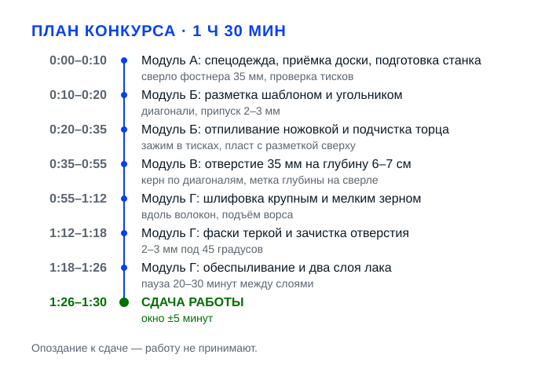
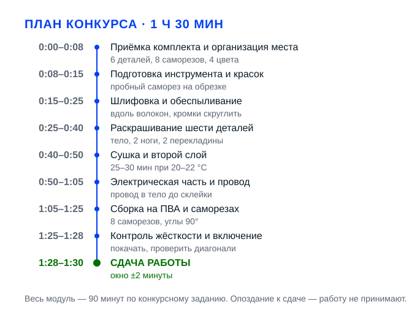
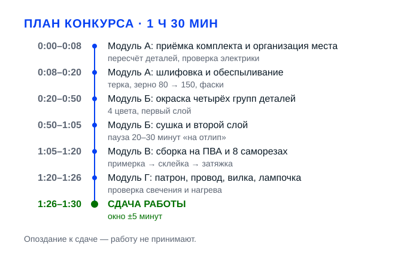

Ручная работа по дереву (ФВ)
Задания ниже — официальные файлы «Абилимпикс» (источник: abilympics-russia.ru), разложенные по категориям. Решения написаны по тексту задания, регламенту и критериям оценки; в них указано, что именно проверяет эксперт.
Школьник
14–16 лет, базовый уровень заданияВ официальном файле категории не разделены отдельными разделами — приводим задание целиком; различия по категориям смотрите в таблице модулей.
Пошаговое решение
На категории «Школьники» компетенции «Ручная работа по дереву» нужно за 90 минут изготовить подставку для карандашей и авторучек — карандашницу. Работа идёт по короткой, но требовательной цепочке: разметка по шаблону и угольником, отпиливание ножовкой, несквозное отверстие сверлом фостнера диаметром 35 мм на глубину 6–7 см, шлифовка крупным и мелким зерном, снятие фасок теркой и покрытие акриловым водно-дисперсионным лаком в два слоя. Исходный материал — нестроганая доска из хвои шириной 100 мм и толщиной 40–50 мм, поэтому половина успеха зависит от того, насколько внимательно выбран участок без сучков и перенесены линии на все стороны. Важны три вещи: отверстие сверлится в верхний торец вдоль волокон, потому что толщина доски меньше нужной глубины; переход к мелкому зерну делается только после исчезновения рисок; лак наносится тонко и с паузой, иначе к сдаче покрытие липкое.

Задача 1. Подготовить рабочее место и принять заготовкуМодуль А · 0:00–0:10 из 90 минут
До первого движения ножовкой нужно сделать три вещи: обезопасить себя, понять, что за доска лежит на верстаке, и убедиться, что станок и инструмент работают. Эти десять минут не входят в полезное время работы, но именно они определяют, будет ли дальше ровный торец, целая кромка и отверстие без скола. На конкурсе спешка на старте обходится дороже всего: переделывать разметку на нестроганой хвое почти невозможно, а вторую заготовку взамен испорченной не выдают.
Действие 1.1. Войти в мастерскую по правилам техники безопасности
Шаг 1.1.1
Надеваем халат или фартук, полностью убираем волосы под берет или резинку, рукава подворачиваем выше локтя либо стягиваем резинкой у запястья, снимаем кольца, браслеты, цепочки и часы. Обувь выбираем закрытую, на нескользящей подошве, потому что у верстака всегда лежит стружка и мелкая пыль. Перед подходом к тискам проверяем, что спецодежда застёгнута на все пуговицы и ничего не свисает: за живой рукав или цепочку ножовка и сверло цепляются мгновенно, быстрее, чем успеваешь отдёрнуть руку.
Требования охраны труда вынесены в конкурсном задании отдельным разделом, и эксперт проверяет их до старта: за свисающие рукава, распущенные волосы, украшения и перчатки у станка работу останавливают. Сверло фостнера на 35 мм вращается быстро, и любой свисающий предмет наматывается на него раньше, чем участник успевает отреагировать. Аккуратный вид с первой минуты показывает, что участник понимает, где он находится, и это входит в оценку.
Отойдите на шаг и посмотрите на себя: волос не видно ни спереди, ни сзади, халат застёгнут, рукава не спускаются ниже локтя, на руках нет украшений. Попросите волонтёра или соседа посмотреть со спины — именно там чаще всего остаётся выбившаяся прядь.
Самая частая ошибка — надеть берет на макушку, оставив затылок открытым: спереди всё выглядит нормально, а сзади волосы выбиваются и попадают в зону сверления. Вторая — прийти в удобной открытой обуви или в футболке, рассчитывая надеть халат потом: время на это уйдёт из модулей, а замечание по безопасности уже записано.
Эксперт фиксирует соответствие спецодежды до старта и дальше следит, остаётся ли она в порядке по ходу работы: снятый рукав или расстёгнутый халат к середине конкурса тоже считаются нарушением.
Шаг 1.1.2
Обходим рабочее место по периметру и убираем всё, что не относится к заданию: сумки, куртки, лишние заготовки, телефон. Инструмент раскладываем справа от тисков в том порядке, в котором он понадобится: сначала угольник, карандаш и шаблон, за ними ножовка, потом сверло и ключ к патрону. Проход между верстаками по нормам оснащения — не меньше 1,5 метра, и его нельзя занимать ни струбцинами, ни удлинителем, ни снятой стружкой.
Требования охраны труда и чистоту рабочего места оценивают по ходу всей работы, а не только на входе. Свободный проход шириной 1,5 метра нужен потому, что с заготовкой в руках и с ножовкой на весу участник отступает назад, не глядя под ноги. Разложенный по операциям инструмент экономит минуты, а их на всё задание 90, и снимает риск, что полотно окажется под стружкой.
Проход свободен по всей длине, на верстаке нет ничего лишнего, инструмент лежит в порядке операций и не свисает с края. Проверьте, что до розетки и выключателя станка можно дойти, не перешагивая через струбцины и удлинитель.
Классическая ошибка — начать с разметки, оставив сумку на соседнем верстаке и струбцины под ногами: к середине работы вокруг становится тесно, а замечание эксперта по безопасности уже записано. Вторая — сложить весь инструмент в кучу у тисков, где ножовка цепляется за угольник, а карандаш каждый раз приходится искать заново.
Эксперт обходит площадку в первые минуты и отмечает, как организовано место: свободные проходы, инструмент на своих местах, нет лишних предметов в зоне пиления и сверления.
Шаг 1.1.3
Проверяем верстак: он должен стоять устойчиво, без качания, а губки тисков — сходиться ровно, без перекоса. Несколько раз открываем и закрываем тиски до конца, смотрим, идёт ли винт свободно и не выкручивается ли он из гайки. Струбцину проверяем на пробном зажиме обрезка доски: она должна держать плотно, не срываясь по резьбе, и не оставлять на дереве вмятины глубже миллиметра.
Тиски — единственный способ удержать заготовку так, чтобы обе руки оставались свободными, а пиление шло точно по линии. Перекошенные губки поджимают доску неравномерно: один край выходит из зажима, и пропил уходит от разметки на несколько миллиметров, что для карандашницы с чёткими гранями уже брак. Разболтанный винт на пилении даёт люфт, и заготовка клюёт вниз ровно в тот момент, когда ножовка входит в дерево.
Губки тисков закрываются без зазора по всей длине, винт идёт плавно и без стука, струбцина держит обрезок и не проворачивается. Верстак не качается, если на него нажать рукой у переднего края. Отдельно проверьте, что губки не оставляют на доске вмятин: зажмите обрезок и посмотрите на след.
Зажать заготовку в тиски с перекошенными губками: доска встаёт под углом, и торец получается косым, а исправлять его теркой — значит потерять размер. Вторая ошибка — не проверить струбцину заранее: на шлифовальном этапе она срывается, лист наждачной бумаги уезжает, и работа встаёт на несколько минут.
Смотрит на зажим в момент пиления: держит ли заготовка, не помогает ли участник себе коленом или рукой, устойчиво ли стоит верстак под нагрузкой. Если тиски неисправны, участник должен позвать эксперта до начала работы, а не бороться с ними в процессе.
Действие 1.2. Принять заготовку и расходные материалы
Шаг 1.2.1
Берём доску из комплекта и проверяем её размеры: порода хвоя, ширина 100 мм, толщина 40–50 мм, длина произвольная. Измеряем ширину и толщину линейкой или штангенциркулем в трёх местах по длине, потому что нестроганая доска бывает разной по сечению. Отмечаем карандашом участок, который пойдёт в дело: он должен быть без крупных сучков и трещин именно на том торце, где будет отверстие.
Ширина 100 мм и толщина 40–50 мм — не справочные цифры, а исходные данные для разметки: от них зависит, встанет ли шаблон карандашницы без свесов и хватит ли тела заготовки на стенку вокруг отверстия диаметром 35 мм. Если взять участок с сучком, сверло фостнера поведёт по косослою, и отверстие уйдёт в сторону от центра. Проверка размеров занимает две минуты, а исправлять последствия приходится переделкой всей заготовки, которой на конкурсе нет.
Ширина и толщина измерены в трёх точках и записаны, разница по сечению не больше пары миллиметров. Выбранный участок чистый: сучков диаметром больше 10 мм, трещин и смоляных карманов на нём нет. Запишите измерения на бумаге или на торце карандашом, чтобы потом не гадать, какую толщину вы приняли за исходную.
Взять первый попавшийся край доски, не посмотрев на сучки: при сверлении на 35 мм сучок разворачивает сверло, и стенка карандашницы с одной стороны становится тонкой, вплоть до скола. Вторая ошибка — не измерить толщину и потом удивиться, что глубины 6–7 см в пласть не получить физически.
Подходит к верстаку на этапе приёмки и смотрит, осмотрел ли участник заготовку и понимает ли, где у неё лицевая сторона, а где изнанка. Если участник берёт доску, не глядя на торец, это видно сразу: разметка потом встаёт на сучок.
Шаг 1.2.2
Кладём доску на верстак и осматриваем обе пласти и обе кромки: ищем сучки, смоляные карманы, трещины, сколы и косослой. Выбираем лицевую пласть — ту, что ровнее и чище, — и помечаем её карандашом крестиком, чтобы не перепутать в процессе. Направление волокон определяем по боковой кромке: пилить и шлифовать будем вдоль них, а не поперёк, и от этого зависит чистота поверхности.
Нестроганая хвоя почти всегда имеет ворс и мелкие отколы, и если лицевую пласть не выбрать сразу, после шлифовки на видимой стороне останутся задиры. Направление волокон определяет и качество пиления: ножовка, идущая поперёк волокон, режет чисто, а идущая вдоль склонна уводить полотно в сторону. Лицевая сторона потом уходит под лак, поэтому все её дефекты будут видны сильнее всего, и выбирать её нужно до разметки, а не после.
Лицевая пласть помечена крестиком, дефекты обведены карандашом, направление волокон понятно по кромке. На выбранном участке нет трещины, которая выходит в торец. Отдельно посмотрите на кромку, которая пойдёт вниз: если по ней идёт трещина длиннее 10 мм, участок лучше сместить.
Начать разметку с изнанки, а потом перевернуть заготовку: все размеры окажутся зеркальными, и отверстие сместится к краю. Вторая ошибка — не заметить трещину у торца: при зажиме в тисках она расходится, и от угла откалывается кусок, который уже ничем не восстановить.
Оценивает, выбрана ли лицевая сторона осознанно: смотрит на пометки и на то, как участник кладёт заготовку при разметке и при сверлении. Отмечает, обводит ли участник дефекты карандашом или просто отодвигает доску в сторону.
Шаг 1.2.3
Раскладываем расходные материалы по операциям: лист крупной наждачной бумаги, лист мелкой, акриловый водно-дисперсионный лак, кисть, ветошь для пыли. Проверяем, что наждачная бумага не затёрта и не намокла, кисть сухая и не лежала ворсом вниз, а банка лака закрыта. Считаем инструмент по перечню: ножовка, угольник, карандаш, сверло фостнера на 35 мм, струбцины, терка, кисть.
На всё задание отведено 90 минут, и каждая остановка на поиск — это минута, отнятая у шлифовки или лакировки. Перечень оборудования в конкурсном задании закрытый, и если чего-то не хватает, заменить это после старта можно только через эксперта, а не самому. Сухая кисть и свежая наждачная бумага напрямую влияют на чистоту поверхности и на качество покрытия, за которые начисляют баллы в итоговой оценке изделия.
Все позиции перечня на месте, наждачная бумага двух зернистостей лежит отдельно и не перепутана, кисть сухая, лак закрыт. Если чего-то нет, вы знаете, чего именно, и можете назвать это эксперту одной короткой фразой.
Обнаружить отсутствие сверла нужного диаметра уже после разметки: перестраивать план поздно, а сверлить другим диаметром — значит не выполнить операцию вообще. Вторая ошибка — оставить наждачную бумагу на полу: она набирает пыль и влагу и перестаёт резать, а на шлифовке это видно по ворсу.
Сверяет комплект до старта и отмечает, умеет ли участник работать по перечню, а не наугад, и сообщает ли о нехватке сразу. Если чего-то не хватает, ждёт, что участник скажет об этом сразу и назовёт позицию, а не начнёт работать тем, что есть.
Действие 1.3. Подготовить станок и режущий инструмент
Шаг 1.3.1
Ставим сверло фостнера диаметром 35 мм в патрон станка: хвостовик вводим до упора, зажимаем тремя кулачками равномерно, а не одним до отказа. После затяжки включаем станок на короткое время и смотрим на биение: сверло должно вращаться без заметного гуляния кромки. Если работаем шуруповёртом на 12 В, проверяем ту же затяжку и обязательно ставим его на первую скорость.
Фостнер на 35 мм снимает много материала и при биении работает как рычаг: разбивает патрон и оставляет на входе отверстия рваную кромку, которую потом приходится зашлифовывать вручную. Ровно зажатое сверло даёт чистую цилиндрическую стенку и плоское дно — именно это и оценивают в готовом изделии. Плохо зажатое сверло может вырваться из патрона на оборотах, а это уже не баллы, а травма.
Сверло стоит без перекоса, кулачки затянуты равномерно, при коротком пуске биение не заметно на глаз, а на слух нет стука. После полной остановки проверьте рукой: сверло не проворачивается в патроне. Ключ от патрона при этом лежит на плиту, а не остаётся в отверстии.
Затянуть патрон одним кулачком: сверло встаёт с перекосом, отверстие получается конусным, а кромка входа скалывается. Вторая ошибка — включить станок, не убрав ключ из патрона, и получить его в лицо или в заготовку.
Смотрит на подготовку станка: зажат ли инструмент, убраны ли ключ и лишние предметы с плиты, опущен ли защитный экран. Отдельно проверяет, стоит ли на станке защитный экран и опущен ли он до уровня заготовки.
Шаг 1.3.2
Проверяем ножовку: полотно натянуто, зубья направлены от ручки, развод ровный, на зубьях нет залипшей смолы. Угольник прикладываем к кромке доски — он должен садиться без просвета, иначе все перпендикуляры уйдут в сторону. Шаблон карандашницы кладём на пласть и проверяем, что он не помят и его контур читается целиком, включая внутренние линии. Если на зубьях есть смола, снимаем её тряпкой до начала работы, а не во время пиления.
Ножовка с залипшими зубьями идёт по дереву с усилием и уводит пропил, а угольник с выработкой даёт незаметный глазу перекос в один-два градуса, который на торце превращается в миллиметры. Шаблон — единственный носитель формы изделия, и если его контур сбит, никакая аккуратность пиления не спасёт результат. Всё это проверяется до разметки, потому что менять инструмент после нанесения линий уже нельзя без потери времени.
Полотно ножовки звенит при лёгком щелчке и не имеет волны, угольник прижат к кромке без просвета по всей длине, шаблон целый и читаемый. Если на зубьях есть смола, снимаем её тряпкой до начала работы.
Пилить ножовкой с неравномерным разводом: пропил уводит в сторону, торец приходится подчищать теркой, и геометрия изделия уходит от шаблона. Вторая ошибка — размечать непроверенным угольником: перекос виден только на готовом изделии, когда исправлять уже нечего.
Отмечает, проверяет ли участник инструмент перед работой, и как реагирует, если находит дефект: меняет, сообщает или работает как есть. Особенно внимательно смотрит на угольник: им чаще всего размечают на глаз, не проверяя.
Шаг 1.3.3
Проговариваем для себя порядок операций и распределяем время: разметка и пиление примерно до 35-й минуты, сверление до 55-й, шлифовка и фаски до 75-й, лак и сдача в оставшиеся 15 минут. Готовим подкладную доску под заготовку при сверлении, чтобы не сверлить в плиту станка. Ветошь и щётку для пыли кладём рядом с местом шлифовки, а не в другой конец верстака.
Девяносто минут на шесть операций — это около пятнадцати минут на каждую, и без плана лак наносится в последние пять минут, когда первый слой ещё липнет. Подкладная доска спасает и сверло, и плиту станка: при ошибке в глубине сверло выходит насквозь и врезается в дерево, а не в металл. Планирование времени напрямую влияет на критерий организации работы и на итоговое качество покрытия, ведь второй слой требует паузы на высыхание.
У вас есть твёрдо запомненные контрольные точки по времени, подкладная доска лежит у станка, ветошь и щётка на месте. Сверьтесь с часами на площадке и запомните время старта, чтобы потом не считать в уме.
Идти без плана и обнаружить, что на лакировку осталось три минуты: второй слой не высохнет, и работу сдают липкой. Вторая ошибка — сверлить без подкладной доски и прожечь плиту станка, за что работу останавливают до выяснения.
Следит за темпом: успевает ли участник к контрольным точкам и не перескакивает ли через операции, чтобы выиграть время. Если участник сбивается с темпа, эксперт отмечает это в графе организации работы, а не только в итоговом результате.
Задача 2. Разметить заготовку и отпилить её по контуруМодуль Б · 0:10–0:35 из 90 минут
Разметка — самая необратимая операция: линию на нестроганой хвое не стирают, а перечерчивать её заново на уже отмеченной плате бессмысленно, потому что карандаш оставляет в ворсе борозду. Поэтому сначала шаблон укладывается по выбранной базе, потом линии переносятся на обе боковые стороны, и только после контроля разметки заготовка идёт в тиски. Пиление занимает меньше времени, чем разметка, но именно оно превращает доску в деталь, и сантиметр, потерянный на торце, уже не вернуть.
Действие 2.1. Перенести контур шаблона на заготовку
Шаг 2.1.1
Кладём доску лицевой пластью вверх и выбираем базу — ровную кромку, от которой будем отсчитывать все размеры. Прикладываем шаблон карандашницы так, чтобы его сторона легла параллельно кромке, и сдвигаем к тому участку, который мы отметили как чистый. Шаблон придерживаем левой рукой, не сдвигая его между отдельными линиями, иначе контур получится с разрывом.
База нужна потому, что у нестроганой доски кромки не параллельны: если отсчитывать от разных сторон, прямоугольник шаблона превратится в трапецию, и изделие встанет с перекосом. Укладка шаблона на чистый участок решает сразу две задачи — уводит отверстие от сучка и оставляет запас на подчистку торца. Сдвинутый между линиями шаблон даёт контур, который невозможно замкнуть, и разметку приходится начинать заново.
Сторона шаблона прижата к кромке без просвета, между шаблоном и краем доски остаётся запас не меньше 5 мм с каждой стороны. Отмеченный участок действительно чистый, сучков под контуром нет. Проверьте также, что шаблон не перекрывает кромку, по которой будет вестись угольник.
Приложить шаблон «примерно параллельно»: контур уходит относительно кромки, и после пиления торец оказывается не перпендикулярным пласти. Вторая ошибка — водить шаблон по доске, придерживая его за угол: он поворачивается на несколько градусов, и прямоугольник получается с косым углом.
Наблюдает за укладкой шаблона: держит ли участник его всей ладонью, проверяет ли параллельность кромке, не торопится ли. Смотрит, прижимает ли участник шаблон ладонью целиком или держит его за один угол двумя пальцами.
Шаг 2.1.2
Обводим контур шаблона карандашом с твёрдостью HB или 2М, держа его наклонно, а не вертикально: грифель тогда идёт по ворсу, а не рвёт его. Линию ведём одним движением на всю длину стороны, не останавливаясь на углах, и только потом отдельно уточняем углы. Обводим все стороны, включая ту, которая пойдёт под отпиливание, и сразу ставим метку на лицевой пласти, чтобы потом не перепутать стороны.
На нестроганой хвое вертикально поставленный карандаш проваливается между волокнами, и линия получается прерывистой, а по такой линии невозможно пилить точно. Одна непрерывная линия на сторону нужна потому, что ножовка ведётся по всей длине, и любая остановка грифеля даёт уступ, за который полотно цепляется. Метка на лицевой пласти экономит время потом, когда заготовка будет переворачиваться в тисках и на шлифовке.
Линия замкнута по всему контуру, толщина её одинаковая, углы читаются, лицевая сторона помечена. Проведите по линии пальцем: она должна ощущаться как ровная канавка, а не как пунктир. Если линия где-то пропала, обведите этот участок заново, не усиливая нажим на остальных.
Обводить шаблон мягким карандашом с сильным нажимом: в ворсе остаётся глубокая борозда, которая после шлифовки превращается в тёмную полосу, видную под лаком. Вторая ошибка — вести линию по частям, с остановками: на стыках получаются уступы, и ножовка уходит в сторону.
Смотрит на качество линии: непрерывная ли она, одного ли нажима, не осталось ли двойных линий от исправлений. Отмечает и то, чем участник обводит контур: твёрдым карандашом линия остаётся тонкой, мягким расплывается по ворсу.
Шаг 2.1.3
Прикладываем угольник короткой стороной к кромке доски, а длинной — к углу контура, и переносим линии на обе боковые стороны, продолжая их строго перпендикулярно пласти. Ведём карандаш по ребру угольника от пласта вниз, до противоположной пласти, не отрывая угольник между сторонами. То же повторяем для второго торца и для обеих кромок, чтобы линии замкнулись в кольцо по периметру заготовки.
Пилить придётся по двум сторонам одновременно: ножовка идёт по пласти и по кромке, и если линия есть только сверху, полотно уходит по волокну вниз под углом. Замкнутые по периметру линии дают возможность проверять пропил с двух сторон и вовремя исправлять увод. Именно перпендикулярность, перенесённая угольником, отличает ровный торец от косого, а торец виден на готовом изделии сразу.
Линии на боковых сторонах совпадают с линиями на пласти в углах, угольник приложен без просвета. Проверьте одну из линий, перевернув заготовку: она должна прийти ровно в тот же угол с обратной стороны.
Переносить линии «на глаз», без угольника: на толщине 40–50 мм перекос в пару градусов даёт на нижней пласти смещение в несколько миллиметров, и торец получается клином. Вторая ошибка — отрывать угольник и приставлять его заново на каждом углу: линии не сходятся, и пилить приходится по двум разным ориентирам.
Проверяет, пользуется ли участник угольником при переносе на боковые стороны, и смотрит, сходятся ли линии в углах. Если линии на боковых сторонах появились без угольника, эксперт видит это по несовпадению углов на нижней пласти.
Шаг 2.1.4
Проверяем разметку до пиления: измеряем диагонали получившегося прямоугольника — они должны быть равны с точностью до миллиметра, иначе углы не прямые. Смотрим, что до линии отпиливания остаётся припуск 2–3 мм на подчистку торца теркой. Проверяем, что контур не выходит на сучок и что отверстие, которое будет сверлиться позже, попадает в тело заготовки, а не на край.
Равные диагонали — самый быстрый способ проверить прямой угол, не прикладывая угольник к каждому углу. Припуск в 2–3 мм нужен потому, что ножовка никогда не идёт идеально по линии, и подчистить торец теркой можно только при наличии запаса. Если контур уже вышел на сучок или отверстие попадает на кромку, лучше перечертить сейчас, чем обнаружить это после сверления, когда заготовка уже отпилена.
Диагонали равны, припуск по линии отпиливания не меньше 2 мм, контур не пересекает сучков и трещин, центр будущего отверстия отстоит от кромок не меньше чем на 17–18 мм. Если диагонали разошлись больше чем на 1 мм, прямоугольник перечерчивают заново, а не подгоняют пилением.
Пропустить проверку диагоналей: перекошенный прямоугольник выясняется только на сборке, когда все операции уже сделаны. Вторая ошибка — разметить контур без припуска, по самой линии: при пилении полотно съедает ещё миллиметр, и торец выходит короче нужного.
Подходит именно на этапе размеченной заготовки и смотрит, проверял ли участник диагонали и оставлен ли припуск. Спрашивает иногда, зачем нужен припуск: уверенный ответ показывает, что участник понимает последовательность операций.
Действие 2.2. Зажать заготовку и отпилить её ножовкой
Шаг 2.2.1
Зажимаем доску в тисках верстака, выпустив ту часть, которая будет отпиливаться, и следя за тем, чтобы пласт с разметкой оказался сверху. Выпускаем не больше 30–40 мм над губками: чем короче свес, тем меньше вибрации. Затягиваем тиски до плотного контакта, но без вмятин от губок, и проверяем рукой, что доска не качается ни вверх, ни вбок. Губки при этом должны приходиться на целую часть доски, а не на место будущего пропила.
Пласт с разметкой сверху — обязательное условие, прописанное в пошаговой инструкции: пилить вслепую по нижней линии нельзя, полотно уйдёт по волокну. Короткий свес уменьшает дрожание, из-за которого ножовка выбивает скол на выходе. Плотный, но не чрезмерный зажим сохраняет кромку целой: передавленные губки оставляют вмятины, которые потом приходится вышлифовывать, теряя размер.
Разметка видна сверху, свес над губками не больше 40 мм, доска не двигается при нажатии ладонью. Линия отпиливания параллельна губкам тисков. Покачайте заготовку рукой в стороны: люфт больше миллиметра означает, что тиски затянуты слабо и пропил уведёт.
Зажать доску разметкой вниз: пиление идёт по невидимой линии, пропил уводит на 3–5 мм, и торец приходится перепиливать. Вторая ошибка — выпустить половину доски над тисками: она пружинит, ножовка скачет, и на кромке появляются сколы.
Смотрит на зажим перед первым движением ножовки: где разметка, какой свес, не держит ли участник заготовку рукой. Если участник зажимает доску за отпиливаемую часть, эксперт останавливает работу: так пилить нельзя.
Шаг 2.2.2
Становимся так, чтобы правое плечо было над линией пропила, а корпус не загораживал разметку. Начинаем запил на себя, короткими движениями у дальнего от себя угла, приставив полотно большим пальцем левой руки как упор, но убрав палец до первого движения. Когда пропил углубился на 3–5 мм и полотно держится само, переходим на полный размах. Правая рука держит рукоять всей ладонью, указательный палец вытянут вдоль ручки, а не охватывает её.
Стойка с плечом над линией даёт прямую линию пиления: если стоять сбоку, корпус разворачивает полотно, и пропил уходит в сторону. Короткий запил нужен, чтобы полотно не соскочило с ворсистой поверхности и не поцарапало пласть. Палец как упор — приём из инструкции по безопасной работе, но держать его во время движения нельзя: именно на этом движении чаще всего и режут палец.
Полотно идёт точно по линии, пропил ровный, без сколов по краям. Плечо над линией, корпус не загораживает разметку, левая рука на тисках, а не на заготовке. Проверьте также, что полотно не касается губок тисков: касание даёт скрежет и портит зубья.
Начать с полного размаха: полотно соскакивает с ворсистой кромки и оставляет на лицевой пласти глубокую царапину, которую не убрать шлифовкой. Вторая ошибка — держать палец у полотна во время пиления, что заканчивается порезом и остановкой работы.
Оценивает стойку и хват в первые секунды пиления: видно, умеет ли участник начинать запил и держит ли руку вне линии пропила. Обращает внимание, куда смотрит участник: на линию или на руку.
Шаг 2.2.3
Пилим ровными движениями на полный размах, с усилием только на рабочем ходе, и каждые 8–10 движений проверяем, идёт ли полотно по линии со стороны кромки. Если линия начала уходить, не выкручиваем полотно в пропиле, а поворачиваем заготовку в тисках и продолжаем пилить с другой стороны. Ближе к выходу ослабляем нажим, чтобы не выколоть нижние волокна.
Проверка каждые 8–10 движений даёт возможность поймать увод в 1–2 мм, пока его ещё можно исправить поворотом заготовки. Выкручивание полотна в пропиле ломает зубья и расширяет канал, после чего торец уже не спасти. Ослабленный нажим на выходе — единственный способ получить чистый нижний край на хвое, которая скалывается по волокну.
Полотно идёт по линии с обеих сторон, ширина пропила одинаковая, сколов на нижней пласти нет. Остаток пути до линии — не больше 2 мм. Если полотно пошло в сторону больше чем на 2 мм, остановитесь, поверните заготовку и продолжите с другой стороны.
Держать ножовку строго вертикально и не проверять вторую сторону: полотно уходит вбок внутри доски, и на выходе пропил смещается на 3–4 мм. Вторая ошибка — давить на выходе: нижние волокна выкалываются, и на торце остаётся скол глубиной до 5 мм.
Следит за ритмом и за проверками: смотрит ли участник на линию с обеих сторон или пилит не глядя. Если участник пилит, не поднимая головы, эксперт видит, что контроля линии нет, и это отражается в оценке точности.
Шаг 2.2.4
Отпиливаем остаток, придерживая отрезаемый кусок левой рукой сбоку, а не под полотном, чтобы он не упал на ногу. Освобождаем тиски и снимаем заготовку, не выдёргивая её вбок, чтобы не сломать кромку о губки. Сразу прикладываем угольник к торцу и смотрим, насколько он ушёл от прямого угла, и есть ли скол на выходе полотна. Отрезанный кусок сразу убираем на край верстака, чтобы он не мешал и не попал под ноги.
Падающий отрезанный кусок — типичная причина травмы на конкурсе, и придерживать его нужно сбоку, вне линии падения полотна. Снятие заготовки вбок ломает кромку о закалённые губки, а это скол, который придётся вышлифовывать. Немедленная проверка угольником показывает, нужно ли подчищать торец теркой или геометрия в порядке, и это решение определяет, сколько времени останется на сверление.
Торец проверен угольником в двух плоскостях, отклонение не больше 1 мм на толщине доски, сколов глубиной больше 1 мм нет. Заготовка лежит на верстаке лицевой пластью вверх. Заодно проверьте, что на торце нет бахромы из волокон: она снимается теркой за один проход.
Уронить отрезанный кусок на пол и потерять его из виду: на площадке это нарушение порядка, а если кусок упадёт на ногу, работа остановится. Вторая ошибка — не проверить торец сразу и начать сверление на косой заготовке: отверстие встанет под углом к пласти.
Смотрит на торец сразу после пиления и отмечает, проверяет ли участник геометрию или сразу переходит к следующей операции. Смотрит на порядок на верстаке после пиления: отрезанный кусок должен лежать в стороне.
Действие 2.3. Довести геометрию заготовки
Шаг 2.3.1
Снимаем торец теркой с закреплённой на ней мелкой наждачной бумагой: кладём заготовку на подкладку, прижимаем терку всей ладонью и двигаем её вдоль торца короткими проходами, не наклоняя. Снимаем по 0,3–0,5 мм за проход и после каждых пяти-шести проходов проверяем угольником. Работаем до тех пор, пока торец не станет ровным и перпендикулярным пласти, а следы зубьев ножовки не исчезнут.
Терка с мелким зерном снимает материал контролируемо, в отличие от ножовки, которая сразу забирает миллиметр и больше. Наклон терки превращает торец в скруглённую поверхность, и заготовка перестаёт стоять на нём устойчиво. Подчистка нужна ещё и потому, что после ножовки на хвое остаются задиры, которые под лаком выглядят как тёмные полосы, а критерий чистоты поверхности оценивается отдельно.
Торец ровный, угольник прилегает без просвета, следов зубьев и задиров нет. Поставьте заготовку на торец на ровную плиту: она должна стоять без качания. Проверьте терку на просвет: если бумага на ней порвалась, замените её, иначе на торце появятся глубокие риски.
Давить на терку всем корпусом: она снимает материал неравномерно, и торец получает «горб» посередине. Вторая ошибка — подчищать торец, держа заготовку на весу: она пружинит под теркой, и плоскость выходит волнистой.
Смотрит на торец под углом к свету: ровная поверхность даёт одинаковый блик, волнистая — полосы. Обращает внимание, чем участник подчищает торец: теркой с мелким зерном или напильником, которого нет в перечне.
Шаг 2.3.2
Проверяем габариты заготовки по шаблону: длину, ширину и высоту, а также прямые углы во всех четырёх углах. Измеряем диагонали ещё раз, уже на готовой детали, и сравниваем с шаблоном с точностью до миллиметра. Если размер больше на 1–2 мм, снимаем лишнее теркой с той стороны, где нет лицевой пласти, а не с лицевой. Результаты измерений полезно записать на бумаге: на защите работы это помогает отвечать на вопросы без запинки.
Карандашница должна совпадать с образцом, и в конкурсном задании проверка прямо описана как сравнение с оригиналом. Снимать лишнее с нелицевой стороны нужно потому, что лицевая уже размечена и подготовлена под чистовую отделку, и любая подгонка на ней портит внешний вид. Проверка диагоналей на этом этапе ловит перекос до сверления, когда заготовку ещё можно исправить.
Все размеры совпадают с шаблоном с точностью до 1 мм, диагонали равны, углы прямые. Заготовка стоит на торце ровно, без наклона. Проверьте изделие, поставив его на ровную плиту: качание в любую сторону означает перекос торца или неточный угол.
Подгонять размер, снимая материал с лицевой пласти: на ней появляются следы терки, которые под лаком видны как пятна. Вторая ошибка — принять «примерно совпадает» за норму: отклонение в 3 мм на карандашнице заметно, потому что изделие небольшое.
Прикладывает шаблон или образец к заготовке и смотрит на зазоры по сторонам. Эксперт прикладывает шаблон к заготовке на этапе, когда изделие ещё не отшлифовано, и смотрит на зазоры по четырём сторонам.
Шаг 2.3.3
Определяем, где будет верх, а где низ изделия: верх — тот торец, в который пойдёт отверстие, он должен быть ровнее и чище. Ставим на лицевой пласти метку верха, например небольшой крестик у соответствующего торца, и убираем карандашные линии, которые больше не нужны. Снимаем мелкие заусенцы с рёбер одним-двумя проходами мелкой наждачной бумаги, не скругляя ребро.
Метка верха нужна потому, что при сверлении и шлифовке заготовка переворачивается много раз, и перепутанный верх означает отверстие, просверленное в торец с задирами. Удаление лишних карандашных линий важно для отделки: графит под лаком не растворяется и остаётся тёмным следом. Заусенцы снимаются до шлифовки, иначе они отламываются под наждачной бумагой и оставляют вырыв волокон.
Метка верха стоит на лицевой пласти, лишних линий на видимых сторонах нет, рёбра не режут руку при проведении пальцем вдоль них. Проверьте метку и на случайные карандашные штрихи рядом: они проявятся под лаком как серые пятна.
Просверлить отверстие в торец, который был низом, с задирами от ножовки: вход отверстия получается рваным, и фаску приходится снимать глубже, теряя размер. Вторая ошибка — оставить карандашные линии: после лака они проявляются как серые полосы.
Смотрит, помечено ли у участника направление изделия, и как он обращается с заготовкой при перевороте. Отмечает, помечает ли участник верх изделия: на приёмке видно, попал ли рисунок волокон на лицевую сторону.
Задача 3. Просверлить несквозное отверстие под карандашиМодуль В · 0:35–0:55 из 90 минут
Отверстие диаметром 35 мм и глубиной 6–7 см — главная операция задания: именно оно делает подставку карандашницей, и именно в нём сосредоточены самые дорогие ошибки. Сверлить нужно в верхний торец заготовки, вдоль волокон, потому что толщина доски 40–50 мм физически меньше требуемой глубины, и в пласть такое отверстие не получить. Здесь важны три вещи одновременно: точное совпадение с центром, вертикальность сверла и контроль глубины, ведь сквозное отверстие превращает изделие в брак.
Действие 3.1. Найти центр отверстия и закрепить заготовку
Шаг 3.1.1
Кладём заготовку верхним торцом к себе и находим центр: проводим две диагонали от углов торца тонкими линиями и ставим точку в их пересечении. Если по шаблону центр задан иначе, переносим его с шаблона, приложив его к торцу и совместив с кромками. Накалываем точку шилом или тонким гвоздём на глубину 2–3 мм, чтобы сверло не скользило по торцу. Керн держим строго вертикально, чтобы точка не сместилась по волокну в сторону.
Торец хвои — самая скользкая поверхность в заготовке: волокна идут вдоль сверла, и фостнер без керна уходит в сторону на несколько миллиметров, пока не зацепится за волокно. Керн глубиной 2–3 мм задаёт сверлу направление и одновременно служит точкой контроля: если сверло стоит над керном, значит позиция верна. Смещённый центр — это неравномерная стенка, а при смещении больше 5 мм стенка становится тоньше 10 мм и может лопнуть при сверлении.
Диагонали пересекаются в одной точке, керн заметен и находится ровно в пересечении, расстояния от керна до обеих кромок одинаковые. Измерьте линейкой: до каждой из двух длинных кромок должно быть примерно по 50 мм, до коротких — по 20–25 мм.
Ставить сверло прямо по карандашной точке без керна: на торце сверло «плывёт» по волокнам, и отверстие уходит к краю на 4–6 мм. Вторая ошибка — кернить на глаз, без диагоналей: центр смещается на 3 мм, и стенка получается заметно тоньше с одной стороны.
Смотрит на торец с разметкой и на керн: если точки нет, дальше уже неважно, насколько аккуратно пилили. Если участник сразу берёт сверло, не размечая центр, эксперт фиксирует это как нарушение последовательности операций.
Шаг 3.1.2
Ставим заготовку вертикально в тиски, верхним торцом вверх, и подкладываем под нижний торец ровную подкладную доску, чтобы не испортить губки и не вырвать волокна на выходе. Зажимаем по боковым граням так, чтобы губки прижимали заготовку по всей высоте, а не за угол, и проверяем вертикальность угольником в двух плоскостях. Затягиваем до плотного контакта и ещё раз проверяем, что заготовка не наклонена и не проворачивается.
Вертикально зажатая заготовка — условие вертикального отверстия: наклон в 3 градуса на глубине 70 мм даёт смещение дна почти на 4 мм, и стенка с одной стороны истончается. Подкладная доска нужна как страховка: если сверло пойдёт глубже, чем нужно, оно войдёт в дерево, а не в стальную плиту станка. Зажим по всей высоте исключает проворот заготовки в момент, когда фостнер заходит в торец и тянет её за собой.
Угольник, приложенный к заготовке, не даёт просвета ни в одной из двух плоскостей, заготовка не проворачивается рукой. Верхний торец выше губок не меньше чем на 80 мм, чтобы сверлу хватило места для хода.
Зажать заготовку за нижний край, выпустив её на 100 мм: при входе сверла она пружинит и наклоняется, отверстие получается косым. Вторая ошибка — сверлить без подкладной доски и упереться сверлом в плиту станка, испортив и сверло, и плиту.
Проверяет зажим и вертикальность до включения станка, а также наличие подкладки под заготовкой. Проверяет также, не выступает ли заготовка за губки так, что её можно провернуть рукой при входе сверла.
Шаг 3.1.3
Опускаем сверло так, чтобы его центр оказался точно над керном, и смотрим на просвет между кромками сверла и разметкой: зазор должен быть одинаковым со всех сторон. Проверяем вертикальность сверла по отношению к заготовке, а не к плите станка, потому что подкладка могла встать с перекосом. Запоминаем положение шпинделя и только после этого включаем станок.
Фостнер имеет направляющее остриё и режущую кромку по диаметру, и если остриё не попало в керн, кромка начинает резать торец по окружности со смещением, вырывая волокна. Проверка по заготовке, а не по плите, нужна потому, что подкладная доска толщиной даже 3 мм с перекосом даёт наклон всей системы. Совпадение по всем сторонам — единственный визуальный контроль, доступный до включения, и он занимает секунды.
Остриё сверла стоит в керне, зазоры до кромок разметки одинаковые, сверло и заготовка взаимно перпендикулярны. Рука на рукояти подачи, заготовка не тронута. Уберите руку с рукояти подачи и посмотрите на просвет ещё раз: положение не должно измениться.
Включить станок, не проверив совпадение, и «поймать» центр на ходу: сверло закусывает и вырывает кусок торца. Вторая ошибка — выравнивать сверло, подкладывая щепки под заготовку, вместо того чтобы перезажать её ровно.
Смотрит именно на этот момент: проверяет ли участник совпадение центра до пуска или включает станок сразу. Смотрит на руки участника: обе должны быть вне зоны вращения сверла до момента пуска.
Действие 3.2. Просверлить отверстие на глубину 6–7 см
Шаг 3.2.1
Включаем станок и даём сверлу набрать обороты, затем плавно опускаем его на торец, без рывка, с усилием не больше двух-трёх килограммов. Первые 5 мм проходим медленно, почти без подачи, пока кромка не прорежет окружность. Если работаем шуруповёртом на 12 В, держим его двумя руками, ставим на первую скорость и ведём сверло строго вертикально, контролируя угол по угольнику.
Фостнер режет по окружности, и рывок на входе приводит к тому, что кромка скалывает верхние волокна торца, оставляя рваный вход, который потом виден под лаком. Медленный вход на 5 мм — это тот участок, где закладывается чистота кромки, и он занимает всего несколько секунд. При работе шуруповёртом вертикальность держится только двумя руками: одна рука на корпусе, вторая на аккумуляторе, иначе инструмент уводит в сторону.
Кромка входа прорезана ровной окружностью, сколов по краю нет, сверло идёт без визга и без дыма. Стружка выходит мелкой, а не бурой и горячей. Если появился визг, подачу прекращают и проверяют, не забилась ли канавка стружкой.
Ударить сверлом по торцу с разгона: верхние волокна выкалываются, вход получается рваным, и фаску приходится снимать на 4–5 мм, теряя высоту изделия. Вторая ошибка — работать шуруповёртом одной рукой: инструмент уводит, и отверстие получается овальным.
Слушает и смотрит на вход сверла: ровная окружность и отсутствие скола — первый признак, что операция идёт правильно. Обращает внимание на скорость подачи: слишком быстрая видна по стружке и по нагреву кромки.
Шаг 3.2.2
Сверлим с периодическим выводом сверла: заглубившись на 10–15 мм, поднимаем сверло на работающих оборотах, даём стружке выйти и снова опускаем. Всего получается 4–5 таких заходов на глубину 60–70 мм. Не останавливаем сверло внутри отверстия и не выключаем станок, пока сверло в дереве. Перед каждым заходом проверяем, что стружка не лежит на торце: её сметаем щёткой, а не сдуваем, чтобы не занести влагу.
Фостнер не имеет винтового отвода стружки, поэтому при непрерывном сверлении стружка набивается в канавку, сверло нагревается и начинает гореть, а дно отверстия получается рваным. Вывод сверла на оборотах выбрасывает стружку центробежно и охлаждает кромку. Остановка сверла внутри отверстия — самый частый способ заклинить его в дереве: при выключении заготовка проворачивается вместе со сверлом и вырывается из тисков.
Стружка выходит свободно, сверло не дымит, торец и стенка не потемнели. После каждого захода видно, что дно отверстия чистое, без нагара. После последнего захода на стенке не должно быть кольцевых полос от режущей кромки глубже полумиллиметра.
Сверлить непрерывно на всю глубину: к 40 мм канавка забивается, сверло горит, и на дне остаётся тёмное кольцо, которое не убрать шлифовкой. Вторая ошибка — выключать станок, не вынув сверло: заготовку проворачивает в тисках, и кромка отверстия ломается.
Отмечает, выводит ли участник сверло для удаления стружки и не появляется ли дым и запах горелого дерева. Слушает станок: ровный гул без визга говорит о том, что сверло не перегревается.
Шаг 3.2.3
Контролируем глубину по метке: заранее наносим на сверло полоску малярной ленты или фломастером риску на расстоянии 60–70 мм от острия, считая от режущей кромки. После каждого захода смотрим, сколько осталось до метки, и на последних 10 мм подаём медленно, по 1–2 мм. Если метки нет, измеряем глубину штангенциркулем или линейкой с упором, опустив её в отверстие до дна.
Глубина 6–7 см задана в конкурсном задании, и она не случайна: при такой глубине в отверстии устойчиво стоят карандаши и авторучки, а дно остаётся достаточно толстым. Метка на сверле — единственный способ не пройти насквозь, потому что на глаз глубина в торец не читается совсем. Сквозное отверстие — это брак изделия: карандаш проваливается, а исправить уже нельзя, потому что донышко не из чего сделать.
Глубина измерена и попадает в диапазон 60–70 мм, дно ровное и плоское, до нижнего торца остаётся не меньше 25–30 мм. Метка на сверле видна и находится на нужном расстоянии. Запишите фактическую глубину на бумаге: это пригодится при сдаче и на защите работы.
Сверлить «пока не покажется», без метки: у хвои торец тёмный, и момент выхода сверла насквозь замечают, когда остриё уже пробило донышко. Вторая ошибка — считать глубину по ходу шпинделя, не учитывая, что заготовка стоит на подкладке и часть хода уходит на неё.
Спрашивает или смотрит, как участник контролирует глубину, и проверяет результат штангенциркулем на приёмке. Проверяет метку на сверле: если её нет, участник работает без контроля и рискует пройти насквозь.
Шаг 3.2.4
Дойдя до метки, поднимаем сверло на работающих оборотах до полного выхода из отверстия, затем выключаем станок и ждём полной остановки шпинделя. Освобождаем тиски и снимаем заготовку, придерживая её снизу, чтобы она не упала на плиту. Сдуваем или сметаем стружку с торца щёткой, а не ртом, чтобы не занести влагу в свежие волокна. Стружку с плиты станка убираем щёткой, а не рукой, чтобы не порезаться о кромку.
Подъём на оборотах сохраняет стенку отверстия: сверло выходит по уже прорезанному каналу и не срезает волокна по краю. Ожидание полной остановки нужно потому, что фостнер после выключения ещё вращается по инерции, и касание его рукой — типичная травма в мастерской. Снятие заготовки с поддержкой снизу предотвращает скол на нижнем торце, который появляется при падении на плиту.
Сверло вышло без сопротивления, кромка входа целая, шпиндель полностью остановлен, заготовка лежит на верстаке лицевой пластью вверх. Стружка сметена, отверстие пустое. Убедитесь, что сверло не нагрелось настолько, чтобы его нельзя было коснуться: горячее сверло говорит о перегреве.
Выдернуть сверло из отверстия на малых оборотах или после выключения: стенка получается с задирами, а сверло заклинивает. Вторая ошибка — снимать заготовку, не дождавшись остановки шпинделя, и получить порез о режущую кромку.
Смотрит на порядок действий при выходе сверла и на то, выключается ли станок до снятия заготовки. Отмечает, выключается ли станок до снятия заготовки: это базовое правило, которое проверяют в первую очередь.
Действие 3.3. Проверить отверстие и стенки изделия
Шаг 3.3.1
Измеряем отверстие: диаметр штангенциркулем по двум направлениям, глубину линейкой с упором или штангенциркулем с глубиномером. Смотрим на дно через отверстие при боковом свете: оно должно быть плоским, без «ступеньки» и без тёмного нагара. Проверяем, что ось отверстия совпадает с осью заготовки, а не идёт под наклоном. Если отверстие кажется глубже метки, проверьте дно на просвет снизу, чтобы убедиться, что донышко целое.
Диаметр 35 мм и глубина 60–70 мм — параметры, которые эксперт проверяет инструментально, и отклонение по диаметру означает, что сверло было не то или билось в патроне. Наклон оси виден по неравномерной толщине стенки: с одной стороны она тоньше, и именно там изделие лопнет при эксплуатации. Плоское дно важно и практически, и оценочно: на неровном дне карандаши стоят криво, а нагар от перегретого сверла считается дефектом отделки.
Диаметр 35 мм с точностью до 0,5 мм, глубина в пределах 60–70 мм, дно плоское и светлое, ось вертикальна. Проверьте линейкой толщину стенки в четырёх точках — разница не больше 2 мм. Сравните измеренную глубину с меткой на сверле: расхождение больше 3 мм говорит о том, что метка стояла неточно.
Не измерить глубину и сдать изделие с отверстием на 45 мм: карандаши в нём не держатся, и операция считается невыполненной. Вторая ошибка — не заметить нагар на дне: под лаком он выглядит как чёрное пятно внутри изделия.
Измеряет диаметр и глубину своим инструментом на приёмке и смотрит на дно отверстия при свете. Эксперт измеряет глубину штангенциркулем и смотрит, не осталось ли на дне нагара от перегретого сверла.
Шаг 3.3.2
Осматриваем кромку входа по всему кругу: она должна быть целой, без вырывов и сколов, с ровной окружностью. Проводим пальцем по краю — он не должен цепляться за волокна. Мелкие сколы глубиной до 1 мм снимаем кусочком мелкой наждачной бумаги, сложенным втрое, двигая его по кромке под небольшим углом, а не поперёк. Если скол глубокий, кромку приходится расширять, и тогда фаску снимают по всему кругу, а не только в одном месте.
Кромка входа — самая заметная часть готового изделия, и любой скол на ней виден сразу, потому что лак подчёркивает рельеф. Мелкие вырывы волокон опасны ещё и тем, что в них затекает лак и образует наплывы, которые невозможно убрать без повторной шлифовки всего изделия. Зачистка кромки до лакировки занимает минуту, а после лака требует снятия покрытия.
Окружность входа ровная, палец скользит по кромке без зацепов, сколов глубже 1 мм нет. Наклонного блеска по краю нет — значит, кромка не сточена неравномерно. Осмотрите кромку при косом свете: мелкие вырывы видны как тёмные точки на светлом торце.
Зачищать кромку поперёк волокон: волокна вырываются, и вместо скола появляется рытвина, которую видно под лаком. Вторая ошибка — оставить скол «он всё равно внутри»: он на виду, потому что отверстие смотрят сверху.
Осматривает кромку входа при боковом свете и отмечает, снята ли фаска и нет ли вырывов. Смотрит на кромку входа при боковом свете и сравнивает её с образцом: рваный край виден сразу, даже без увеличения.
Шаг 3.3.3
Проверяем толщину стенок и дна: измеряем линейкой расстояние от стенки отверстия до каждой боковой грани и от дна до нижнего торца. Убеждаемся, что нигде нет выхода сверла на боковую поверхность и что донышко не просвечивает на свет. Если стенка где-то тоньше 10 мм, отмечаем это место и в дальнейшем шлифуем его осторожнее, без нажима. Отметьте это место карандашом на боковой грани, чтобы не забыть при шлифовке.
Тонкая стенка — скрытый дефект, который проявляется уже после сдачи: изделие трескается по волокну при первом же падении. Проверка на просвет даёт быстрый ответ, не нарушено ли дно, и это единственный способ увидеть риск до лакировки. Знание самого тонкого места нужно ещё и для шлифовки: именно там нельзя снимать материал теркой, иначе стенка станет бумажной.
Толщина стенок не меньше 10 мм по всему периметру, дно не просвечивает, до нижнего торца остаётся 25–30 мм. Отклонение толщины стенок по четырём сторонам не больше 2–3 мм. Если дно просвечивает, изделие считается браком: отверстие нужно либо оставить как есть с оговоркой, либо переделать.
Шлифовать тонкую стенку с тем же нажимом, что и остальные: она прогибается под теркой, и на лакировке появляется трещина. Вторая ошибка — не проверить дно на просвет и сдать изделие с почти прозрачным донышком, которое ломается при первом использовании.
Оценивает пропорции изделия и равномерность стенок: это видно даже без измерений, по соотношению отверстия и габаритов. Оценивает соотношение диаметра отверстия и габаритов: слишком тонкие стенки видны по пропорциям.
Задача 4. Отшлифовать, снять фаски и покрыть лакомМодуль Г · 0:55–1:30 из 90 минут
Отделка занимает последнюю треть времени, и именно она определяет, как изделие выглядит на столе эксперта: шероховатость, фаски, чистота кромок и ровность лакового слоя. Здесь нельзя торопиться, но и нельзя растягивать: два слоя акрилового водно-дисперсионного лака требуют паузы на высыхание, а сдавать работу нужно в отведённое окно. Правило простое: сначала вся шлифовка до последней риски, потом фаски, потом обеспыливание, и только затем лак — в обратном порядке уже ничего не исправить.
Действие 4.1. Организовать шлифовальный пост
Шаг 4.1.1
Расстилаем на верстаке лист крупной наждачной бумаги и рядом лист мелкой, каждый отдельно, не внахлёст. Закрепляем листы струбцинами через деревянные бруски по краям, чтобы они не сдвигались при работе, и проверяем, что бумага натянута без складок. Заготовку кладём на свободный участок верстака лицевой пластью вверх, а терку с зажатым в ней отрезком мелкого зерна — рядом, под правую руку.
Незакреплённый лист наждачной бумаги сдвигается под заготовкой, и вместо ровной шлифовки получается волнистая поверхность с задирами. Крепление через деревянные бруски — требование пошаговой инструкции, и оно же защищает лист от разрыва струбциной. Раздельные листы нужны потому, что крупное зерно, попавшее на мелкий лист, оставляет риски глубже, чем сама мелкая шлифовка может убрать.
Оба листа натянуты, не сдвигаются при нажатии ладонью, зернистости не перепутаны. Под листами нет стружки и опилок, верстак сухой. Проверьте, что листы не свисают с края верстака: свисающий край заминается и рвётся при первом же проходе.
Шлифовать, придерживая лист рукой: он комкается, и заготовка трётся о складку, получая глубокие поперечные риски. Вторая ошибка — положить оба зерна внахлёст: крупные зёрна переходят на мелкий лист и царапают поверхность.
Смотрит, как организовано место шлифовки: закреплены ли листы, разделены ли зернистости, есть ли чем убрать пыль. Обращает внимание, есть ли отдельное место для пыли и обрезков: чистота на шлифовке влияет на качество лака.
Шаг 4.1.2
Определяем порядок работы и раскладываем поверхности по очерёдности: сначала лицевая пласть, потом боковые кромки, потом торцы и скругления, в конце отверстие. Крупным зерном проходим все поверхности, затем меняем лист на мелкий и повторяем в том же порядке. Терку держим так, чтобы рабочая поверхность была плоской, а наждачная бумага не свисала за края.
Последовательность от лицевой пласти к торцам нужна потому, что торец всегда даёт больше пыли и ворса, и если начать с него, эта пыль попадёт на лицевую поверхность и будет тереться о неё. Полный проход крупным зерном по всем поверхностям, а потом полный проход мелким — единственный способ не оставить участков, обработанных только крупным зерном. Свисающая за края терки бумага заминается и оставляет на поверхности след в виде полосы.
Все поверхности пройдены в одном порядке, зернистость меняется один раз и сразу на всех поверхностях. Терка плоская, бумага не свисает. Проверьте, что под рукой лежит ветошь: без неё пыль будет переноситься с торца на лицевую пласть.
Шлифовать вперемешку, переходя с крупного на мелкое и обратно: на поверхности остаются риски от крупного зерна, которые видны под лаком как сетка. Вторая ошибка — начать с торцов и таскать за собой пыль на лицевую пласть.
Наблюдает за сменой зернистости: видит ли участник разницу между этапами или трет одной бумагой до конца. Смотрит, меняет ли участник зернистость на всех поверхностях сразу или переходит на новую бумагу частично.
Действие 4.2. Отшлифовать все поверхности крупным и мелким зерном
Шаг 4.2.1
Кладём заготовку на лист крупной наждачной бумаги и шлифуем лицевую пласть движениями строго вдоль волокон, прижимая заготовку двумя руками и распределяя нажим по всей площади. Делаем 15–20 проходов в одном направлении, затем столько же в обратном, не поворачивая заготовку поперёк волокон. То же повторяем с боковыми кромками, держа заготовку так, чтобы кромка лежала на бумаге всей плоскостью.
Шлифовка поперёк волокон на хвое оставляет поперечные риски, которые потом не убираются мелким зерном и проявляются под лаком как мутные полосы. Движение вдоль волокон режет волокно вдоль, а не рвёт его, и поверхность получается гладкой без ворса. Нажим по всей площади нужен, чтобы не выбрать яму в середине пласти: местный пережим снимает на полмиллиметра больше и даёт заметную впадину.
Поверхность матовая, равномерная, ворс поднят, но не вырван. Проведите ладонью вдоль волокон и поперёк: вдоль должно быть гладко, поперёк — шероховато, это нормально после крупного зерна. Если ворс стоит клочьями, значит нажим был слишком сильным и волокно вырвано, а не срезано.
Тереть круговыми движениями: на поверхности остаются дуги, которые невозможно убрать без снятия лишнего материала. Вторая ошибка — давить на один участок, чтобы быстрее снять след от ножовки: получается впадина, видная на отражённом свете.
Смотрит на поверхность под углом к свету: ровная шлифовка даёт одинаковый блик, местный пережим — пятно. Смотрит на направление движения: поперечные риски на хвое видны сразу и остаются под лаком.
Шаг 4.2.2
Шлифуем торцы и скругления, удерживая заготовку так, чтобы торец прилегал к бумаге всей плоскостью, и работая короткими проходами по 5–7 см. На скруглённых рёбрах ведём заготовку по дуге, повторяя профиль, без сильного нажима, чтобы не сплющить ребро. Торцы обрабатываем до тех пор, пока не исчезнут следы зубьев ножовки и задиры от сверла. Терку при этом держим двумя руками, чтобы она не наклонялась на скруглении.
Торец впитывает лак в несколько раз сильнее пласти, потому что волокна открыты, и плохо отшлифованный торец после лакировки становится тёмным и шершавым. Скругления требуют движения по дуге: прямые проходы сплющивают ребро, и изделие теряет аккуратный вид. Следы ножовки на торце — это не только эстетика, но и риск, что под лаком останется ворс, который потом поднимется и станет шершавым на ощупь.
Торцы гладкие на ощупь, следов зубьев нет, скругления равномерные по всей длине ребра. При взгляде вдоль ребра линия ровная, без плоских участков. Проведите по ребру ногтем: если он цепляется, значит остались задиры от ножовки или от сверла.
Шлифовать торец, держа заготовку на весу: она пружинит, и торец получается с «волной». Вторая ошибка — сильно давить на скругление: ребро сплющивается, и фаска, которую предстоит снять теркой, ложится неровно.
Проводит пальцем по торцу и ребру: зацепы и плоские участки чувствуются сразу, без всяких измерений. Обращает внимание на скругления: сплющенное ребро видно на изделии как плоская полоса вдоль всей грани.
Шаг 4.2.3
Меняем лист на мелкую наждачную бумагу и проходим все поверхности заново, в том же порядке, но с меньшим нажимом и большим числом проходов. Работаем до тех пор, пока риски от крупного зерна не исчезнут полностью и поверхность не станет одинаково матовой. Особое внимание уделяем лицевой пласти и кромкам, которые видны на готовом изделии. Терку ведём легче, чем на крупном зерне, и чаще сметаем пыль с листа.
Мелкое зерно не убирает дефекты, оно только сглаживает то, что оставило крупное, поэтому нажим должен быть меньше, а проходов больше. Если риски от крупного зерна остались, лак ляжет по ним и подчеркнёт их: под глянцевым слоем сетка становится видна отчётливее, чем на необработанной поверхности. Равномерная матовость — визуальный признак того, что поверхность готова к лакировке.
На поверхности нет отдельных блестящих участков и нет видимых рисок, цвет одинаковый по всей площади. Проведите по лицевой пласти пальцем в двух направлениях: разницы в шероховатости почти нет. Сравните участок у кромки и в центре пласти: цвет и блеск должны быть одинаковыми.
Шлифовать мелким зерном с тем же нажимом, что и крупным: бумага забивается, начинает греть дерево и оставляет глянцевые полосы. Вторая ошибка — пропустить кромки, потому что «их не так видно»: под лаком именно кромки дают тёмную полосу.
Смотрит на поверхность при косом свете и проверяет, остались ли риски от предыдущего зерна. Эксперт смотрит на поверхность при косом свете и отмечает, остались ли риски от крупного зерна в углублениях.
Шаг 4.2.4
Поднимаем ворс: протираем поверхность слегка влажной тряпкой и даём высохнуть одну-две минуты, после чего проходим мелким зерном ещё раз, коротко и без нажима. Затем сметаем пыль мягкой щёткой и протираем сухой ветошью вдоль волокон. Проверяем результат на ощупь с закрытыми глазами, ведя пальцем по всем поверхностям. Влажную тряпку держим не мокрой, а отжатой: с поверхности не должно стекать.
Вода поднимает примятые волокна, и после высыхания они встают «дыбом»; повторная шлифовка снимает их, и после лака поверхность остаётся гладкой, а не шершавой. Этот приём особенно важен на хвое, которая даёт заметный ворс. Проверка на ощупь точнее взгляда: глаз не видит поднявшийся ворс, а палец чувствует его сразу.
После высыхания и повторной шлифовки поверхность гладкая на ощупь, ворса нет, пыль сметена. Тряпка после протирания остаётся чистой, без древесной муки. Проверьте отверстие отдельно: после подъёма ворса внутри тоже появляются волокна, их снимают бумагой.
Пропустить подъём ворса: после первого слоя лака поверхность становится шершавой, и приходится шлифовать лак, рискуя пробить его до дерева. Вторая ошибка — мочить заготовку сильно: вода заходит в отверстие и в торец, древесина набухает, и после высыхания появляются трещины.
Смотрит, протирает ли участник заготовку перед лакировкой и убирает ли пыль из отверстия. Смотрит, протирает ли участник заготовку перед лакировкой: на пыльной поверхности лак ложится мутными пятнами.
Действие 4.3. Снять фаски и зачистить отверстие
Шаг 4.3.1
Берём терку, закрепляем на ней отрезок мелкой наждачной бумаги и снимаем фаски по рёбрам заготовки: держим терку под углом примерно 45 градусов к ребру и ведём вдоль него короткими проходами. Снимаем 2–3 мм, не больше, и после каждых нескольких проходов поворачиваем заготовку, чтобы фаска шла по всему периметру равномерно. Особенно аккуратно работаем у кромки отверстия, где стенка тоньше.
Фаска снимает острое ребро, которое при эксплуатации скалывается первым, и одновременно делает изделие приятным в руке — это прямо прописано в перечне операций задания. Ширина 2–3 мм выбрана потому, что более широкая фаска на изделии такого размера выглядит грубо и съедает геометрию. Угол 45 градусов даёт одинаковую фаску на пласти и на кромке, и именно равномерность эксперт проверяет в первую очередь.
Фаска идёт по всему ребру без пропусков, её ширина одинаковая с обеих сторон ребра, угол читается как 45 градусов. Ребро не режет руку, но и не скруглено до полукруга. Посмотрите на изделие с расстояния вытянутой руки: фаски должны читаться как одинаковые линии.
Снимать фаску «на глаз», с разным нажимом: ширина гуляет от 1 до 5 мм, и изделие выглядит неаккуратным. Вторая ошибка — переусердствовать у отверстия и снять стенку до тонкого состояния, после чего она ломается при первом падении.
Осматривает рёбра по периметру и проверяет равномерность фаски, а также её ширину относительно толщины изделия. Проверяет, не снята ли фаска только на лицевой стороне: с изнанки ребро должно быть обработано так же.
Шаг 4.3.2
Проверяем фаски по всему периметру, поворачивая заготовку в руках и глядя вдоль каждого ребра на свет. Сравниваем ширину фаски на всех четырёх вертикальных рёбрах и на верхнем и нижнем торце. Если где-то фаска шире или уже, аккуратно подравниваем это место теркой, работая только по узкому участку. Если фаска где-то шире, снимаем остальное до её ширины, а не наоборот: сужать проще, чем добавлять.
Разная ширина фасок — самый заметный дефект отделки на небольшом изделии, потому что глаз сравнивает симметричные рёбра автоматически. Подравнивание на этом этапе ещё возможно, потому что лак не нанесён; после лакировки любое исправление означает снятие покрытия. Взгляд вдоль ребра на свет показывает неровность лучше, чем осмотр спереди.
Ширина фаски одинаковая на всех рёбрах с точностью до 1 мм, при взгляде вдоль ребра линия прямая, без уступов. Симметричные рёбра выглядят одинаково. Сравните фаски на противоположных рёбрах, приложив их друг к другу: разница видна на просвет.
Оставить фаску шире на лицевой стороне, чем на изнанке: изделие кажется перекошенным, хотя размеры верны. Вторая ошибка — подравнивать фаску, держа заготовку на весу: терка снимает лишнее именно там, где нажали сильнее.
Сравнивает фаски на симметричных рёбрах и смотрит на изделие с расстояния вытянутой руки. Отмечает симметрию: на карандашнице все четыре вертикальных ребра должны быть обработаны одинаково.
Шаг 4.3.3
Складываем небольшой кусок мелкой наждачной бумаги втрое и зачищаем отверстие изнутри круговыми движениями по стенке, продвигаясь от кромки к дну. Затем снимаем фаску на входе в отверстие, ведя сложенную бумагу по кромке под углом 45 градусов короткими проходами по кругу. Заканчиваем протиранием стенки сухой ветошью, намотанной на палочку или карандаш.
Внутренняя стенка отверстия после фостнера имеет следы режущей кромки, и без зачистки она впитывает лак неравномерно, становясь полосатой. Фаска на входе нужна для того, чтобы карандаши не цеплялись за кромку и чтобы скол, если он появится, не распространялся по волокну. Пыль внутри отверстия — самая частая причина шершавого лакового слоя изнутри, а отверстие видно на готовом изделии сверху.
Стенка отверстия гладкая на ощупь, следов режущей кромки нет, фаска на входе ровная по кругу. Ветошь после протирания чистая, пыли на дне нет. Проверьте дно отверстия: если на ветоши остаётся бурая пыль, значит дно не зачищено до конца.
Зачищать отверстие, намотав бумагу на палец: палец не проходит в отверстие 35 мм на глубину 60 мм, и дно остаётся необработанным. Вторая ошибка — не снять фаску на входе: кромка скалывается при первом же попадании карандаша.
Заглядывает в отверстие сверху и проверяет, обработана ли стенка и снята ли фаска на входе. Заглядывает в отверстие сверху и проверяет, нет ли на стенке кольцевых следов от режущей кромки сверла.
Действие 4.4. Обеспылить и покрыть изделие акриловым лаком
Шаг 4.4.1
Обеспыливаем заготовку: сметаем пыль мягкой щёткой с лицевой пласти, кромок и торцов, затем проходим сухой ветошью вдоль волокон. Отверстие продуваем грушей или выметаем щёткой на палочке, переворачивая заготовку вниз отверстием. Лакировать начинаем только после того, как на поверхности не остаётся видимой муки. Кисть перед работой проверяем на сухость: влажный ворс разбавляет лак и оставляет мутные полосы.
Древесная пыль смешивается с лаком и превращает прозрачное покрытие в мутное, а на ощупь даёт шершавость, которую невозможно убрать без шлифовки лака. Пыль в отверстии особенно заметна: она собирается на дне и после лакировки выглядит как серый налёт. Протирание вдоль волокон, а не поперёк, не загоняет пыль в поры.
Ветошь после протирания остаётся чистой, на поверхности нет видимой муки, дно отверстия сухое и чистое. При взгляде на свет поверхность однотонная, без серых разводов. Проведите по поверхности белой салфеткой: на ней не должно оставаться серого следа.
Лакировать сразу после шлифовки, «сдув пыль ртом»: слюна и пыль дают пятна, а мутный слой уже не исправить без полного снятия. Вторая ошибка — протирать мокрой тряпкой: вода поднимает ворс, и лак ложится на шершавую поверхность.
Смотрит на подготовку к лакировке: чистая ли поверхность, сухая ли кисть, размешана ли банка. Смотрит, как участник убирает пыль: щёткой вдоль волокон или ладонью, которая только размазывает муку.
Шаг 4.4.2
Размешиваем акриловый водно-дисперсионный лак в банке круговым движением, не взбалтывая, и наливаем немного в отдельную ёмкость, чтобы не лакировать из общей банки. Окунаем кисть на треть ворса, отжимаем о край и наносим первый слой тонко, вдоль волокон, без возвратно-поступательных движений. Проходим лицевую пласть, кромки, торцы и внутреннюю стенку отверстия, не оставляя луж и наплывов.
Тонкий слой сохнет равномерно и не даёт наплывов, а толстый схватывается сверху плёнкой и остаётся липким внутри, что на сдаче выглядит как недоделанная работа. Движение вдоль волокон распределяет лак по порам и не оставляет поперечных полос от ворса кисти. Лакировка из отдельной ёмкости нужна потому, что кисть, опущенная в общую банку, заносит туда пыль и стружку, и весь оставшийся лак становится мутным.
Слой тонкий и ровный, ворс кисти не оставил полос, наплывов на кромках нет, торцы пропитаны. При взгляде под углом нет луж и подтёков на боковых гранях. Проверьте кромку на просвет: лак не должен свисать с ребра каплей, это будущий потёк.
Наносить лак толстым слоем «чтобы блестело»: он не высохнет за отведённое время, и работу придётся сдавать липкой. Вторая ошибка — тереть кистью туда-сюда: на поверхности остаются пузыри и полосы, которые после сушки превращаются в кратеры.
Смотрит на толщину слоя и на кисть: не капает ли лак с кисти, нет ли наплывов на рёбрах. Обращает внимание на количество лака на кисти: если он капает с ворса, слой получится толстым и не высохнет.
Шаг 4.4.3
Даём первому слою высохнуть 20–30 минут при комнатной температуре, не поднимая изделие и не ставя его на торец, чтобы лак не прилип к подкладке. Проверяем готовность касанием тыльной стороны пальца у кромки: слой не должен липнуть. Если на поверхности поднялся ворс, проходим её мелким зерном без нажима, снимая только ворсинки, и сметаем пыль. Изделие при сушке накрывать ничем нельзя: под крышкой лак остаётся сырым.
Акриловый водно-дисперсионный лак сохнет за счёт испарения воды, и 20–30 минут достаточно для слоя, нанесённого тонко; при толстом слое пауза удлиняется, а время конкурса ограничено. Промежуточная шлифовка снимает поднявшийся ворс, иначе второй слой ляжет на шершавую основу и останется шершавым. Проверка тыльной стороной пальца не оставляет отпечатка на покрытии, в отличие от подушечки.
Слой не липнет, не пахнет сыростью, при промежуточной шлифовке бумага не забивается. Пыль после шлифовки сметена, поверхность матовая и гладкая. Проверьте кромку отверстия: именно там слой сохнет дольше всего и чаще остаётся липким.
Наносить второй слой на липкий первый: покрытие собирается в морщины и не сохнет вообще. Вторая ошибка — сушить изделие на торце: лак прилипает к верстаку, и при отрыве остаётся плешь, которую видно на готовом изделии.
Смотрит, выдержана ли пауза, и проверяет ли участник готовность слоя, а не начинает второй слой сразу. Смотрит на часы: если участник начинает второй слой через пять минут, покрытие не успеет схватиться.
Шаг 4.4.4
Наносим второй слой лака так же тонко, как первый, вдоль волокон, с особым вниманием к торцам, кромке отверстия и фаскам, которые впитывают больше всего. Кисть ведём в одном направлении, не возвращаясь по уже проложенной полосе, и стыкуем полосы с небольшим перекрытием. Готовое изделие оставляем сохнуть на подкладке, не касаясь покрытия руками. Кисть после работы сразу промываем водой, пока лак не схватился на ворсе.
Два слоя заданы в конкурсном задании, и именно второй слой даёт защитную плёнку, которая держит влагу и пыль; один слой на хвое выглядит сухим и шершавым. Торцы и фаски требуют отдельного внимания, потому что открытые волокна впитывают лак в несколько раз сильнее пласти, и без второго прохода они остаются матовыми пятнами. Стыковка полос с перекрытием убирает границы между проходами кисти, которые после сушки видны как полосы.
Покрытие ровное, одинаково блестящее по всей поверхности, без пропусков и потёков. Торцы и фаски не выделяются матовыми пятнами, кромка отверстия покрыта. Осмотрите изделие при косом свете: полосы от кисти не должны быть видны, блеск одинаковый по всей площади.
Нанести второй слой только на лицевую пласть: торцы остаются сухими, впитывают влагу и темнеют уже через неделю. Вторая ошибка — трогать изделие руками до полного высыхания: на плёнке остаются отпечатки, которые не полируются.
Осматривает изделие целиком, включая торцы и отверстие, и проверяет равномерность блеска. Проверяет торцы и кромку отверстия: они впитывают больше лака и без второго прохода остаются матовыми.
Действие 4.5. Проконтролировать изделие, убрать место и сдать работу
Шаг 4.5.1
Проходим по чек-листу изделия: габариты по шаблону, прямые углы, диаметр 35 мм и глубина отверстия 60–70 мм, равномерность фасок, чистота поверхности, отсутствие потёков лака. Кладём рядом образец и сравниваем силуэт, пропорции и обработку кромок. Все найденные отклонения записываем для себя, чтобы понимать, что именно эксперт отметит. Все цифры полезно записать: на защите работы их спрашивают чаще, чем показывают изделие.
Сравнение с оригиналом прямо описано в конкурсном задании как способ проверки правильности, и оно даёт быструю оценку пропорций, которую не покажет ни один инструмент. Прогон по чек-листу занимает три-четыре минуты и позволяет поймать то, что ещё можно исправить, например пылинку в лаке или непокрытый торец. Понимание собственных отклонений помогает и в защите работы, если эксперт задаст вопрос.
Все пункты чек-листа пройдены, изделие совпадает с образцом по силуэту, размеры в допуске, покрытие без потёков. Отклонений, которые можно исправить за оставшееся время, нет. Проверьте, нет ли в лаке пылинок и волос: их убирают только повторным тонким слоем.
Пропустить сравнение с образцом: изделие может быть аккуратно сделано, но не совпадать по пропорциям, а это отдельный критерий. Вторая ошибка — начать исправлять лак за пять минут до сдачи и размазать покрытие.
На приёмке прикладывает образец и измеряет глубину и диаметр, поэтому участнику полезно знать свои цифры заранее. Сравнивает изделие с образцом по силуэту и по обработке кромок, а не только по размерам.
Шаг 4.5.2
Убираем рабочее место: сметаем стружку и пыль с верстака в совок, снимаем струбцины и сматываем наждачную бумагу, складываем инструмент на свои места. Кисть промываем водой и ставим ворсом вверх, банку с лаком закрываем. Заготовку оставляем на подкладке в стороне от проходов, чтобы её не задели. Стружку ссыпаем в отведённый контейнер, а не на пол: на площадке это проверяют, и мусор под верстаком считается.
Порядок на рабочем месте входит в оценку организации работы, и эксперт обходит площадку после сдачи, а не только в начале. Промытая кисть — это и уважение к следующему участнику, и гарантия, что на изделии не останется засохших крупинок лака с прошлой работы. Убранная стружка снижает риск поскользнуться самому в последние минуты, когда все торопятся.
Верстак чистый и сухой, инструмент на местах, струбцины сняты, кисть промыта, лак закрыт, изделие стоит отдельно и не мешает проходу. Проверьте, что на верстаке не осталось обрезков и что струбцины возвращены на место, а не лежат на губках тисков.
Оставить стружку и пыль на верстаке: баллы за организацию снимаются, а пыль может попасть на свежий лак при переносе изделия. Вторая ошибка — бросить кисть в банку с лаком: ворс загибается, и кисть приходит в негодность.
Обходит площадку после сдачи и отмечает состояние рабочего места и сохранность инструмента. Обходит верстак и смотрит на пол под ним: стружка и обрезки там видны сразу и влияют на оценку организации.
Шаг 4.5.3
Сдаём изделие в отведённое окно, ставя его на стол экспертов лицевой пластью к ним, а не к себе, и называя коротко: что сделано, какая глубина отверстия, чем покрыто и в сколько слоёв. Если эксперт задаёт вопрос, отвечаем по существу, не оправдываясь и не рассказывая весь ход работы. Руки при сдаче свободны, изделие держим за боковые грани, а не за лакированную пласть.
Окно сдачи — жёсткое правило конкурса: опоздание означает, что работу не принимают, и никакие объяснения не действуют. Положение изделия лицевой пластью к эксперту экономит ему время и показывает, что участник понимает, как выглядит его работа с точки зрения оценки. Короткий точный ответ на вопрос входит в критерий коммуникации, а пространный рассказ воспринимается как неуверенность.
Изделие сдано в пределах окна, стоит устойчиво лицевой стороной к эксперту, названы глубина отверстия и число слоёв лака. Участок верстака остался чистым. Проверьте, что изделие не шатается на столе: качание эксперт заметит раньше, чем размеры.
Донести работу за минуту до закрытия окна и уронить её на подходе: скол на фаске и работа не принимается. Вторая ошибка — держать изделие за свежий лак: остаются отпечатки, которые эксперт видит первыми.
Фиксирует время сдачи и осматривает изделие целиком, начиная с лицевой пласти и кромки отверстия. Фиксирует время сдачи в протоколе и только потом осматривает изделие, начиная с лицевой пласти.
Студент
учащиеся колледжей и техникумовВ официальном файле категории не разделены отдельными разделами — приводим задание целиком; различия по категориям смотрите в таблице модулей.
Пошаговое решение
Конкурсное задание категории «Студенты» — собрать и расписать бытовой декоративный светильник «Человечек» за 90 минут. На верстаке лежат шесть деталей из сосны: тело, две ноги и две перекладины, — восемь саморезов, клей ПВА, четыре цвета акриловой краски и электрическая часть в сборе. Работа идёт в три приёма: сначала поверхность шлифуется и раскрашивается в четыре цвета, затем в тело заводится провод, и только после этого детали стягиваются на клею и саморезах. Ошибки здесь накапливаются: недокрашенный торец уже не исправить после сборки, а провод, забытый внутри, означает переделку всего изделия. Поэтому решение разложено по шагам с цифрами, допусками и типичными провалами на каждом переходе.

Задача 1. Принять комплект и организовать рабочее местоМодуль А · подготовка · 0:00–0:15
До первого мазка краски нужно убедиться, что на верстаке лежит ровно то изделие, которое описано в задании: шесть деревянных деталей, восемь саморезов, электрическая часть в сборе, четыре цвета акриловой краски и клей ПВА. Дальше рабочее место разбивается на зоны, инструмент проверяется на пробном обрезке, а спецодежда приводится в соответствие с требованиями охраны труда. Пятнадцать минут, потраченные здесь, возвращаются на сборке, когда каждая деталь уже выкрашена и лежит на своём месте.
Действие 1.1. Принять комплект и сверить детали с эскизом
Шаг 1.1.1
Выкладываем весь комплект на верстак в порядке будущей сборки: сначала деталь «Тело» — одна штука, рядом «Перекладина» — одна штука, ниже две «Ноги», затем вторая «Перекладина» — две штуки. К деталям добавляем крепёж: отсчитываем восемь саморезов и раскладываем их на лист бумаги или в крышку от банки, чтобы ни один не укатился под верстак. Отдельной группой ставим электрическую часть в сборе — патрон с проводом и вилкой, — клей ПВА, четыре цвета акриловой краски, кисть, тёрку и шуруповёрт с крестовой битой.
Пересчёт на старте — единственный момент, когда недостачу ещё можно закрыть без потери времени: замена выдаётся до начала работы, а в середине модуля её придётся ждать и объясняться с экспертом. Кроме того, комплект, разложенный по порядку сборки, сразу показывает, что участник понимает конструкцию: шесть деталей, восемь саморезов и электрическая часть — это ровно то изделие, которое описано в конкурсном задании.
Сверяем количество по позициям: тело — 1, перекладина — 1, ноги — 2, перекладина — 2, саморезов — 8, красок — 4 цвета, электрическая часть — 1 комплект. Если хотя бы одна позиция не сходится, работу не начинаем, а идём к эксперту.
Типичная ошибка — высыпать саморезы общей горстью и считать «на глаз»: два-три уходят под верстак, и в конце сборки крепежа не хватает. Вторая — начать с первой попавшейся детали, не разложив комплект, и потом искать «ту самую» перекладину, теряя минуты из девяноста.
Эксперт подходит к верстаку в первые минуты и смотрит, разложен ли комплект и названы ли позиции вслух. Аккуратная раскладка читается как понимание задания.
Шаг 1.1.2
Берём каждую деталь в руки и осматриваем по одной: торец — на сколы, пласть — на сучки и смоляные кармашки, кромку — на задиры и поднятый ворс. Ногтем проверяем, держится ли сучок: если он шатается, деталь откладываем в сторону и показываем эксперту. Влажность оцениваем на ощупь — сосна должна быть сухой и прохладной, без сырости и тёмных пятен, которые остаются от хранения в сыром помещении.
Выпавший сучок — это трещина на окрашенной поверхности и потерянный балл за качество изделия, а сырая заготовка после первого слоя краски поднимает ворс и даёт «слепые» пятна. Отбраковка на старте стоит двух минут, переделка — двадцати, при том что весь модуль укладывается в девяносто минут.
Все шесть деталей осмотрены, дефектные отложены отдельно, сомнительные показаны эксперту. На каждой детали нет сквозных трещин, шатающихся сучков и синевы. Если деталь вызывает сомнение, отложите её в сторону и не пускайте в работу до разговора с экспертом.
Частая ошибка — взять первую деталь из стопки, не глядя на торец: именно там чаще всего идёт трещина, которая при закручивании самореза расходится на всю длину. Вторая — красить поверх смоляного кармашка, который потом проступит тёмным пятном через акрил.
Эксперт проверяет, осмотрены ли заготовки, и отдельно отмечает, сообщил ли участник о дефекте или молча пустил его в работу. Отдельно он отмечает, показан ли дефект до начала работы.
Шаг 1.1.3
Кладём перед собой эскиз светильника и ставим рядом детали в том же положении, в котором они нарисованы. У каждой детали определяем лицевую пласть — ту, что смотрит на зрителя, — и ставим на ней едва заметную карандашную точку у торца. Точка нужна не для красоты: она подскажет, какой стороной ставить деталь при сборке, когда все шесть штук будут выкрашены и станут похожи друг на друга.
На эскизе у светильника читаются лицо и посадка ног, и если перепутать сторону, «человечек» получится с перекошенным лицом или ногами не в ту сторону. Метка лицевой стороны — тот приём, который отличает продуманную работу от сборки «как получилось», и он напрямую влияет на критерий соответствия эскизу.
На каждой детали стоит точка на лицевой пласти, и при повторной раскладке по эскизу детали занимают ровно те места, что нарисованы. Поднимите эскиз на уровень глаз и сравните силуэт. Точка должна быть на той стороне, которая смотрит на зрителя.
Ошибка — красить и собирать без метки, а потом на сборке крутить деталь, чтобы «подошло», и ставить лицом внутрь. Исправить это после клея нельзя: снятая деталь тянет за собой скол краски. На перекрашенной детали метка исчезает, и сторону уже не определить.
Эксперт смотрит на эскиз рядом с рабочим местом: если участник сверяется с ним по ходу, это видно и оценивается как работа по заданию. Он также проверяет, стоит ли эскиз на верстаке, а не лежит в папке.
Действие 1.2. Подготовить инструмент и краски
Шаг 1.2.1
Берём шуруповёрт, ставим биту PH2 и проверяем, что она сидит в патроне до упора и не болтается. Аккумулятор должен быть заряжен: нажимаем курок на холостом ходу и слушаем, как набирает обороты двигатель — вялый старт означает разряженную батарею. Регулятор крутящего момента ставим на среднее положение, реверс — на закручивание, и пробуем завернуть саморез в обрезок доски, который лежит на верстаке.
Саморез в сосну входит легко, и на полном моменте шуруповёрт продавливает шляпку глубже нужного или срывает резьбу. Пробный пуск на обрезке занимает полминуты, но именно он показывает, хватает ли заряда и не проскальзывает ли бита, — а в задании все восемь саморезов закручиваются этим инструментом.
На пробном обрезке саморез вошёл ровно, шляпка встала заподлицо, бита не провернулась. Курок нажимается плавно, обороты нарастают без рывка. Проверьте заряд ещё раз перед сборкой: индикатор должен показывать не меньше половины.
Работать разряженным аккумулятором: на третьем саморезе инструмент встаёт, а зарядить его негде. Вторая ошибка — бита PH1 вместо PH2: она выскакивает из шлица и слизывает грани шляпки. Третья ошибка — держать шуруповёрт за биту и ронять его на окрашенные детали.
Эксперт следит за подготовкой инструмента и за тем, как участник держит шуруповёрт: одной рукой за рукоять, вторая на корпусе. Ему важно увидеть, что инструмент проверен до первого самореза, а не в процессе.
Шаг 1.2.2
Проверяем кисть: ворс сухой, ровный, без засохших комков у основания, обойма плотно обжата. Четыре цвета акриловой краски размешиваем по очереди чистой палочкой или кистью, промытой и просушенной между цветами, до однородного состояния, без сгустков на дне. Краску отливаем небольшими порциями в палитру — в баночке остаётся чистая, потому что кисть с другим цветом мгновенно портит весь объём.
Непромешанная акриловая краска даёт полосы и комки, а разбавленная «на глаз» водой теряет укрывистость, и сквозь неё просвечивает текстура сосны. Чистая палитра и отдельная порция на каждый цвет — то, что позволяет получить ровное покрытие за один-два слоя вместо четырёх.
На палитре четыре чистых цвета, в каждой порции краска тянется с палочки ровной струйкой, без крупинок. Кисть при смачивании держит форму и не разлохмачивается. Если краска на дне банки густая, как сметана, её размешивают дольше, а не разбавляют.
Окунуть кисть из тёмной краски прямо в светлую банку: цвет испорчен безвозвратно, а второй банки на площадке нет. Вторая ошибка — разбавить краску водой вдвое «чтобы легче ложилась»: покрытие становится прозрачным.
Эксперт смотрит на палитру и на то, меняет ли участник кисть или промывает её между цветами. Он также смотрит, не стоит ли открытая банка под стружкой и не капает ли краска с кисти на верстак.
Шаг 1.2.3
Собираем всё, что понадобится на шлифовке и склейке: тёрку с закреплённым листом наждачной бумаги средней зернистости, кусок мелкой бумаги для финиша, клей ПВА с носиком, влажную тряпку для излишков клея и сухую ветошь для пыли. Тёрку заправляем так, чтобы бумага была натянута без складок и не свисала по краям, иначе она рвётся на первом же движении.
Складка на наждачной бумаге оставляет на детали продольные борозды, которые не убираются краской, а свисающий край цепляется за кромку и рвёт лист. Влажная тряпка нужна в момент склейки: ПВА, затёкший на окрашенную поверхность, после высыхания оставляет блестящее пятно, которое видно на свету.
Бумага на тёрке натянута, края заправлены, зерно не стёрто в ноль. ПВА открыт и стоит в подставке, тряпки под рукой, а не в другом конце верстака. Тёрка лежит на краю верстака лицом вверх, чтобы не стереть зерно о стол.
Шлифовать тёркой со свисающим листом: бумага рвётся, кромка детали получает задир. Или отложить тряпку и стирать клей после схватывания — вместе с клеем снимается краска. Третья ошибка — оставить клей открытым: носик засыхает, и клей идёт комками.
Эксперт обращает внимание на организацию: всё ли под рукой и не приходится ли участнику бегать за инструментом в середине работы. Порядок на верстаке он оценивает вместе с качеством шлифовки.
Действие 1.3. Обеспечить безопасность и порядок на месте
Шаг 1.3.1
Надеваем халат, застёгиваем его полностью, рукава подбираем так, чтобы они плотно облегали запястье и не свисали. Волосы убираем под головной убор, длинную бороду фиксируем. Снимаем кольца, браслеты, цепочки и часы, перчатки не надеваем — при работе с вращающимся инструментом они запрещены. Проверяем, что обувь закрытая и сухая. Проверьте, что халат не мешает наклоняться и не цепляется за верстак.
Требования охраны труда вынесены в конкурсном задании отдельным разделом, и их соблюдение проверяется на площадке: свисающий рукав или цепочка могут намотаться на биту шуруповёрта, а перчатки не дают контролировать инструмент. Это не формальность — нарушение фиксируется экспертом и влияет на допуск к работе.
Рукава облегают запястье, волосы убраны полностью, украшений нет, перчаток нет, обувь закрытая. Попросите соседа посмотреть со спины — самому видно не всё. Проверьте также, что руки свободны: часы и браслеты сняты, а не подвёрнуты под рукав.
Оставить рукав свободным «мне так удобнее»: он цепляется за струбцину и за биту. Вторая ошибка — работать в перчатках с шуруповёртом: ткань наматывается на вращающуюся биту. Третья ошибка — убрать волосы под резинку, но оставить длинную чёлку, которая лезет в глаза.
Эксперт проверяет спецодежду до старта и в течение работы, отдельно отмечая нарушения по охране труда. Он может попросить участника показать руки — так проверяется, сняты ли украшения на самом деле.
Шаг 1.3.2
Ставим верстак так, чтобы к нему был свободный подход и ничто не мешало отойти на шаг. Проверяем устойчивость: нажимаем на крышку — она не должна качаться и скрипеть. Свет направляем сбоку и чуть сверху, чтобы тени от деталей не падали на рабочую зону, а ворс и проплешины были видны под углом. Провода от зарядного устройства укладываем вдоль стены, а не через проход.
Сосна — мягкая порода, и при качающемся верстаке тёрка идёт по поверхности неравномерно, оставляя волны. Боковой свет — единственный способ увидеть поднятый ворс и качество шлифовки до окраски: при свете сверху всё выглядит ровным, а после первого слоя краски проявляются полосы.
Верстак не качается, подход свободен, свет падает сбоку, провода не пересекают проход. Тень от руки не закрывает деталь, когда вы стоите у верстака. Проверьте, что свет не бьёт в глаза и не создаёт блик на палитре.
Работать у окна с ярким контровым светом: деталь в тени, дефекты не видны, а на сдаче они проявляются под лампами эксперта. Или поставить верстак вплотную к стене и работать боком. Третья ошибка — работать спиной к свету: тень от корпуса закрывает всю пласть.
Эксперт оценивает организацию рабочего места в начале модуля: устойчивость, освещение, свободный подход. Он также отмечает, есть ли на верстаке свободное место для раскладки деталей.
Шаг 1.3.3
Делим верстак на три зоны: слева — детали, готовые к окраске, в центре — рабочая зона с палитрой и кистью, справа — подставка для окрашенных деталей. Подставку делаем из двух реек или обрезков, чтобы детали сохли на весу и не прилипали к столу. Мусор — обрезки, стружку, использованную бумагу — складываем в отдельную ёмкость, а не сметаем на пол. Мусорную ёмкость ставим под верстаком, а не на рабочей поверхности.
Окрашенная деталь, положенная на стол, прилипает к поверхности и теряет краску по всей пласти, а поднять её без повреждения уже не получится. Три зоны экономят движения: за девяносто минут участник подходит к верстаку десятки раз, и каждый лишний шаг — это секунды, которых в конце не хватает.
Три зоны читаются без объяснений: слева некрашеные детали, в центре палитра, справа подставка. На столе нет стружки под деталями, мусор в ёмкости. Подставка должна выдерживать все шесть деталей одновременно, не прогибаясь.
Класть свежеокрашенные детали прямо на верстак: краска остаётся на столе, а на детали — отпечаток и проплешина. Вторая ошибка — сметать стружку рукой на пол: скользко и грязно. Третья ошибка — поставить подставку на проход, где её заденут локтем.
Эксперт смотрит, как организована сушка: есть ли подставка и не лежат ли детали друг на друге. Он смотрит, есть ли на верстаке отдельное место для сушки и не занято ли оно инструментом.
Задача 2. Раскрасить шесть деталей акриловыми краскамиМодуль А · раскрашивание · 0:15–0:50
Главный по времени и по качеству этап: тело, две ноги и две перекладины нужно раскрасить четырьмя цветами акриловой краски так, чтобы покрытие было ровным, без потёков, проплешин и отпечатков. Сначала поверхность шлифуется и обеспыливается, затем наносится первый слой, прорабатываются цветовые зоны и ложится второй слой. Краска сохнет 20–30 минут при комнатной температуре, и это время нельзя занимать сборкой — иначе на изделии останутся отпечатки пальцев, которые уже не убрать.
Действие 2.1. Подготовить поверхность под краску
Шаг 2.1.1
Берём тёрку со средней наждачной бумагой и проходим каждую деталь вдоль волокон, не поперёк: 8–10 движений на пласть, столько же на кромку, отдельно торцы. Давим умеренно — тёрка должна идти ровно, без нажима «в древесину», и снимать только ворс и следы пилы. Кромки скругляем на полмиллиметра, проводя тёркой под углом 45 градусов, чтобы они не скалывались при сборке.
Ворс, поднятый после шлифовки, впитывает краску неравномерно, и первый слой ложится пятнами; поперечная шлифовка оставляет риски, которые видны на окрашенной поверхности под любым светом. Скруглённая кромка — это ещё и прочность: острая грань скалывается от первого же удара саморезом.
Проводим ладонью по пласти: поверхность должна быть гладкой, без задиров, «заноз» и ощутимых волн. Смотрим на деталь под углом к свету — риски от бумаги не должны читаться как отдельные полосы. Отдельно проверьте торцы: на них волокна торчат сильнее всего.
Шлифовать поперёк волокон «чтобы быстрее»: остаются глубокие риски, краска их подчёркивает. Вторая ошибка — давить на тёрку у кромки и снять лишний материал, посадив геометрию детали. Третья ошибка — шлифовать мокрую после протирки деталь: бумага забивается и перестаёт резать.
Эксперт берёт деталь в руки и проводит пальцем по кромке: шероховатость и острые грани видны сразу. Он также проводит пальцем по кромке: скругление должно быть одинаковым по всей длине.
Шаг 2.1.2
Меняем на тёрке бумагу на мелкую и проходим все поверхности ещё раз, легко, только для снятия поднятого ворса. Затем снимаем пыль: сначала сухой кистью из углов и с торцов, потом сухой ветошью по пласти. Влажной тряпкой не протираем — вода поднимает ворс заново и оставляет разводы, которые проступят через краску. Кисть для пыли держим отдельно от той, которой будем красить.
Пыль в порах работает как разделитель: краска не сцепляется с древесиной и при высыхании отслаивается мелкими чешуйками. Именно поэтому обеспыливание идёт непосредственно перед окраской, а не за полчаса до неё, когда пыль успевает осесть снова. Пыль также забивает ворс кисти и мешает краске растекаться.
На тёмной тряпке после протирки не остаётся светлого налёта, в углах и на торцах пыли нет. Подуйте на пласть — пылинки не должны подниматься облачком. Проверьте углы между кромкой и пластью: там пыль остаётся даже после ветоши.
Протереть деталь влажной тряпкой: ворс поднимается, и после первого слоя поверхность становится шагреневой. Вторая ошибка — сдувать пыль ртом на соседнюю деталь, которая уже выкрашена. Третья ошибка — обдувать деталь сжатым воздухом и разносить пыль по всему верстаку.
Эксперт смотрит на тряпку и на чистоту торцов — там пыль остаётся чаще всего. Ему важно увидеть, что поверхность подготовлена перед первым мазком, а не после того, как краска легла пятнами.
Шаг 2.1.3
Раскладываем детали по эскизу и намечаем цветовые зоны карандашом: тонкая линия по границе, где один цвет переходит в другой. На теле отмечаем линию лица и низ, на ногах — верхнюю часть, которая уходит под перекладину, на перекладинах — торцы. Линии ведём по линейке или от руки, но едва касаясь карандашом, чтобы после окраски они полностью перекрылись.
Без разметки границы цветов «плывут»: на теле лицо съезжает набок, на ногах полоса оказывается выше или ниже, чем у второй ноги, и парность теряется. Карандашная линия стоит секунды, а перекрашивание зоны — это ещё двадцать минут сушки, которых в модуле нет.
На каждой детали размечены все границы, и при взгляде на шесть деталей вместе зоны совпадают по высоте и направлению. Сверьте с эскизом: лицо должно смотреть в ту же сторону. Линии должны быть тонкими и не пересекаться между собой.
Размечать границу жирной линией мягким карандашом: графит проступает через светлую краску серой полосой. Вторая ошибка — размечать каждую деталь отдельно, не глядя на пару, и получить две разные ноги.
Эксперт сверяет разметку с эскизом до начала окраски и отмечает, продумана ли цветовая схема. Он может спросить, какой цвет выбран для каждой зоны, — ответ показывает, продумана ли схема.
Действие 2.2. Раскрасить деталь «Тело»
Шаг 2.2.1
Набираем на кисть основного цвета немного краски — примерно треть ворса, — снимаем излишек о край палитры и ведём первый слой вдоль волокон, от середины к краям, тонким слоем. Не возвращаемся на уже пройденный участок, пока краска сырая: акрил начинает схватываться через 2–3 минуты, и повторное движение оставляет полосу. Торцы прокрашиваем отдельно, тычком, потому что они впитывают в два раза сильнее.
Тонкий первый слой держится за древесину, а не за самого себя, и не отслаивается; толстый слой сохнет сверху, остаётся мягким внутри и при сборке сминается под пальцем. Торцы сохнут и впитывают иначе, и без отдельной прокраски они остаются светлыми, что сразу видно на собранном изделии.
Покрытие ровное, без наплывов и «языков» краски на кромке, текстура сосны ещё просвечивает — это нормально для первого слоя. На кисти нет комков, ворс лежит ровно. На просвет краска не должна собираться у кромки в валик.
Набрать полную кисть и размазать краску толстым слоем: через час под плёнкой остаётся мягкая масса, которая сминается при сборке. Вторая ошибка — тереть кистью по подсохшему участку и поднимать краску хлопьями.
Эксперт смотрит на первый слой под углом: наплывы у кромки и полосы от кисти видны сразу. Он также смотрит на кисть: если ворс забит краской и не промыт, следующий цвет ляжет грязно.
Шаг 2.2.2
Даём основному слою высохнуть 20–25 минут при комнатной температуре и только потом берём второй цвет для лица. Кисть моем в воде, промакиваем ветошью почти насухо, набираем краску и работаем короткими мазками внутри размеченной зоны, не заходя за карандашную линию. Глаза и рот, если они есть в эскизе, наносим торцом кисти или тонкой палочкой — ширина мазка не больше 2 миллиметров.
Акрил по сырому акрилу смешивается в грязь, и граница лица получается размытой; работа по сухому слою даёт чистый край и позволяет исправить линию, не перекрашивая всё тело. Мелкие детали лица — это то, что делает светильник «человечком», а не просто столбиком, и именно они читаются на сдаче.
Граница между цветами чёткая, без ореола и подтёков, лицо расположено на той же высоте, что на эскизе. Мазки не выходят за линию больше чем на миллиметр. Посмотрите на лицо вблизи и с расстояния шага — черты не должны расплываться.
Красить лицо по мокрому телу: цвета смешиваются, и вместо лица получается мутное пятно. Вторая ошибка — набрать слишком много краски на кончик и поставить кляксу, которую потом видно на свету. Третья ошибка — красить лицо той же кистью, не промыв её от основного цвета.
Эксперт рассматривает лицо с расстояния вытянутой руки — там видны и кляксы, и смещённые черты. Он обращает внимание на симметрию: глаза и рот должны стоять на одной линии.
Шаг 2.2.3
Наносим второй слой основного цвета на тело: та же техника, вдоль волокон, тонко, с полным перекрытием первого слоя. Особое внимание — торцам и кромкам, где краска уходит в древесину; там проходим кистью дважды с промежутком в минуту. Второй слой закрывает просветы текстуры и выравнивает цвет по всей площади. Порцию краски для второго слоя берём из той же банки, что и для первого.
Укрывистость акрила достигается двумя тонкими слоями, а не одним толстым: после второго слоя цвет однородный, и на изделии нет светлых пятен, которые особенно заметны, когда внутри горит лампочка. Просвечивающая текстура на теле читается как недокрас и снимает балл за качество окрашивания.
Цвет однородный по всей пласти, текстура сосны не просвечивает, кромки и торцы прокрашены так же, как пласть. Проведите пальцем в перчатке — поверхность должна быть ровной, без наплывов. Особенно внимательно смотрите на низ тела, который почти не виден на столе.
Наносить второй слой на невысохший первый: верхний схватывается, нижний остаётся мягким, и через день покрытие идёт «апельсиновой коркой». Вторая ошибка — прокрасить пласть и забыть торцы. Третья ошибка — наносить второй слой кистью с засохшей краской у основания.
Эксперт проверяет укрывистость на торцах и в местах, которые при сборке уходят внутрь, — именно там чаще всего экономят краску. Он проверяет, совпадает ли тон тела с тоном ног при дневном свете.
Действие 2.3. Раскрасить ноги и перекладины
Шаг 2.3.1
Красим две ноги одновременно, деталь за деталью, одним и тем же цветом и одинаковым числом слоёв. Сначала прокрашиваем обе с одной стороны, затем переворачиваем и прокрашиваем вторую, держа за уже сухие торцы. На каждой ноге отмечаем верхнюю треть, которая уйдёт под перекладину, и оставляем её в цвете тела, чтобы стык не читался светлой полосой. Обе ноги красим из одной порции краски, чтобы тон не разошёлся.
Парные детали сравнивают между собой: если одна нога на слой темнее или полоса на ней выше, разница видна на собранном изделии сразу, потому что ноги стоят рядом. Прокрашенный заранее стык делает конструкцию цельной, а не «собранной из палок». Кроме того, парность ног — первое, что бросается в глаза на собранном изделии.
Обе ноги одинаковы по тону и по высоте полосы, число слоёв совпадает. Поставьте их рядом на подставку и посмотрите под одним углом — разницы быть не должно. Полоса на обеих ногах должна начинаться на одной высоте от торца.
Красить ноги по одной, доводя каждую до конца: вторая получается другого тона. Вторая ошибка — держать деталь за свежую краску и оставить отпечаток пальца на видном месте. Третья ошибка — ставить мокрую ногу на подставку рядом с другой и получить слипшийся след.
Эксперт ставит ноги рядом и сравнивает тон — парность входит в критерий качества изделия. Он ставит ноги на стол рядом и смотрит на них с одной точки — разница в тоне видна сразу.
Шаг 2.3.2
Берём перекладины — одну короткую и две длинные — и прокрашиваем их тем же способом: сначала пласть, потом кромки, потом торцы. На длинных перекладинах ведём кисть одним движением от одного торца к другому, не останавливаясь посередине, чтобы не оставить утолщение. Если по эскизу у перекладины два цвета, второй наносим после высыхания первого, точно по разметке.
Перекладина — самая заметная деталь после тела: она держит ноги и находится на уровне глаз. Остановка кисти посередине оставляет полосу, которая при боковом свете читается как трещина, а недокрашенный торец выглядит как скол. Кроме того, перекладины соединяют ноги, и по ним проверяют симметрию всей конструкции.
На перекладинах нет поперечных полос и утолщений, торцы прокрашены, цвет совпадает с телом. Проведите ногтем по кромке — краска не должна сниматься. Проведите по перекладине ладонью: утолщений и ступенек быть не должно.
Красить длинную деталь, держа её на весу: кисть идёт с разным нажимом, слой получается волнистым. Вторая ошибка — красить торец той же кистью, не сняв излишек, и получить наплыв-каплю. Третья ошибка — красить перекладину, положив её на свежеокрашенную ногу.
Эксперт смотрит на перекладины в первую очередь: они на виду и по ним судят об аккуратности. Он смотрит на перекладины вдоль, прищурившись: так видны волны и наплывы.
Шаг 2.3.3
На деталях с двумя цветами границу ведём от края к краю одним движением, держа кисть почти вертикально, чтобы ворс не «расползался» под линию. Если граница должна быть особенно чистой, работаем «сухой кистью»: снимаем краску о палитру почти полностью и проходим вдоль линии короткими мазками, подбирая случайные затёки. Подправляем только по сухому соседнему цвету.
Мокрая кисть с полным ворсом всегда выходит за линию на 1–2 миллиметра, и на светлой части остаётся тёмный ореол. Приём «сухой кисти» даёт резкую границу без малярной ленты, которой в наборе нет, и позволяет исправить уже нанесённый слой. Кроме того, чистая граница читается как аккуратность даже на небольшом изделии.
Граница читается как линия, а не как переход; ореола и грязного смешения нет. Посмотрите на деталь с расстояния 40–50 сантиметров — край должен быть чистым. Проверьте границу при боковом свете: ореол проявляется именно под углом.
Пытаться смыть затёк водой: размывается и соседний слой, и краска вокруг. Вторая ошибка — подкрашивать границу мокрой краской поверх мокрой, получая грязную полосу. Третья ошибка — подправлять границу пальцем: на краске остаётся отпечаток.
Эксперт проверяет границы цветов на всех деталях и отмечает аккуратность перехода. Он ищет подтёки на стыке цветов и оценивает, насколько ровно проведена линия.
Действие 2.4. Высушить и проверить покрытие
Шаг 2.4.1
Раскладываем окрашенные детали на подставку из реек так, чтобы они не касались друг друга и стола, и оставляем на 25–30 минут при температуре 20–22 градуса. Не ставим их под прямые лучи, не сушим феном и не выносим в прохладное помещение: сквозняк и холод замедляют полимеризацию и дают матовые пятна. Пока идёт сушка, занимаемся электрической частью, но к деталям не прикасаемся.
Акриловая краска на водной основе сохнет «от поверхности внутрь»: через десять минут она уже не липнет, но под верхней плёнкой ещё сырая. Раннее прикосновение оставляет вмятину, которая после полного высыхания не расправляется, а фен поднимает поверхностную плёнку пузырями.
Через 25 минут поверхность не липнет к тыльной стороне кисти, цвет не меняется от прикосновения. Детали лежат раздельно, ни одна не касается другой. Если детали стоят близко, между ними остаётся влажный след — раздвиньте их.
Сушить детали друг на друге: краска слипается, и при разъединении остаются проплешины. Вторая ошибка — сушить у открытого окна и получить матовые пятна от сквозняка. Третья ошибка — сушить детали на газете: краска прилипает к бумаге и сходит вместе с ней.
Эксперт подходит к сушке и смотрит, как разложены детали: слипшиеся детали — явный признак спешки. Он также смотрит на часы: сушка не должна занимать больше половины модуля.
Шаг 2.4.2
Проверяем готовность «на отлип»: прикладываем тыльную сторону кисти или ноготь к скрытому участку — торцу, который уйдёт внутрь соединения, — и слегка прижимаем. Если краска не прилипает и не тянется нитями, слой готов к сборке. Проверяем несколько точек на разных деталях, потому что тонкие детали сохнут быстрее тела. Проверяем по одной детали, начиная с самой тонкой — ноги сохнут быстрее тела.
Сборка по сырой краске — самая дорогая ошибка этапа: пальцы оставляют отпечатки на видных местах, а прижатая деталь приклеивается к руке и снимает слой до дерева. Проверка на скрытом торце ничего не портит и даёт точный ответ. Кроме того, отпечаток на краске невозможно заполировать — слой придётся перекрашивать.
Ноготь не оставляет вмятины, краска не тянется, на пальце нет цветного следа. Все шесть деталей проверены, а не только тело. Если краска тянется нитями, дайте ещё пять минут и займитесь проводом, а не деталями.
Определять готовность «на глаз»: сверху слой выглядит сухим уже через десять минут, а внутри ещё мягкий. Вторая ошибка — проверять на лицевой стороне и оставить отпечаток. Третья ошибка — проверять готовность на лицевой стороне, где отпечаток сразу виден.
Эксперт фиксирует момент, когда участник начинает сборку: раньше высыхания — нарушение технологии. Он отмечает, начата ли сборка после сушки: это прямое нарушение технологии окраски.
Шаг 2.4.3
Берём деталь и смотрим на неё под углом 30–40 градусов к источнику света, медленно поворачивая. Так видны проплешины, полосы от кисти, наплывы у кромки и пылинки, вклеенные в слой. Отдельно проверяем торцы и места, которые будут закрыты при сборке: там недокрас не виден на изделии, но именно он чаще всего и остаётся. Свет должен падать сбоку, а не сверху: при верхнем свете полосы не читаются.
Прямой свет «съедает» дефекты: поверхность кажется ровной, а на сдаче, когда эксперт поворачивает изделие, проявляются полосы. Боковой свет — тот же приём, которым пользуются маляры, и он занимает меньше минуты на деталь. Кроме того, дефекты, найденные сейчас, исправляются за минуту, а после сборки — уже нет.
При повороте блик идёт по поверхности непрерывно, без разрывов и тёмных пятен. На торцах цвет такой же, как на пласти. Проверьте также внутренние углы и места, которые закроются при сборке: там недокрас не виден, но остаётся.
Смотреть на деталь строго сверху: полосы и наплывы не читаются. Вторая ошибка — проверять только лицевую сторону, забывая про низ и торцы. Третья ошибка — смотреть на деталь против света: блик скрывает и наплывы, и пыль в слое.
Эксперт осматривает изделие под настольной лампой сбоку — ровно так же, как проверяет участник. Он поворачивает изделие в руках и смотрит на него под лампой сбоку.
Шаг 2.4.4
Найденные дефекты исправляем по сухому слою: проплешину подкрашиваем тонким слоем того же цвета, наплыв срезаем после полного высыхания лезвием или снимаем мелкой бумагой и подкрашиваем заново. Пылинку, вклеенную в краску, не выковыриваем ногтем — поднимаем краску вокруг и наносим слой поверх. Каждое исправление сушим не меньше 15 минут. Кисть для подкраски должна быть чистой и сухой.
Подкраска по сырому даёт более тёмное пятно, потому что новый слой ложится на мягкий и проваливается. Исправление по сухому сливается с основным цветом, а срезанный наплыв не оставляет следа, если после него пройтись мелкой бумагой без нажима. Кроме того, каждое исправление видно на общем фоне, если сделано наспех.
Исправленный участок не отличается по тону и толщине от остальной поверхности. Проведите по нему пальцем в перчатке — ступеньки не должно быть. Посмотрите на исправленный участок под углом: граница подкраски не должна читаться.
Ковырять пылинку ногтем: остаётся ямка, которую видно на свету. Вторая ошибка — подкрашивать поверх наплыва, не сняв его: дефект становится только заметнее. Третья ошибка — подкрашивать скол, не убрав пыль: краска ложится на грязь и отслаивается.
Эксперт ищет следы подкраски на границах цветов и у кромок — там исправления заметнее всего. Он ищет пятна другого тона у кромок — там подкраска заметнее всего.
Задача 3. Проверить электрическую часть и уложить провод в изделиеМодуль Б · электрическая часть · 0:50–1:05
Электрическая часть выдаётся в сборе: патрон с проводом и вилкой, лампочка отдельно. Задача участника — внимательно осмотреть её, убедиться, что изоляция целая, контакты затянуты, а провод не пережат, затем провести его через отверстие в теле до сборки и зафиксировать так, чтобы он не перетирался о дерево. Включение в сеть делается один раз и только в присутствии эксперта; всё, что связано с напряжением, участник не разбирает и не ремонтирует самостоятельно.
Действие 3.1. Осмотреть электрическую часть
Шаг 3.1.1
Кладём электрическую часть на стол и осматриваем по порядку: вилку, провод по всей длине, патрон. На изоляции не должно быть трещин, заломов, следов перегрева и расплющенных мест; вилка не должна шататься на проводе, а штыри — быть чистыми, без нагара. Патрон осматриваем снаружи и внутри: корпус без сколов, резьба под лампочку без задиров, контактная пластина на месте.
Повреждённая изоляция — единственная реальная опасность в этой работе, и заметить её можно только осмотром: на ощупь трещина не читается, а при включении даёт удар током или короткое замыкание. Осмотр занимает две минуты и полностью снимает вопрос о допуске электрической части к работе.
Изоляция целая по всей длине, вилка сидит плотно, штыри чистые, патрон без трещин. Если есть сомнение хотя бы в одном элементе — не включаем, а зовём эксперта. Провод проверяем по всей длине, а не только у вилки и патрона.
Взять провод в руки и потянуть, проверяя только на глаз: место входа в вилку и патрон натягивается и трескается. Вторая ошибка — включить в сеть, чтобы «проверить», не осмотрев изоляцию. Третья ошибка — проверять провод, натягивая его: место входа трескается именно от этого.
Эксперт проверяет электрическую часть вместе с участником до сборки и фиксирует, замечены ли дефекты. Он просит участника показать место входа провода в вилку — там чаще всего идёт трещина.
Шаг 3.1.2
Измеряем длину провода от патрона до вилки и прикидываем, хватит ли её, чтобы пройти через тело светильника и дотянуться до розетки без натяжения. Смотрим на место входа провода в вилку и в патрон: там должен быть узел или зажим, который держит оболочку, а не жилы. Проверяем, что провод не имеет памяти формы от хранения в мотке — если он скручен кольцами, распрямляем его руками, не растягивая.
Провод, натянутый при работе, вырывает контакт из патрона или вилки — это самая частая причина отказа светильника на демонстрации. Узел на входе нужен для того, чтобы натяжение приходилось на оболочку, а не на жилы, и именно его наличие проверяют при осмотре.
Провод свободно достаёт от изделия до розетки с запасом 20–30 сантиметров, у входов видны зажимы или узел, провод лежит без колец и заломов. Провод должен лежать на столе без натяжения, когда изделие стоит на своём месте.
Рассчитывать длину «на глаз» и натянуть провод при демонстрации: вилка выскакивает из розетки или контакт в патроне ослабевает. Вторая ошибка — распрямлять провод, резко дёргая за жилы. Третья ошибка — хранить провод в мотке и не распрямить его перед укладкой.
Эксперт обращает внимание на то, как участник обращается с проводом: дёргает за него или держит за вилку. Он смотрит, держит ли участник вилку за корпус, а не за провод.
Шаг 3.1.3
Берём лампочку и проверяем, что она целая: колба без трещин, цоколь без нагара, резьба чистая. Вкручиваем её в патрон от руки до упора, без инструмента и без излишнего усилия — держим за цоколь, а не за стекло. После вкручивания лампочка должна сидеть плотно, не качаться и не проворачиваться от лёгкого касания. Если лампочка не входит, не давим: резьба не совпадает, и патрон нужно проверить.
Лампочка — единственный элемент, который участник ставит сам, и именно её чаще всего вкручивают криво: перекос резьбы даёт плохой контакт, светильник мигает, а на демонстрации выглядит неработающим. Держать за стекло нельзя — колба лопается от точечного усилия, а следы на стекле остаются навсегда.
Лампочка вкручена до упора, сидит ровно по оси патрона, не качается. Колба чистая, без отпечатков, цоколь не выступает из корпуса. Проверьте, что цоколь вошёл полностью: между ним и корпусом не должно остаться щели.
Вкручивать лампочку, держа за колбу и прикладывая усилие: стекло трескается у цоколя. Вторая ошибка — недовернуть лампочку «чтобы не сломать»: контакт пропадает при малейшем покачивании. Третья ошибка — вкручивать лампочку в патрон, зажатый в тисках: корпус трескается.
Эксперт проверяет посадку лампочки и чистоту колбы перед демонстрацией. Он обращает внимание на чистоту колбы: отпечатки пальцев на стекле остаются навсегда и видны при свете.
Действие 3.2. Уложить провод в изделие
Шаг 3.2.1
Провод продеваем через отверстие в детали «Тело» до того, как начнётся склейка: после сборки отверстие окажется внутри конструкции, и протащить провод будет уже нельзя. Вводим вилку первой, с той стороны, где провод выходит наружу, и тянем аккуратно, придерживая деталь второй рукой. Патрон оставляем с той стороны, где он должен стоять по эскизу. Длина провода внутри тела должна остаться такой, чтобы патрон вышел на место без натяга.
Последовательность здесь важнее скорости: собранный светильник не разбирается без разрушения клеевого шва, и провод, забытый внутри, означает переделку всей сборки. КЗ прямо говорит, что электрическая часть входит в изделие, поэтому её заводят в тело на этапе подготовки, а не после склейки.
Провод прошёл через отверстие, вилка снаружи, патрон с нужной стороны, деталь не поцарапана. Проверьте по эскизу, с какой стороны должен выходить провод. Провод должен выходить из тела свободно, без натяга и перекрута.
Сначала склеить тело, а потом искать, как провести провод: приходится сверлить отверстие в готовом изделии и портить окраску. Вторая ошибка — тянуть за вилку и разлохматить место входа. Третья ошибка — протаскивать патрон первым и застрять на выходе.
Эксперт смотрит на порядок операций: провод внутри изделия до сборки — признак того, что участник читал задание. Он смотрит на последовательность: провод внутри до склейки — правильный порядок.
Шаг 3.2.2
Фиксируем провод у выхода из дерева: завязываем свободный узел внутри тела или ставим пластиковую стяжку так, чтобы натяжение приходилось на узел, а не на кромку отверстия. Кромку отверстия предварительно осматриваем: если она острая, снимаем фаску мелкой бумагой, чтобы провод не перерезался о дерево. Узел располагаем внутри, чтобы его не было видно.
Дерево — не пластик: острая кромка отверстия работает как нож и перетирает изоляцию за десятки циклов изгиба. Узел внутри тела переносит нагрузку с жил на оболочку и одновременно не даёт проводу вытянуться наружу, когда светильник берут за провод. Кроме того, узел внутри не виден и не портит внешний вид изделия.
Провод не вытягивается из тела при умеренном натяжении, кромка отверстия скруглена, узел спрятан внутри. Изоляция у выхода не передавлена. Потяните провод умеренно: он должен тянуться на пару миллиметров и останавливаться.
Завязать узел снаружи: он висит на виду и портит вид изделия. Вторая ошибка — затянуть стяжку так, что она пережимает оболочку и деформирует её. Третья ошибка — завязать узел на жилах, а не на оболочке: жилы ломаются у самого узла.
Эксперт проверяет, как заведён провод: узел внутри и скруглённая кромка — то, что он ищет. Он проверяет, снята ли фаска на кромке отверстия: без неё провод перетирается за месяц.
Шаг 3.2.3
Проверяем, что провод внутри тела не пересекается с местами, куда пойдут саморезы: прикладываем детали по эскизу и смотрим, где окажутся восемь точек крепления. Провод отводим в сторону от этих точек и от внутренних углов, где он может быть зажат при стягивании деталей. Если провод короткий и не отводится, меняем сторону выхода до начала склейки. Если провод длинный, укладываем его петлёй в стороне от крепежа, а не натягиваем.
Саморез, прошедший через провод, — это короткое замыкание внутри деревянного изделия, которое проявится только при включении. Проверить это после сборки невозможно, поэтому траектория провода согласуется с разметкой крепежа заранее. Кроме того, после сборки проверить траекторию уже нельзя, не разбирая изделие.
При прикладывании деталей провод не попадает под намеченные точки саморезов и не зажимается между плоскостями. Он лежит свободно, с небольшим запасом. Провод должен лежать свободно, с запасом 10–15 миллиметров внутри тела.
Крепить провод натянутым по прямой: при сборке его зажмёт между деталями, и изоляция лопнет. Вторая ошибка — не смотреть на разметку крепежа и просверлить саморезом изоляцию. Третья ошибка — крепить провод к внутренней стенке клеем: он отходит при нагреве.
Эксперт может поинтересоваться, как участник проверял траекторию провода, — ответ показывает понимание конструкции. Он может спросить, где проходит провод, — ответ показывает, продумана ли конструкция.
Действие 3.3. Провести пробное включение
Шаг 3.3.1
Перед включением ещё раз проверяем, что вилка не вставлена в розетку, а руки сухие. Ставим светильник на устойчивую поверхность, чтобы он не упал при включении, и убираем с пути провода. Включать будем один раз и в присутствии эксперта — самостоятельное включение без его ведома на площадке запрещено правилами безопасности. Вилку держим за корпус, а не за провод, когда будем вставлять её в розетку.
Пробное включение нужно, чтобы поймать проблему до сдачи, а не на демонстрации: плохой контакт, пережатую изоляцию или неработающую лампочку. При этом включать изделие в одиночку нельзя — при неисправности рядом должен быть человек, который обесточит линию.
Вилка в руке, а не в розетке, светильник устойчив, на столе нет воды и металлических инструментов рядом с проводом. Эксперт предупреждён. Проверьте, что руки сухие, а на столе нет воды и металлической стружки.
Включить светильник «на секунду», пока эксперт отвернулся: при замыкании рядом некому обесточить линию. Вторая ошибка — включать мокрыми руками после мытья кисти. Третья ошибка — включать светильник, стоя на мокром полу: при замыкании это опасно.
Эксперт должен быть рядом в момент включения — это его требование, а не формальность. Он фиксирует, предупредил ли участник о включении, — это часть культуры безопасности.
Шаг 3.3.2
Вставляем вилку в розетку до упора, держась за корпус вилки, а не за провод. Светильник должен загореться сразу, без мигания и треска. Держим его включённым 10–15 секунд, не касаясь металлических частей патрона и не наклоняясь над лампочкой. Если света нет или слышен треск, сразу вынимаем вилку и зовём эксперта. Розетка должна быть исправна: проверяем, что вилка входит плотно и не выпадает.
Короткое включение достаточно, чтобы проверить цепь и увидеть, как свет проходит через окрашенные детали: именно на этом этапе видно, ровно ли прокрашены стенки и нет ли просветов. Мигание и треск — признаки плохого контакта, который при длительной работе греется.
Лампочка горит ровно, без мигания, треска и запаха. Свет не пробивается через непрокрашенные участки дерева. Проверьте также, что свет не мигает, если слегка покачать провод у самой вилки: мигание означает плохой контакт.
Держать светильник в руках во время включения: при замыкании корпус окажется под напряжением. Вторая ошибка — оставить включённым и уйти к другому верстаку. Третья ошибка — вставлять вилку за провод: контакт вырывается, и изделие гаснет.
Эксперт наблюдает за включением и за тем, как участник обращается с вилкой и проводом. Он смотрит на реакцию участника при включении: спокойные руки говорят о понимании.
Шаг 3.3.3
Вынимаем вилку из розетки, держась за корпус, и сразу проверяем патрон на ощупь тыльной стороной ладони: он должен быть чуть тёплым, но не горячим. Проверяем, нет ли запаха плавящейся изоляции, не потемнела ли колба у цоколя, не сместился ли провод в месте входа. Всё, что вызывает сомнение, показываем эксперту до сдачи. Если патрон горячий, дальше изделие не включаем и зовём эксперта.
Нагрев патрона и запах — первые признаки плохого контакта, и на сдаче они читаются как неисправное изделие, даже если светильник светит. Проверка занимает полминуты и закрывает вопрос о безопасности готовой работы. Кроме того, тёплый патрон при демонстрации читается как неисправность, даже если свет есть.
Патрон тёплый, но рука терпит; запаха нет; колба и цоколь без потемнений; провод на месте. Если что-то не так — изделие не сдаём как готовое, а сообщаем эксперту. Проверьте также, не потемнела ли изоляция у входа в патрон.
Оставить светильник включённым «чтобы все видели»: патрон греется, а на площадке это нарушение. Вторая ошибка — трогать колбу сразу после выключения и получить ожог. Третья ошибка — проверять нагрев, хватая патрон всей ладонью сразу после выключения.
Эксперт проверяет нагрев и состояние проводки после пробного включения. Он обращает внимание на запах и нагрев: это первые признаки плохого контакта в патроне.
Задача 4. Собрать светильник на клею ПВА и восьми саморезахМодуль Б · сборка · 1:05–1:25
Сборка идёт по эскизу и в строгой последовательности: сначала сухая примерка без клея, затем разметка восьми точек крепления, пилотные отверстия, склейка узлов на ПВА и закручивание саморезов шуруповёртом. Клей держит соединение, саморезы стягивают его до схватывания, поэтому порядок «клей, затем крепёж» не меняется. На этом этапе проверяются углы, посадка ног и то, что провод не попал под крепёж.
Действие 4.1. Сделать сухую сборку и разметить крепёж
Шаг 4.1.1
Собираем изделие без клея и без саморезов, в той последовательности, что на эскизе: сначала ставим две ноги, на них укладываем длинные перекладины, сверху — тело и короткую перекладину. Каждую деталь придерживаем рукой и проверяем, что плоскости прилегают без зазора и ничего не приходится подтягивать силой. Провод на этом этапе уже лежит внутри тела и не должен мешать посадке.
Сухая сборка показывает, сходится ли конструкция вообще: если деталь не садится на место без усилия, значит, где-то остался задир или кромка не скруглена, и клей это уже не исправит. Найти несоответствие сейчас — минута, после склейки — переделка с зачисткой и перекраской.
Все шесть деталей встают на свои места без зазоров больше половины миллиметра, конструкция стоит устойчиво, провод не защемлён. Порядок сборки запомнен и повторяется без подсказки. Проверьте также, что провод не попал между деталями при примерке.
Собирать сразу на клей, пропустив примерку: перекошенная деталь схватывается за пять минут, и разъединить её без скола краски не получится. Вторая ошибка — притягивать деталь саморезом, чтобы «села», и расколоть кромку.
Эксперт смотрит, делает ли участник примерку: это признак продуманной работы, а не спешки. Он смотрит, разбирает ли участник примерку после проверки, а не оставляет изделие в сборе.
Шаг 4.1.2
Размечаем восемь точек под саморезы карандашом, отступая от края детали не меньше 10 миллиметров: ближе к кромке сосна раскалывается. Точки ставим симметрично относительно оси — по две на каждое соединение ноги с перекладиной и по две на крепление тела. В каждой точке делаем накол шилом или тонким гвоздём, чтобы бита не ушла в сторону при первом обороте.
Восемь саморезов — это ровно то количество, которое выдано в комплекте, поэтому лишних отверстий быть не должно: каждая ошибка в разметке означает либо недостающий крепёж, либо дырку на видном месте. Отступ от края и накол — два приёма, которые сохраняют и деталь, и крепёж.
Восемь точек намечены и наколоты, расстояние до кромки везде не меньше 10 миллиметров, симметрия читается на глаз. Сверьте с эскизом, где именно должны стоять крепления. Точки должны стоять на равном расстоянии от оси детали.
Размечать «на глаз» у самого края: саморез раскалывает деталь, и трещина идёт по окрашенной поверхности. Вторая ошибка — наметить девять точек, а потом искать, чем закрыть лишнюю дырку. Третья ошибка — размечать саморезы на уже окрашенной поверхности и оставить графит.
Эксперт проверяет симметрию крепежа на собранном изделии — перекошенные шляпки видны сразу. Он проверяет, не смещены ли шляпки к одному краю — это признак разметки на глаз.
Шаг 4.1.3
В намеченных точках сверлим пилотные отверстия тонким сверлом 2–3 миллиметра на глубину чуть меньше длины самореза, чтобы он не вышел с обратной стороны. Сверлим на малых оборотах, без нажима, держа шуруповёрт строго перпендикулярно поверхности. Если тонкого сверла в наборе нет, ограничиваемся глубоким наколом шилом — этого достаточно для сосны. Отверстие сверлим в два приёма: коротким нажатием, затем проверяем глубину.
Пилотное отверстие снимает напряжение в древесине: саморез идёт по нему ровно, не раздвигает волокна и не раскалывает деталь. Особенно это важно на торцах, где сосна колется охотнее всего, а именно там и закручивается половина крепежа. Кроме того, без пилотного отверстия саморез уходит в сторону от разметки.
Отверстия совпадают с разметкой, идут перпендикулярно, сверло не вышло насквозь и не подняло ворс вокруг входа. Диаметр меньше шляпки самореза, но больше его сердечника. Проверьте глубину: сверло не должно выйти на обратную сторону.
Сверлить сверлом толщиной с саморез: крепление не держит, шляпка проваливается. Вторая ошибка — давить на шуруповёрт и пробить деталь насквозь, испортив лицевую сторону. Третья ошибка — сверлить без накола: сверло скользит по краске и оставляет царапину.
Эксперт осматривает входы отверстий: рваные края и вышедшее насквозь сверло видны без лупы. Он смотрит на входы отверстий: рваные края читаются как работа тупым сверлом.
Действие 4.2. Склеить узлы на ПВА
Шаг 4.2.1
Наносим клей ПВА тонким слоем на обе сопрягаемые поверхности — на торец ноги и на ответную часть перекладины, — распределяя его кистью или палочкой до равномерной плёнки. Слой должен быть тонким, чтобы клей не выступил из шва обильной каплей, но при этом полностью покрывал площадь контакта. Наносим по одной паре деталей, а не на все шесть сразу. Клей наносим от середины к краю, не касаясь окрашенных плоскостей.
ПВА работает в тонком слое: излишек не высыхает внутри шва и остаётся мягким, из-за чего соединение «плывёт» под нагрузкой. Наносить на обе поверхности нужно потому, что сухая древесина мгновенно впитывает влагу клея, и односторонний слой теряет силу сцепления.
Клей лежит ровной блестящей плёнкой без луж, покрыта вся площадь контакта, на кисти нет комков. Через минуту после нанесения клей не впитался полностью. Излишек должен выступить тонкой полосой, а не каплей.
Намазать клей толстым слоем «чтобы крепче держало»: излишки не сохнут, шов выдавливается и пачкает окрашенные поверхности. Вторая ошибка — нанести клей на все детали сразу и схватиться за первую, когда остальные уже подсохли.
Эксперт смотрит на шов после сборки: ровная тонкая полоса выступившего клея читается как правильная техника. Он проверяет, не намазан ли клей на места, которые останутся видными.
Шаг 4.2.2
Соединяем детали и притираем их друг о друга короткими движениями на 2–3 миллиметра, чтобы клей распределился по всей площади и вышел воздух. Держим соединение рукой 30–40 секунд, пока клей не схватится, и сразу убираем излишки влажной тряпкой, не дожидаясь, пока они подсохнут. Тряпку промываем после каждой пары деталей. Держим деталь ровно, не проворачивая её вокруг оси.
Притирание убирает воздушные карманы, из-за которых шов потом расходится. Излишки клея нужно снимать именно влажной тряпкой и сразу: подсохший ПВА оставляет на краске блестящее пятно, которое не смывается и видно на свету под любым углом. Кроме того, притирание выравнивает клей по всей площади шва.
Излишки убраны, шов закрыт ровной полосой, на окрашенной поверхности нет блестящих следов. Детали не разъезжаются, если отпустить руку. Проведите пальцем вдоль шва: он должен быть ровным, без наплывов и пустот.
Стирать клей сухой тряпкой: он размазывается по краске тонким слоем и после высыхания даёт матовое пятно. Вторая ошибка — ждать, пока клей схватится, и сковыривать его ногтем вместе с краской. Третья ошибка — оставить клей на краске и заметить пятно только на сдаче.
Эксперт проводит пальцем у шва — липких и блестящих следов быть не должно. Он смотрит на тряпку: если она сухая и чистая, значит, излишки не убирались вовсе.
Шаг 4.2.3
Стягиваем склеенный узел струбциной или прижимаем грузом на 10–15 минут, подложив под губки обрезок дерева, чтобы не оставить вмятин на краске. Пока узел держится, проверяем угол между деталями угольником: он должен быть 90 градусов, а не «примерно прямым». Второй узел собираем только после того, как первый встал под прижим. Прокладки должны быть чуть шире губок, чтобы не осталось вмятин по краям.
ПВА набирает прочность под давлением: без прижима шов остаётся толще нормы и при первой нагрузке даёт люфт. Угольник нужен потому, что на глаз отклонение в 3–4 градуса не читается, а на собранном светильнике перекос виден сразу — ноги стоят не параллельно.
Угол 90 градусов по угольнику, зазор между губками и деталью закрыт прокладкой, излишки клея убраны. После снятия прижима деталь не пружинит. Проверьте угол с обеих сторон соединения, а не только с лицевой.
Затянуть струбцину без прокладки: на окрашенной поверхности остаётся вмятина от губки, которую уже не выправить. Вторая ошибка — снять прижим через минуту и получить разошедшийся шов. Третья ошибка — снять прижим и сразу нагрузить узел саморезами.
Эксперт проверяет углы угольником на собранном изделии и отдельно смотрит на следы прижима. Он проверяет углы угольником и смотрит, нет ли вмятин от струбцины на краске.
Действие 4.3. Закрепить соединения саморезами
Шаг 4.3.1
Берём шуруповёрт с битой PH2, вставляем саморез в накол и закручиваем на малых оборотах, придерживая деталь второй рукой. Как только шляпка подходит к поверхности, отпускаем курок и дотягиваем короткими нажатиями до состояния «заподлицо» — шляпка утоплена на полмиллиметра, но не продавлена в древесину. Первый саморез ставим в тот угол соединения, который уже схвачен клеем.
На полных оборотах бита срывается и слизывает шлиц, а продавленная шляпка разрывает волокна вокруг и оставляет вокруг крепежа белёсый ореол на краске. Короткие нажатия дают контроль в последние полтора оборота, где и происходит почти вся порча крепежа.
Шляпка стоит заподлицо, шлиц целый, вокруг нет трещин и поднятых волокон. Саморез держит плотно, не проворачивается от руки. Проверьте, что саморез не пошёл в сторону: шляпка должна стоять по оси отверстия.
Дожать саморез «до упора» на полном моменте: шляпка уходит в дерево, краска вокруг трескается. Вторая ошибка — недокрутить и оставить шляпку выступать: она цепляется за одежду и портит вид. Третья ошибка — закручивать саморез, не придерживая деталь: соединение разъезжается.
Эксперт осматривает шляпки на лицевой стороне — утопленные и сорванные видны сразу. Он осматривает шляпки под углом: продавленные и перекошенные видны сразу.
Шаг 4.3.2
Закручиваем оставшиеся саморезы по диагонали: сначала противоположный угол соединения, затем два оставшихся, по одному, а не все подряд с одной стороны. После каждого крепежа проверяем угольником, не ушёл ли угол, и только потом берём следующий. Всего на изделии должно встать восемь саморезов — по два на каждое из четырёх соединений. Каждый следующий саморез ставим после проверки угла.
Последовательное закручивание с одной стороны стягивает деталь вбок, и угол уходит на 2–3 градуса, а на светильнике это заметно по посадке ног. Диагональный порядок распределяет усилие равномерно, и геометрия держится без подтяжек. Кроме того, диагональный порядок позволяет вовремя заметить перекос и исправить его.
После восьмого самореза углы прямые, ноги стоят параллельно, детали не разъехались. Проверьте диагонали конструкции — они должны быть равны с точностью до 2 миллиметров. Проверьте, что детали не разъехались по плоскости соединения.
Закрутить все четыре самореза с одной стороны: деталь сдвигается, и угол перекашивается. Вторая ошибка — закручивать сразу два самореза в одно соединение без проверки, получая трещину между ними. Третья ошибка — докручивать саморез, когда деталь уже треснула.
Эксперт измеряет диагонали и проверяет, не разъехались ли соединения под крепежом. Он измеряет диагонали и проверяет, держится ли геометрия после всех восьми саморезов.
Шаг 4.3.3
Проходим по всем восьми точкам и проверяем каждую: шляпка на месте, не провернулась, вокруг нет трещин и скола краски. Проверяем и обратную сторону — не вышел ли саморез насквозь и не поднял ли волокна. Если саморез провернулся в отверстии, он не держит: такой крепёж переставляют в точку рядом, а старое отверстие закрывают клеем с опилками. Проверяем крепёж по порядку, от первой точки к последней.
Провернутый саморез — это отсутствие крепления при внешне целом изделии, и именно такие соединения расходятся при первой нагрузке. Контроль всех восьми точек занимает минуту и полностью закрывает вопрос о жёсткости, по которому изделие проверяют на сдаче.
Все восемь саморезов на месте, ни один не проворачивается, обратная сторона чистая. Покачайте узел рукой — люфта быть не должно. Проверьте каждую шляпку отвёрткой: она не должна проворачиваться с усилием.
Проверить только лицевые шляпки и не посмотреть обратную сторону: вышедший насквозь саморез колет палец и портит вид. Вторая ошибка — оставить провернутый саморез «он же стоит». Третья ошибка — закрывать провернутый саморез клеем и считать соединение готовым.
Эксперт покачивает изделие и проверяет крепёж — люфт и провернутые саморезы фиксируются. Он покачивает изделие и слушает: скрип выдаёт неплотно стянутое соединение.
Действие 4.4. Установить патрон и лампочку
Шаг 4.4.1
Ставим патрон на место по эскизу: вводим его в отверстие тела с той стороны, где он должен светить, и закрепляем так, чтобы корпус не болтался. Провод укладываем в сторону от крепежа и от стенок отверстия, чтобы он не был зажат между патроном и деревом. Если патрон держится на клею, наносим ПВА на посадочный поясок, а не на резьбу. Патрон ставим так, чтобы лампа смотрела вниз или в сторону по эскизу.
Патрон — единственная часть, которая нагревается, поэтому он не должен касаться дерева вплотную по всей окружности: нужен небольшой зазор для теплоотвода. Зажатый провод перетирается о кромку при каждом включении, и именно в этом месте чаще всего и происходит замыкание.
Патрон сидит плотно, не проворачивается, провод выходит свободно и не пережат. Между корпусом патрона и деревом есть зазор не меньше миллиметра. Проверьте, что провод выходит из патрона без натяга и не касается стенок отверстия.
Посадить патрон на клей по всей поверхности: при нагреве клей размягчается, и патрон проворачивается. Вторая ошибка — защемить провод корпусом патрона при посадке. Третья ошибка — закрепить патрон на клею, не проверив посадку: он встанет с перекосом.
Эксперт проверяет посадку патрона и то, не зажат ли провод. Он смотрит на посадку патрона сбоку: перекос в два-три градуса заметен, а лампа после него светит в стену.
Шаг 4.4.2
Ставим светильник на ровную поверхность и проверяем устойчивость: все точки опоры должны касаться стола одновременно. Покачиваем изделие из стороны в сторону — качания быть не должно. Проверяем центр тяжести: тело не должно перевешивать настолько, чтобы светильник опрокидывался от лёгкого толчка. Если ноги стоят неровно, подпиливаем или подшлифовываем более длинную.
Светильник, который качается или опрокидывается, — это не «мелкий недочёт», а неработающее изделие: его нельзя поставить на стол, и на сдаче это видно с первого касания. Устойчивость напрямую входит в проверку правильности крепления и жёсткости конструкции.
Изделие стоит на столе без качания, все ноги касаются поверхности, лёгкий толчок не опрокидывает его. Проверьте на двух поверхностях — столе и полу. Проверьте, что изделие не скользит по столу: торцы ног должны быть ровными.
Оставить ноги разной длины «потом подшлифую»: на сдаче светильник качается, и работа теряет баллы. Вторая ошибка — подпилить ножку, не сняв фаску, и получить скол краски на торце. Третья ошибка — подкладывать под ногу бумажку вместо подшлифовки.
Эксперт ставит изделие на стол и слегка толкает — устойчивость проверяется именно так. Он ставит изделие на стол и слегка толкает: качание и опрокидывание фиксируются сразу.
Шаг 4.4.3
Вкручиваем лампочку в патрон от руки, держа за цоколь, до упора, но без излишнего усилия. Проверяем, что колба не касается дерева: между стеклом и окрашенной поверхностью должен остаться зазор не меньше 10 миллиметров. Если лампочка упирается в дерево, патрон переставляем глубже или меняем посадку до окончательной сборки. Проверяем зазор по всей окружности, поворачивая изделие перед глазами.
Лампа нагревается до 60–80 градусов, и при контакте с деревом краска темнеет и начинает пахнуть, а на изделии остаётся подпалина. Тепловой зазор и посадка патрона — то, что отличает работающий светильник от макета, который можно включить только на секунду.
Лампочка вкручена до упора, сидит ровно, зазор до дерева не меньше 10 миллиметров по всей окружности. Колба чистая, без отпечатков. Проверьте зазор с двух сторон: спереди и сзади лампочки он должен быть одинаковым.
Вкрутить лампочку с усилием за стекло: колба трескается у цоколя. Вторая ошибка — оставить лампочку вплотную к дереву и получить подпалину при первом же включении. Третья ошибка — оставить лампочку вплотную к перекладине и получить тёмное пятно при включении.
Эксперт смотрит на зазор между лампочкой и деревом — это заметно при осмотре изделия. Он смотрит на зазор и на чистоту колбы: отпечатки на стекле видны при включении.
Задача 5. Проверить изделие, включить и сдать работуМодуль В · контроль и сдача · 1:25–1:30
Последние пять минут решают, увидят ли эксперты всё, что сделано: изделие проверяется на жёсткость и геометрию, сравнивается с эскизом, очищается от пыли и следов клея, включается один раз и ставится на стол сдачи. Здесь же убирается рабочее место и называется всё, что участник сделал. Спешка на этом этапе стоит дороже, чем на любом другом: скол краски или качающаяся нога обнуляют впечатление от часов работы.
Действие 5.1. Проверить жёсткость, геометрию и соответствие эскизу
Шаг 5.1.1
Берём изделие двумя руками за тело и перекладины и покачиваем в разных направлениях с небольшим усилием: соединения не должны люфтить, скрипеть и пружинить. Проверяем диагонали конструкции рулеткой или линейкой — они должны совпадать с точностью до 2 миллиметров. Отдельно нажимаем на каждую ногу вбок: если нога ходит, соединение держится только на клее и требует дополнительного самореза.
Именно эту проверку выполняет эксперт на сдаче: он покачивает изделие и смотрит, держится ли конструкция. Люфт в 2–3 миллиметра на глаз почти не заметен, но при нагрузке растёт, и через неделю светильник разваливается на детали. Кроме того, люфт в одном соединении постепенно расшатывает остальные.
Люфта нет ни в одном соединении, диагонали равны, ноги не ходят. Изделие держится одной рукой за тело без перекоса. Проверьте соединения по одному: возьмитесь за перекладину и попробуйте провернуть её вокруг оси.
Проверить только на столе, не взяв в руки: на столе конструкция стоит устойчиво даже с ослабленным соединением. Вторая ошибка — тянуть детали с силой и разболтать только что схватившийся шов. Третья ошибка — проверять жёсткость, поставив изделие на стол и не взяв его в руки.
Эксперт покачивает изделие и проверяет диагонали — это стандартная процедура приёмки. Он покачивает изделие за тело и за перекладины — именно так проверяется жёсткость.
Шаг 5.1.2
Ставим изделие рядом с эскизом и сравниваем по трём вещам: силуэт, пропорции и цвета. Смотрим, на той ли высоте лицо, одинаковой ли длины ноги, совпадает ли расположение перекладин и те ли цвета использованы в тех же зонах. Отходим на два шага и смотрим на изделие целиком — так видны перекосы, которые не читаются вблизи. Свет должен падать сбоку, чтобы силуэт читался без бликов.
Соответствие эскизу — отдельный критерий, и проверяется он не по деталям, а по общему силуэту: именно на расстоянии двух шагов видно, что одна нога длиннее или лицо смещено. Сравнение с эскизом на этом этапе — последняя возможность заметить ошибку до сдачи.
Силуэт совпадает с эскизом, пропорции выдержаны, цвета в тех же зонах. На расстоянии двух шагов изделие читается как «человечек», а не как набор палок. Проверьте, что ноги стоят параллельно, а перекладины — на одной высоте.
Сравнивать изделие с эскизом вплотную, держа его в руках: перекосы не видны. Вторая ошибка — заметить расхождение и не исправить его, потому что «и так нормально». Третья ошибка — исправлять пропорции после подкраски: сколы проявятся на новом слое.
Эксперт ставит изделие рядом с образцом и сравнивает силуэт целиком. Он ставит изделие рядом с образцом и сравнивает силуэт целиком, а не по отдельным деталям.
Шаг 5.1.3
Проверяем всё, что связано с крепежом и проводом: все восемь саморезов на месте, шляпки не выступают, провод выходит из тела свободно и не натянут, вилка целая. Аккуратно отводим провод в сторону и смотрим, не перетёрся ли он о кромку отверстия. Лампочку проверяем на посадку: она не должна качаться в патроне. Провод проверяем, отводя его в сторону, а не натягивая на себя.
Провод и крепёж — те части, которые после сборки уже не поправить без разборки, и именно они определяют, можно ли изделие вообще включать. Перетёртая изоляция у кромки — скрытый дефект, который проявится у следующего владельца светильника. Кроме того, перетёртая изоляция не видна снаружи и проявляется только при включении.
Восемь саморезов на месте, провод свободен и не натянут, изоляция у выхода целая, лампочка сидит плотно. Ничего не шатается при лёгком покачивании за провод. Проверьте, что вилка сидит на проводе плотно и не шатается при лёгком покачивании.
Дёрнуть за провод, чтобы «проверить крепление»: именно так и рвётся контакт в патроне. Вторая ошибка — оставить провод натянутым, и при первом же переносе изделия он вырвется из вилки. Третья ошибка — проверять крепление провода рывком за изоляцию.
Эксперт проверяет провод и крепёж перед включением — это часть приёмки. Он осматривает место выхода провода из дерева — там чаще всего и начинается перетирание.
Действие 5.2. Очистить изделие и убрать следы работы
Шаг 5.2.1
Сухой мягкой кистью или ветошью снимаем пыль со всех поверхностей, особенно из углов между перекладинами и телом, где она собирается при шлифовке. Следы клея убираем влажной тряпкой, если они ещё свежие, или аккуратно снимаем подсохшую плёнку ногтем, не задевая краску. Отпечатки пальцев на лакированных и крашеных местах стираем сухой тряпкой, а не мокрой.
Пыль в углах и блестящие следы ПВА — первое, что видит эксперт, беря изделие в руки, и это сразу снижает оценку аккуратности, какой бы ровной ни была окраска. Мокрая тряпка на акриле оставляет матовые разводы, которые проявляются после высыхания. Кроме того, пыль в углах видна на фотографиях работы.
Все поверхности чистые, углы без пыли, следов клея и отпечатков нет. Проведите пальцем в углу соединения — на нём не должно остаться серого налёта. Проверьте место под перекладинами: там скапливается больше всего пыли.
Протирать изделие мокрой тряпкой целиком: акрил размягчается, и на поверхности остаются матовые полосы. Вторая ошибка — сковыривать засохший клей ножом и снять краску до дерева. Третья ошибка — тереть свежую подкраску, чтобы убрать пылинку.
Эксперт осматривает углы и швы — там чаще всего остаётся пыль и клей. Он берёт изделие в руки и смотрит на него сверху и снизу — там видны пыль и разводы.
Шаг 5.2.2
Осматриваем изделие под углом к свету и подкрашиваем все сколы и потёртости, которые появились при сборке: места у шляпок саморезов, кромки, торцы ног. Краску наносим тонко, кончиком кисти, и сушим 10–15 минут, не прикасаясь. Если скол глубокий и краска проваливается, наносим второй слой после высыхания первого. Кисть для подкраски берём тонкую, чтобы не задеть соседний цвет.
Сколы у крепежа — самая частая проблема после сборки: бита задевает поверхность, и на краске остаётся светлая точка, которая на тёмном фоне читается как дефект. Подкраска занимает две минуты и возвращает изделию товарный вид. Кроме того, подкраска должна быть незаметной: пятно другого тона заметнее самого скола.
Подкрашенные участки не отличаются по тону, ступеньки и светлых точек нет. При взгляде под углом блик идёт по поверхности непрерывно. Проверьте подкраску на расстоянии вытянутой руки — пятна быть не должно.
Подкрашивать скол густо, одной каплей: краска собирается в бугорок, который видно на свету. Вторая ошибка — трогать подкраску через минуту, чтобы «проверить», и стереть её пальцем. Третья ошибка — подкрашивать скол, не сняв пыль с поверхности.
Эксперт осматривает изделие под лампой сбоку и ищет следы подкраски у крепежа. Он осматривает кромки и места у шляпок: там подкраска видна под любым углом.
Действие 5.3. Включить, показать и сдать работу
Шаг 5.3.1
Ставим светильник на стол сдачи, выравниваем по краю стола и проверяем, что провод не свисает через край и не тянется к соседнему месту. Включаем в присутствии эксперта и держим включённым 10–15 секунд, показывая изделие с двух сторон: сначала спереди, затем повернув на 90 градусов. После показа сразу вынимаем вилку из розетки. Провод укладываем вдоль стола, а не через проход.
Демонстрация — единственный момент, когда эксперт видит изделие работающим, и именно на ней проверяется, что свет проходит ровно, а конструкция не шатается. Провод, свисающий через край стола, цепляют при осмотре, и светильник падает. Кроме того, демонстрация показывает, что изделие работает, а не только выглядит.
Светильник горит ровно, стоит устойчиво, при повороте не качается, провод лежит на столе. Внешний вид с двух сторон одинаково аккуратный. Проверьте, что при повороте тень не падает на соседние работы.
Включить и отойти, оставив изделие гореть: патрон греется, а эксперт в это время осматривает другие работы. Вторая ошибка — держать светильник в руках при включении и наклоняться над лампочкой. Третья ошибка — показывать изделие, не вынув вилку после демонстрации.
Эксперт смотрит демонстрацию и оценивает, как изделие выглядит в работе, а не только на столе. Он смотрит на изделие в работе: ровный свет и устойчивость важнее яркости.
Шаг 5.3.2
Убираем рабочее место до состояния, в котором его не стыдно показать: стружку и обрезки в мусор, инструмент на свои места, кисти промыты и просушены, краски закрыты, клей закрыт, тряпки убраны. Верстак протираем сухой ветошью, проверяем, не осталось ли капель краски на крышке. Провод и вилку аккуратно сматываем и укладываем рядом с изделием. Кисти промываем в воде и сушим ворсом вверх.
Порядок на месте входит в оценку организации работы, и его видно без всяких измерений: чистый верстак читается как доведённая до конца работа. Кроме того, закрытые краски и промытая кисть — это сохранность инструмента, за который участник отвечает. Кроме того, порядок на месте проверяется после сдачи, когда участник уже отошёл.
Верстак пустой и чистый, инструмент на местах, краски и клей закрыты, мусор вынесен. На крышке нет капель краски и следов клея. Проверьте пол под верстаком: стружка и капли краски остаются там чаще всего.
Оставить на верстаке кисть в краске и открытые банки: краска сохнет на ворсе, а на месте остаются пятна. Вторая ошибка — смести стружку на пол под верстак. Третья ошибка — оставить на верстаке обрезки и сметённую стружку «на потом».
Эксперт проходит по рабочему месту после сдачи и отмечает порядок. Он проходит по рабочему месту после сдачи и отмечает, убран ли инструмент и закрыты ли банки.
Шаг 5.3.3
Сдаём изделие в отведённое окно — за две-три минуты до конца времени, а не в последнюю секунду. Ставим светильник на стол сдачи, называем изделие, коротко говорим, что сделано: шесть деталей, четыре цвета, клей ПВА и восемь саморезов, электрическая часть проверена. Если эксперт задаёт вопрос, отвечаем по существу и не оправдываемся. Изделие ставим на стол сдачи, а не на верстак.
Окно сдачи ограничено, и опоздание означает, что работу не принимают — это правило действует независимо от качества изделия. Короткий и точный рассказ показывает, что участник понимает свою конструкцию, а это отдельный критерий, который легко потерять молчанием.
Изделие на столе сдачи в срок, названы детали и материалы, вопросы эксперта поняты и закрыты. Рабочее место сдано вместе с изделием. Проверьте, что изделие стоит ровно и провод не свисает через край стола.
Доделывать что-то в последнюю минуту и выносить изделие с мокрой подкраской: отпечаток на видном месте и опоздание одновременно. Вторая ошибка — поставить изделие и молча уйти, не показав, что оно работает.
Эксперт фиксирует время сдачи и слушает короткое объяснение — по нему видно, понимает ли участник, что собрал. Он слушает объяснение и смотрит, понимает ли участник, из чего собрано изделие.
Специалист
работающие профессионалыВ официальном файле категории не разделены отдельными разделами — приводим задание целиком; различия по категориям смотрите в таблице модулей.
Пошаговое решение
Светильник «Человечек» по конкурсному заданию для специалистов собирается из готового комплекта деталей из сосны и электрической части, и на всё отведено 90 минут. Работа делится на два больших блока: сначала детали раскрашивают акриловыми красками четырёх цветов, затем собирают изделие на клее ПВА и саморезах, которых в комплекте восемь. Внутри этих блоков есть всё, что решает исход: приёмка комплекта, шлифовка теркой, два тонких слоя краски с паузой на сушку, точная разметка крепежа и проверка жёсткости конструкции. Ниже — пятьдесят один шаг в том порядке, в котором их удобно выполнять, с указанием времени, инструмента, типичных ошибок и того, на что смотрит эксперт. Главное правило этих полутора часов: краска сохнет сама, но не быстрее, чем вы успеваете сделать следующую деталь.

Задача 1. Принять комплект и организовать рабочее местоМодуль А · приёмка и организация · 0:00–0:08
Светильник «Человечек» по конкурсному заданию собирается из готового комплекта деталей и электрической части, поэтому первые восемь минут уходят не на пилу и стамеску, а на приёмку и порядок. Нужно пересчитать детали, оценить качество сосны, проверить электрику и разложить инструмент так, чтобы в следующие восемьдесят минут ничего не искать. Всё, что недосмотрено сейчас, придётся исправлять в середине окраски, когда краска уже нанесена и времени на переделку нет.
Действие 1.1. Войти в мастерскую и снять риски
Шаг 1.1.1
Надеваем халат или рабочую куртку так, чтобы полы не расходились и не цеплялись за верстак, рукава застёгиваем на резинку или подворачиваем выше запястья — по требованиям охраны труда рукав должен плотно прилегать к руке. Волосы убираем под берет или косынку целиком, вместе с затылком и висками, длинную бороду фиксируем резинкой. Снимаем кольца, браслеты, цепочки, часы и всё, что свисает: раздел 5.1 конкурсного задания прямо запрещает работу с украшениями и в перчатках. Перчатки не надеваем вообще — на вращающейся бите шуруповёрта они не защищают, а затягивают кисть.
Это не формальность, а первый пункт требований охраны труда, который эксперт проверяет до старта: в КЗ перечислены и свисающие рукава, и незакреплённые волосы, и кольца. Логика жёсткая — шуруповёрт вращается на полутора тысячах оборотов, и любой свободный край ткани или волос наматывается на биту за долю секунды. Травма на конкурсе означает остановку работы, а не «минус балл», поэтому спецодежда идёт первым шагом, а не последним.
Проверьте себя по трём признакам: рукав не спускается ниже запястья, волос не видно ни спереди, ни сзади, на руках нет ничего металлического. Попросите соседа или волонтёра посмотреть со спины — сам участник затылок не контролирует. Халат застёгнут, полы не волочатся по полу.
Самая частая ошибка — надеть берет «на макушку» и оставить затылок открытым: спереди всё аккуратно, а сзади волосы выбиваются ровно там, где стоит эксперт. Вторая — оставить кольцо «оно не мешает»: металл царапает окрашенную поверхность. Третья — прийти в перчатках: снять их придётся всё равно, только уже с замечанием.
Эксперт осматривает участника до старта, а потом возвращается к этому взгляду по ходу работы: если рукава сползли, а перчатки появились на сборке, это фиксируется как нарушение требований охраны труда.
Шаг 1.1.2
Обходим рабочее место и проверяем то, что нельзя поправить потом: верстак стоит устойчиво и не качается, тиски закреплены и ходят без люфта, площадь рабочего места по КЗ не меньше 3000 на 1900 мм, проход между местами — не меньше 1,5 м. Смотрим, где розетка и не лежит ли на полу провод, за который можно зацепиться. Проверяем свет: лампа должна стоять так, чтобы тень от руки не падала на деталь, иначе при окраске не видно непрокрасов.
Устойчивый верстак и свободный проход — это не удобство, а условие безопасной работы с электроинструментом, и они прописаны в разделе 4 КЗ вместе с требованиями к оснащению рабочих мест. Качающийся верстак даёт брак сразу: при затяжке самореза деталь «играет», и саморез уходит в сторону от намеченной точки. Свет важен по другой причине — тонкий непрокрас у торца виден только при боковом освещении, а обнаруживается обычно на сдаче.
Верстак не качается, если надавить на угол ладонью. Тиски держат брусок: зажмите обрезок и подёргайте — люфта быть не должно. Проход свободен на всю ширину, провода убраны к стене или подвешены. Тень от правой руки не закрывает зону разметки.
Ошибка новичка — начать работу за качающимся верстаком и «придерживать» его коленом: на сборке это даёт перекос и вырванные саморезы. Вторая — оставить провод шуруповёрта петлёй на полу: за него цепляются, и инструмент падает с высоты стола. Третья — работать в собственной тени и потом искать, почему на «Теле» осталась светлая полоса.
Эксперт смотрит на организацию места в первые минуты: устойчивость верстака, порядок с инструментом, отсутствие лишних предметов в зоне работы. Отдельно фиксируется, снимает ли участник перчатки перед работой с шуруповёртом.
Шаг 1.1.3
Берём шуруповёрт и проверяем его до первого включения: аккумулятор заряжен и защёлкнут до щелчка, патрон или битодержатель затянут, бита крестовая под саморез стоит ровно, реверс в среднем положении. Проверяем корпус на трещины, провод и вилку — на заломы и оголённые жилы, заземление розетки. Отвёртку подбираем по шлицу самореза, чтобы жало садилось в крест полностью, а не краем. Терку осматриваем: прижимная пластина держит наждак, ручка целая.
Пункт 5.1 КЗ требует проверять исправность инструмента до работы и не включать его мокрыми руками; при неисправности нужно сообщить администратору, а не «попробовать аккуратно». Практическая сторона тоже важна: разряженный аккумулятор садится ровно на восьмом саморезе, а бита, сидящая в кресте не до конца, срывает шлиц и превращает крепление в брак, который уже не исправить без следа.
Нажмите курок на холостом ходу: звук ровный, без хруста, патрон не бьёт. Бита не проворачивается в патроне при попытке повернуть её рукой. Отвёртка садится в крест самореза до дна, без качания. На терке наждак не сползает при нажатии.
Типичная ошибка — взять биту «какая есть»: PH1 в крест PH2 входит с люфтом и слизывает грани, после чего саморез не выкрутить ни шуруповёртом, ни пассатижами. Вторая — начать работу с аккумулятором, который «ещё немного держит»: на сборке он умрёт, и закручивать восемь саморезов отвёрткой придётся вслепую и с потерей времени.
Эксперт проверяет готовность инструмента к работе: подобранный крепёж, исправный шуруповёрт, отсутствие повреждений на электрической части. Отмечается и порядок на столе: биты и крепёж разложены, а не свалены в кучу.
Действие 1.2. Принять комплект заготовок
Шаг 1.2.1
Раскладываем детали на верстаке и пересчитываем по перечню КЗ: «Тело» — 1 штука, «Перекладина» — 1 штука, «Нога» — 2 штуки, вторая «Перекладина» — 2 штуки, плюс электрическая часть в сборе и лампочка. Считаем вслух и откладываем в сторону, а не «на глаз»: детали похожи, и две ноги легко принять за одну перекладину. Саморезы пересчитываем отдельно — по КЗ их 8 штук, и это число пригодится на сборке.
Приёмка — единственный момент, когда недостачу ещё можно закрыть: после старта замена идёт только через главного эксперта, и то если причина уважительная. Восемь саморезов в перечне стоят не случайно — это ровно столько точек крепления в изделии, и если двух не хватит, конструкция останется на клею, а жёсткость, которую КЗ требует проверить, уже не будет обеспечена.
Все позиции перечня отмечены, количество совпадает, недостача названа вслух и записана. Проверьте себя простым способом: разложите детали в том порядке, в каком они будут собираться, — если какая-то осталась лишней или её не хватает на своё место, это видно сразу.
Самая частая ошибка — пересчитать детали «по виду» и не заметить, что ног пришла одна: обнаружится это на сборке, когда изделие начнёт заваливаться набок. Вторая — ссыпать саморезы в общую кучу с шайбами и потом искать нужную длину на ощупь.
Эксперт фиксирует, сверялся ли участник с перечнем и заявлена ли недостача до старта; молчание переносится в оценку организации работы. Недостача, о которой сказали сразу, на оценку не влияет — влияет молчание.
Шаг 1.2.2
Осматриваем каждую деревянную деталь на свету и с торца: сосна не должна иметь сквозных трещин, выпадающих сучков, смоляных карманов на лицевой стороне и сколов на кромках. Смоляной карман опасен тем, что акриловая краска на нём не держится и через сутки отслаивается пятном. Проверяем геометрию: деталь не должна быть винтом — приложите её к плите верстака и покачайте, зазор под кромкой не должен превышать миллиметра.
Из кривой детали жёсткий светильник не собрать: при стяжке саморезами перекос уходит в стык, появляется щель, и конструкция начинает шататься именно там, где КЗ требует проверить жёсткость. Смоляные карманы и выпавшие сучки дают другой брак — краска проваливается и сохнет с провалом, а на сдаче это читается как небрежность окраски.
Проведите ладонью по пласти: заусенцев и смоляных наплывов быть не должно. Приложите деталь к ровной поверхности — качания нет, зазор не «ловится» ногтем. Торец без трещин, сучки сидят плотно, не выкрашиваются.
Ошибка — принять деталь с рыхлым сучком «он всё равно закрасится»: через день сучок даст усадку, и на окрашенной поверхности появится вмятина с трещинами вокруг. Вторая — не заметить винт: при сборке он вытянет стык, и щель придётся замазывать, теряя время на сушку.
Эксперт осматривает детали вместе с участником на приёмке и потом сверяет результат с тем, что было заявлено: скрытый дефект, о котором промолчали, считается работой с браком.
Шаг 1.2.3
Проверяем электрическую часть до того, как она окажется внутри окрашенного корпуса: патрон целый, без трещин на резьбе и на корпусе, провод без заломов и потёртостей, вилка разборная и закручена, лампочка целая и соответствует патрону по цоколю. Осматриваем место выхода провода из патрона — там изоляция страдает чаще всего. Если в комплекте есть выключатель, проверяем и его ход.
Электрика в этом изделии отвечает не за баллы за аккуратность, а за безопасность: треснувший патрон при включении даёт замыкание на корпус, а перетёртая изоляция — то же самое, только незаметно. По разделу 5.1 КЗ работать с неисправным электрооборудованием запрещено, и обнаруженная неисправность должна быть заявлена до сборки, а не после включения.
Патрон просвечиваем на свет — трещин нет. Провод прогибаем по всей длине: изоляция не белеет и не трескается на сгибе. Вилка держится в розетке плотно, без качания. Цоколь лампочки совпадает с патроном, резьба входит свободно, без перекоса.
Классическая ошибка — собрать корпус, покрасить его и только потом обнаружить, что патрон не проходит в отверстие или провод короток. Разбирать склеенное изделие придётся с боем, и стык уже не будет прежним. Вторая — включить собранный светильник, не проверив изоляцию, «на секундочку».
Эксперт смотрит на электрическую часть при приёмке и на сдаче: целостность патрона, провода и вилки оценивается как часть готового изделия. Отдельно смотрит на патрон: трещина на резьбе — сразу минус.
Действие 1.3. Разложить инструмент, краски и зону сушки
Шаг 1.3.1
Раскладываем инструмент по принципу «что правее, то дальше»: справа на верстаке — терка и наждак, в центре — детали, слева — шуруповёрт, отвёртка и лоток с восемью саморезами. Клей ПВА ставим отдельно, на подложку, чтобы капля не попала на уже окрашенную поверхность. Кисти кладём на брусок или на край банки, а не на верстак: ворс, лежащий на столе, собирает пыль и потом переносит её на краску.
Порядок на столе экономит не эстетику, а время: при 90 минутах на всё задание каждый поиск отвёртки — это минус минута от сушки, а сушка акрила не ускоряется. Кроме того, раздел 5.1 КЗ требует, чтобы на рабочем месте был порядок и инструмент хранился на своих местах; эксперт видит это без всяких измерений.
Каждый инструмент лежит на своём месте и возвращается туда после операции. Проверьте простое: если зажмуриться и протянуть руку, шуруповёрт и отвёртка должны оказаться там, где вы их ждёте. Свободная зона перед вами — не меньше формата детали «Тело».
Ошибка — держать всё в куче перед собой: кисть падает в опилки, саморезы катятся под верстак, а открытая банка с краской стоит в зоне, куда летит пыль от шлифовки. Вторая — поставить ПВА без подложки: капля на столе останется липкой и испачкает деталь, которую вы положите рядом.
Эксперт оценивает организацию рабочего места в начале и в конце работы: порядок на столе — один из самых простых и самых заметных критериев. Оценивается и то, возвращается ли инструмент на место после каждой операции.
Шаг 1.3.2
Готовим краски: по КЗ в комплекте четыре цвета акриловых красок, поэтому сразу решаем, какой цвет на какую деталь идёт, и раскладываем банки в этом порядке. Открываем только те, что нужны в первую очередь, остальные держим закрытыми. Наливаем немного краски в палитру или в крышку, а не макаем кисть в банку — так краска не засоряется пылью и не сохнет в общей таре. Рядом ставим банку с водой и сухую тряпку.
Четыре цвета в перечне КЗ даны не для того, чтобы использовать все подряд, а чтобы участник выбрал схему и держал её до конца: цвет по КЗ выбирается по желанию, но произвольная смена цвета на середине изделия читается как небрежность. Отдельная посудина для порции краски нужна из-за пыли — при шлифовке она летит на всё, и открытая банка собирает её ворсом кисти.
Цвета распределены и запомнены: на эскизе или на листке отмечено, какая деталь каким цветом идёт. В палитре краска нужной консистенции — не растекается водой и не стоит комком. Банки закрыты, кроме тех, что в работе.
Частая ошибка — макать кисть прямо в банку и потом смывать ворс в той же воде, которой разбавляют краску. Вторая — открыть все четыре банки сразу: пока красят первую деталь, остальные заветриваются плёнкой, и на кисти появляются комочки, которые потом видны на поверхности.
Эксперт смотрит на выбор цветового решения и на то, насколько последовательно оно выдержано по всему изделию. Смотрит и на чистоту банок: затёртые края и потёки краски по стенкам читаются как небрежность в работе с материалом.
Шаг 1.3.3
Организуем зону сушки заранее: на свободном конце верстака ставим две деревянные подкладки или обрезки, на них будут лежать окрашенные детали лицом вверх, не касаясь стола. Если подкладок нет, детали ставятся на торец с упором, чтобы краска не легла на соседнюю поверхность. Зону выбираем так, чтобы на неё не летела пыль от шлифовки и не дуло из открытой двери.
Акриловая краска сохнёт 20–30 минут до отлипа, и всё это время детали должны лежать неподвижно: любое касание оставляет след, который потом не заполировать. Пыль, осевшая на сырую краску, не снимается — она впитывается в плёнку. Поэтому место сушки определяется до первой покраски, а не ищется с мокрой кистью в руке.
Подкладки стоят устойчиво, деталь ложится на них всей плоскостью и не качается. На зону сушки не направлен поток воздуха от двери или вентиляции. Расстояние до зоны шлифовки — не меньше метра, чтобы опилки не долетали.
Ошибка — сушить детали на газете: краска прилипает к бумаге, и вместе с ней отрывается слой. Вторая — поставить детали сушиться там, где вы продолжите шлифовать следующую: пыль сядет на сырое и останется навсегда.
Эксперт видит, продумана ли последовательность: аккуратно организованная сушка позволяет красить без спешки и без отпечатков пальцев. Порядок в зоне сушки эксперт видит по тому, лежат ли детали на подкладках, а не на столе.
Задача 2. Подготовить поверхность деталей к окраскеМодуль А · шлифовка · 0:08–0:20
Краска не скрывает, а подчёркивает: каждая риска от наждака, каждый заусенец и каждая капля смолы после первого слоя становятся видны отчётливее, чем до него. Поэтому двенадцать минут уходят на то, чтобы поверхность сосны стала ровной и матовой, кромки — мягкими, а пыль — полностью убранной. Экономия на этом этапе всегда возвращается браком на сдаче, потому что перекрасить поверхность с заусенцем уже не поможет.
Действие 2.1. Разложить детали по эскизу и проверить стыки
Шаг 2.1.1
Раскладываем все детали на верстаке так, как они будут стоять в собранном изделии: «Тело» в центре, две «Ноги» снизу, «Перекладины» — по местам крепления. Ориентируемся на эскиз из конкурсного задания и на образец-оригинал, если он стоит на площадке. Каждую деталь кладём той стороной вверх, которая будет лицевой, и мысленно отмечаем, какие грани после сборки окажутся скрытыми в стыке.
Раскладка по эскизу нужна для того, чтобы окраска шла в правильном порядке: детали, которые закрываются стыком, красят иначе, чем лицевые, и путать их нельзя. Кроме того, на этом шаге видно, симметричны ли ноги и совпадают ли перекладины по длине — по КЗ изделие в конце сравнивают с оригиналом, и несимметричность бросится в глаза раньше, чем вы дойдёте до сборки.
Детали разложены в порядке сборки, лицевые стороны смотрят вверх. Ноги лежат парой и совпадают по длине, перекладины совпадают между собой. Если деталь «не находит» своё место по эскизу, разберитесь с этим сейчас, а не на клею.
Ошибка — красить детали в том порядке, в каком они лежали в комплекте: лицевая и тыльная сторона путаются, и на сборке открывается непрокрашенный торец. Вторая — не заметить, что ноги разные по длине, и потом подпиливать уже окрашенную деталь, снимая краску с торца.
Эксперт сверяет раскладку с эскизом и отмечает, понимает ли участник, как изделие устроено, а не просто красит доски по очереди. По раскладке видно, ориентируется ли участник в эскизе или действует наугад.
Шаг 2.1.2
Проверяем стыки насухо, без клея: прикладываем ноги к телу, перекладины — к ногам, и смотрим, где остаётся зазор. Щель больше половины миллиметра на клеевом шве — это уже перекос, который клей не заполнит. Если деталь «висит» на одном краю, значит, кромка не перпендикулярна пласти, и её нужно поправить теркой, а не тянуть саморезом. Подшлифовка кромки занимает секунды.
Клеевой шов держит только тогда, когда поверхности соприкасаются всей плоскостью: ПВА — не заполнитель щелей, он работает в тонком слое. Перекошенный стык, стянутый саморезом, даёт напряжение в детали, и через час на окрашенной поверхности появляется трещина по кромке. Именно поэтому примерка делается до окраски, пока ещё можно подшлифовать кромку без потери цвета.
Приложите деталь и посмотрите на просвет: щель не должна быть видна как полоса света по всей длине. Деталь не качается на стыке при нажатии пальцем. Угол между сопрягаемыми плоскостями — прямой, проверяется угольником по кромке.
Типичная ошибка — обнаружить щель на сборке и «затянуть посильнее»: саморез вырывает волокно, и в окрашенной детали появляется скол. Вторая — подшлифовать кромку уже после покраски: на торце остаётся светлая полоса, которая видна на фоне общего цвета.
Эксперт смотрит на плотность прилегания деталей и на то, проверялась ли сборка до склейки. Отдельно отмечает, не подтянуты ли детали силой: следы сминания на кромке видны по блеску волокна, а на сосне это заметно и без лупы.
Шаг 2.1.3
Определяем порядок шлифовки: сначала крупным наждаком идёт «Тело» — у него самая большая площадь, потом перекладины, последними ноги, потому что они мелкие и их удобнее держать в руке. Отмечаем карандашом на торце каждой детали маленькую метку стороны, которая уже отшлифована, — на сосне следы наждака почти не видны, и без метки легко пройти одно и то же место дважды, а другое не пройти вовсе.
Порядок «от крупного к мелкому» экономит время и не даёт разнести пыль по уже готовым деталям. Метка на торце — приём столяров, а не формальность: сосна мягкая, следы от зерна 80 и 120 на глаз почти одинаковы, и без отметки контроль превращается в угадывание. Время здесь дорого: до окраски остаётся около семи минут из девяноста.
На каждой детали стоит метка, порядок шлифовки записан или запомнен. Проверьте: возьмите любую деталь и скажите вслух, шлифована она или нет, — если ответа нет, метка поставлена плохо. Если метки нет, деталь считается необработанной и проходит шлифовку заново.
Ошибка — шлифовать всё подряд без порядка, перекладывая детали с места на место: часть поверхности остаётся необработанной, и это выясняется только после первого слоя краски. Вторая — не отмечать обработанные торцы и шлифовать их повторно, снимая фаску до острого края.
Эксперт оценивает последовательность работы: заметно, когда участник ведёт процесс по плану, а не хватается за случайную деталь. Порядок работы эксперт видит по тому, сколько деталей лежит обработанными к моменту начала окраски.
Действие 2.2. Отшлифовать детали теркой
Шаг 2.2.1
Заправляем в терку наждачную бумагу средней зернистости — зерно 80 или 100: она снимает следы пилы и выравнивает плоскость. Отрезаем лист по размеру прижима, заводим края под пластину и затягиваем зажим так, чтобы бумага не сползала при нажатии. Терку держим обеими руками — правая на ручке, левая на корпусе, — и ведём по детали всей плоскостью подошвы, а не углом: углом снимается канавка, которую потом придётся выводить.
Крупное зерно нужно для геометрии, а не для блеска: его задача — убрать неровности после пилы и вывести плоскость. Если начать сразу с мелкого, оно забьётся и будет скользить по верхам, не снимая бугров. Терка, а не кусок наждака в руке, выбрана в перечне инструментов КЗ именно потому, что даёт плоскую подошву и равномерное давление — рукой плоскость не вывести.
Бумага держится в зажиме и не сползает при нажатии. Подошва терки прилегает к детали всей плоскостью: покачайте — люфта нет. После десяти-пятнадцати движений на поверхности виден ровный матовый след без тёмных бугров.
Ошибка — шлифовать углом терки, «чтобы быстрее снять бугор»: остаётся канавка, и выводить её придётся мелким зерном втрое дольше. Вторая — слабо затянуть зажим: бумага сминается в складку, и складка прорезает в детали борозду.
Эксперт смотрит на постановку рук и на равномерность следа: ровный матовый след по всей пласти — признак правильной техники. Отмечает и нажим: слишком сильное давление оставляет тёмные полосы, слишком слабое не снимает след пилы.
Шаг 2.2.2
Шлифуем строго вдоль волокон, короткими движениями от себя, с равным нажимом: на сосне волокно идёт по длине детали, и поперёк него наждак рвёт волокна, оставляя ворс. Начинаем с лицевой пласти, потом боковые кромки, в последнюю очередь торец — торец шлифуется отдельно и только на подложке, иначе он скалывается. Через каждые пятнадцать-двадцать движений сбиваем пыль с бумаги щёткой или ладонью.
Направление имеет значение из-за анатомии дерева: при шлифовке поперёк волокон тонкие стенки клеток срезаются и поднимаются, поверхность становится ворсистой, и первый слой краски ложится неровно, с «мурашками». Пыль, забившая наждак, превращает его в гладкую плёнку, которая не режет, а греет — деталь начинает блестеть, хотя не обработана.
След на поверхности — ровный, матовый, направленный вдоль волокон, без поперечных рисок. На ощупь ладонью вдоль волокон поверхность гладкая, поперёк — не «задирается». Наждак не блестит и не забит пылью: проведите по нему щёткой.
Самая частая ошибка — тереть круговыми движениями «как удобно»: получается сетка поперечных рисок, которая после окраски читается как рябь. Вторая — шлифовать торец на весу: волокна скалываются, и торец становится рваным, а именно торцы видны в собранном изделии.
Эксперт проводит рукой по поверхности и смотрит на деталь под углом к свету: поперечные риски видны сразу. Особенно внимательно смотрит торцы: там направление волокон меняется, и поперечные риски выдают технику сразу.
Шаг 2.2.3
Притупляем кромки: по всем рёбрам проходим теркой с тем же зерном под углом около сорока пяти градусов, снимая фаску шириной примерно в миллиметр — узкую, чтобы она не читалась как отдельная грань. С торцов снимаем заусенцы короткими движениями от края к центру, чтобы не отколоть угол. После этого кромку проверяем пальцем: она должна быть мягкой, но не закруглённой в «мыло».
Фаска на кромке — не украшение, а защита: острая кромка скалывается при первом же касании, а краска на ней держится хуже всего и оббивается первой. Кроме того, кромка в миллиметр даёт ровную линию при окраске: кисть не «срывается» с грани, и цвет ложится одинаково на пласть и на боковину. Это прямо влияет на то, как изделие будет выглядеть рядом с оригиналом при сравнении.
Фаска проходит по всему ребру без пропусков и без «ступенек». Палец скользит по кромке без зацепа, но сама кромка ещё читается как ребро. На торце нет вырванных волокон и сколов уголков. Уголки целые, без скола.
Ошибка — снять фаску слишком широко, «чтобы точно не было острого»: на тонких перекладинах это меняет силуэт, и изделие перестаёт совпадать с оригиналом. Вторая — пройти кромку только с лицевой стороны: с тыльной остаётся заусенец, который цепляется за тряпку при обеспыливании.
Эксперт осматривает кромки на просвет и проверяет, одинакова ли фаска по всей длине детали. Проверяет фаску на всех четырёх рёбрах каждой детали: пропуск хотя бы на одном ребре виден после окраски как острая светлая линия.
Шаг 2.2.4
Меняем наждак на мелкий — зерно 120 или 150, и проходим все детали заново, вдоль волокон, с меньшим нажимом: задача этого прохода не снять материал, а убрать следы предыдущего зерна. На каждую деталь уходит примерно вдвое меньше движений, чем на крупном зерне. Торцы проходим отдельно и особенно аккуратно, потому что на торце волокна открыты и впитывают краску сильнее.
Два зерна подряд — обязательная схема: рис ки от 80-го зерна не исчезают сами, они просто становятся мельче, и после окраски проявляются как сетка. Мелкий проход закрывает поры и выравнивает впитывание, поэтому краска ложится ровным слоем без пятен. На торце разница впитывания особенно заметна: без мелкой шлифовки торец после первого слоя выглядит темнее пласти.
Поверхность на ощупь ровная, шелковистая, без «песка» под ладонью. Под углом к свету нет сети мелких рисок и нет блестящих участков. Торец не ворсится, цвет торца и пласти на ощупь одинаково гладкий. Торец не ворсится на ощупь.
Ошибка — пропустить мелкий проход на торцах «они всё равно закрасятся»: краска на ворсе ложится комками, и торец получается рябым. Вторая — давить на мелкий наждак так же сильно, как на крупный: бумага садится, поверхность нагревается и появляются тёмные полосы от перегрева.
Эксперт проверяет поверхность перед окраской: гладкость, отсутствие ворса и равномерность подготовки по всем деталям. Обращает внимание на равномерность: если одна деталь шлифована лучше другой, после окраски это проявится разницей в блеске.
Действие 2.3. Обеспылить и подготовить к окраске
Шаг 2.3.1
Снимаем пыль сухим способом: проходим детали мягкой щёткой вдоль волокон, затем продуваем шуруповёртом на малых оборотах без биты или сдуваем пыль резиновой грушей. Отдельно чистим торцы и внутренние углы — там пыль держится плотнее всего. Верстак протираем влажной тряпкой, чтобы пыль не поднималась в воздух при следующем движении детали. Тряпку меняем, как только она станет грязной.
Пыль на поверхности — главная причина «шагрени»: краска обволакивает пылинки, и после высыхания поверхность становится шершавой на ощупь, хотя шлифовка была правильной. Убрать это потом можно только шлифовкой по краске, а это снимает слой и требует новой окраски — то есть ещё двадцать минут, которых в девяноста нет. Поэтому пыль убирается до первой капли краски.
Проведите по детали тёмной тряпкой: на ней не должно остаться светлого следа. Под углом к свету на поверхности нет серого налёта. В углах и на торцах пыли не видно даже при близком рассмотрении. На тёмной ткани следов не остаётся.
Ошибка — сдувать пыль ртом: вместе с воздухом летит слюна, и на поверхности остаются капли, которые после окраски видны как кратеры. Вторая — протирать детали сухой тряпкой: пыль не снимается, а втирается в поры.
Эксперт смотрит на поверхность перед покраской и на чистоту рабочего места: пыль в зоне окраски — прямой путь к браку, и это видно. Смотрит и на воздух в зоне: если пыль стоит столбом, красить нельзя, и это видно по поверхности.
Шаг 2.3.2
Протираем детали слегка влажной тряпкой — вода поднимает ворс, и через две-три минуты, когда поверхность высохнет, проходим её мелким наждаком ещё раз, коротко, только по поднявшемуся ворсу. Затем окончательно снимаем пыль щёткой. Влажная протирка не должна быть мокрой: капли воды на сосне оставляют после высыхания тёмные пятна и поднимают волокно неравномерно.
Приём с поднятием ворса нужен потому, что вода работает как «подъём» для волокон: те, что остались прижатыми после шлифовки, распрямляются, и если их не снять, первый слой краски встанет на них дыбом. Это особенно важно на сосне — порода мягкая и ворсится охотно. Второй проход занимает меньше минуты, а разница на готовом изделии заметна сразу.
После высыхания поверхность не стала шершавой — проведите ладонью: «песка» нет. Тёмных пятен от воды не осталось. Ворс снят, пыль убрана повторно. Ворс не поднялся повторно после протирки. Поверхность матовая, без блеска от прижатого ворса.
Ошибка — мочить деталь «чтобы лучше смылось»: вода впитывается в поры, и сушка затягивается, а краска потом ложится пятнами из-за разной влажности участков. Вторая — протереть и сразу красить, не дав ворсу подняться и не сняв его.
Эксперт оценивает, насколько ровно ляжет первый слой, и по поверхности видит, работал ли участник с ворсом. По поверхности перед покраской видно, работал ли участник с ворсом: у неопытных после первого слоя выступает «шкурка».
Шаг 2.3.3
Финальный осмотр перед окраской: берём каждую деталь, поворачиваем к свету под разными углами и ищем то, что пропустили, — риску, заусенец, смоляной наплыв, пятно от пальца. Найденное сразу снимаем мелким наждаком и обеспыливаем заново, не откладывая. Затем раскладываем детали на зоне сушки лицом вверх, в том порядке, в каком будем красить. Свет лампы направляем вдоль поверхности.
Осмотр под углом к свету — единственный способ увидеть дефекты, которые не видны при прямом взгляде: рис ки и вмятины читаются только по тени. Исправлять их до окраски — минута, после окраски — полная переделка детали с сушкой. Кроме того, раскладка на зоне сушки заранее убирает суету с мокрой кистью, когда некуда положить деталь.
Все детали осмотрены и лежат на подкладках лицом вверх, в порядке окраски. На поверхности нет ни рисок, ни вмятин, ни пыли. Руки чистые — перед работой с краской их нужно вымыть и вытереть. Подкладки под рукой, тряпка для рук рядом.
Ошибка — начать красить, не осмотрев детали, и найти дефект на уже закрашенной поверхности: снять краску без следа невозможно. Вторая — оставить деталь лежать на столе лицом вниз: на свежую краску отпечатается текстура стола.
Эксперт проверяет готовность деталей к окраске и порядок на рабочем месте непосредственно перед началом модуля окраски. Отмечает, вымыты ли руки перед работой с краской: отпечаток на светлой детали не смыть.
Задача 3. Раскрасить детали акриловыми краскамиМодуль Б · окраска · 0:20–1:05
Окраска — самая длинная часть задания и самая заметная на сдаче: по КЗ в комплекте четыре цвета акриловых красок, а цвет деталей выбирается по желанию. Значит, оценивать будут не «какой цвет», а ровность слоя, чистоту границ между деталями и то, насколько аккуратно пройдены торцы и внутренние поверхности. Сорок пять минут здесь делятся на четыре группы деталей и на два слоя, и каждая минута сушки должна быть использована под следующую деталь.
Действие 3.1. Подготовить краски и проверить цвет на пробе
Шаг 3.1.1
Открываем банки и размешиваем краску круговыми движениями палочки или ручкой кисти от дна к стенкам: акрил за время хранения расслаивается, и без перемешивания первый мазок будет водянистым, а последний — густым. Размешиваем не взбалтывая, чтобы не нагнать пузырей: пузыри на поверхности лопаются уже в слое и оставляют кратеры. После размешивания проверяем, нет ли на дне плотного осадка и плёнки.
Неразмешанная краска даёт пятнистый слой: пигмент остаётся внизу, связующее сверху, и на детали появляются участки разной плотности. На светлых тонах это почти не видно, на насыщенных — видно сразу, и перекрыть пятно вторым слоем удаётся не всегда. Пузыри — вторая причина брака: кратер от лопнувшего пузыря не закрашивается тонким слоем, его видно как точку.
Краска в банке однородная по цвету, без сгустков и плёнки на стенках. Палочка выходит из краски с ровным слоем, краска стекает, а не сползает комком. На поверхности нет пены. Стенки банки чистые, краска не засохла по краю.
Ошибка — красить первой порцией, не размешав: верхний слой жидкий, и первый мазок ложится прозрачно, а участник начинает «догонять» цвет и накладывает лишнее. Вторая — взбалтывать банку: пена остаётся в краске и потом всплывает на детали.
Эксперт смотрит, как участник готовит краску: однородность и отсутствие пузырей — признак понимания материала. Отдельно смотрит, не разбавляют ли краску из общей банки с водой: грязная вода меняет цвет.
Шаг 3.1.2
Доводим краску до рабочей консистенции: акрил для кистевой окраски должен стекать с кисти ровной струйкой и не тянуться. Если краска густая, добавляем воду буквально по каплям, по три-пять капель на порцию, и размешиваем; если жидкая — оставляем на пару минут в открытой таре. Пробуем на обрезке: мазок должен закрывать волокно с одного прохода, но не образовывать лужицу на поверхности.
Густая краска ложится полосами от ворса и не разравнивается, жидкая — течёт по кромкам и собирается в углах, оставляя тёмную кайму. Рабочая консистенция — та, при которой следы кисти исчезают за десять-пятнадцать секунд, а слой остаётся укрывистым. На сосне это особенно важно: порода впитывает неравномерно, и слишком жидкая краска сразу проявляет разницу впитывания пятнами.
Пробный мазок на обрезке закрывает волокно, следы кисти расходятся, каймы по краям нет. Через минуту мазок не блестит и не «проваливается» в поры. Краска не капает с кисти при подъёме. Кисть после пробы не «расщепляется».
Ошибка — лить воду «на глаз» из стакана: краска становится жидкой, и вместо ровного слоя получается пропитка, через которую просвечивает дерево. Вторая — не делать пробу и обнаружить консистенцию уже на лицевой детали.
Эксперт проверяет консистенцию по первому мазку: ровный, укрывистый след без потёков — правильная подготовка. Обращает внимание на пробу: участник, который проверяет консистенцию заранее, реже льёт краску на деталь.
Шаг 3.1.3
Делаем цветовую пробу на ненужном обрезке той же сосны: наносим по полоске каждого из четырёх цветов и смотрим, как они читаются рядом друг с другом и на фоне древесины. Проба сохнет быстрее детали, и через пять-семь минут видно настоящий тон — акрил на сыром слое выглядит светлее, чем после высыхания. Здесь же решаем, нужен ли второй цвет на торцах или акцент на перекладинах.
Проба решает две задачи сразу: показывает реальный цвет после высыхания и позволяет проверить сочетание четырёх красок до того, как они окажутся на изделии. По КЗ цвет выбирается по желанию, то есть оценивают не выбор, а целостность решения — и проба как раз помогает не получить на сдаче пёстрое изделие, где каждая деталь «сама по себе». Кроме того, на пробе видно укрывистость: некоторые акриловые краски требуют двух слоёв даже на светлом.
На пробе цвета различимы, сочетание читается как единая схема. После высыхания тон не изменился настолько, чтобы схему пришлось менять. Видно, сколько слоёв нужно каждому цвету для плотного покрытия. На пробе видно, какой цвет требует третьего слоя.
Ошибка — пропустить пробу и обнаружить, что два выбранных цвета сливаются в одно пятно, уже на готовом изделии. Вторая — судить о цвете по мокрому мазку и получить после сушки более тёмный оттенок, чем ожидался.
Эксперт оценивает цветовое решение изделия целиком, поэтому проба помогает участнику принять решение осознанно, а не на ходу. Смотрит на пробы как на доказательство осознанного выбора, а не случайного набора красок.
Действие 3.2. Окрасить деталь «Тело»
Шаг 3.2.1
Берём «Тело» — самую крупную деталь — и кладём на подкладки. Кисть держим как карандаш, наклоняем к поверхности примерно под сорок пять градусов и ведём мазки вдоль волокон, от середины к краям, с легким нажимом. Порцию краски берём на треть ворса: излишек стекает по кромке и собирается у торца тёмной каймой. Сначала проходим лицевую пласть, затем, не давая краске высохнуть, боковые кромки.
Первый слой — самый важный: он задаёт, как краска ляжет дальше, и именно на нём видна техника. Мазки вдоль волокон не оставляют поперечных полос, а движение от середины к краям не выгоняет краску за границу детали. Половина ворса — правило, которое избавляет от потёков: лишняя краска на кисти — главная причина каймы на торцах, а кайма не снимается вторым слоем.
Слой ровный, полупрозрачный на вид — это нормально для первого прохода. Следы кисти расходятся за десять-пятнадцать секунд. По кромкам нет валиков краски, на торце нет потёка. Волокно просвечивает равномерно, без пятен.
Ошибка — набрать полную кисть и «промазать быстрее»: краска течёт по кромке и заливает торец, а на пласти остаются полосы от ворса. Вторая — водить кистью поперёк волокон: краска не заполняет поры, и после сушки видна «рябь».
Эксперт смотрит на первый слой в процессе: направление мазков, количество краски на кисти, отсутствие потёков. Отмечает и то, как участник держит кисть: у опытных ворс идёт по волокну, а не поперёк.
Шаг 3.2.2
Отдельно проходим торцы и внутренние поверхности «Тела»: торец впитывает краску в разы сильнее пласти, поэтому его красят кистью с коротким ворсом, почти сухой, в два лёгких касания, а не одним жирным мазком. Внутренние поверхности, которые после сборки будут видны в проёмах, тоже прокрашиваем — их легко пропустить, и именно они выдают небрежность при осмотре изделия на просвет.
Торец сохнет иначе, чем пласть: открытые волокна тянут связующее, и жирный мазок на торце даёт тёмную полосу, которая после высыхания читается как грязь. Два лёгких касания дают ровный тон без каймы. Внутренние поверхности нужны потому, что светильник смотрят с разных сторон, и непрокрашенный проём виден сразу — это одна из самых частых потерь на сдаче.
Торец по цвету не темнее пласти больше чем на полтона. На внутренних поверхностях нет светлых пропусков, волокно закрыто. При взгляде на деталь с торца нет потёков на боковину. Каймы на боковине нет. Кайма на стыке торца и пласти не читается.
Ошибка — прокрашивать торец той же жирной кистью, что и пласть: краска впитывается неравномерно, и торец получается пятнистым. Вторая — не красить внутренние поверхности, считая, что «их не видно»: в собранном виде они как раз на виду.
Эксперт осматривает изделие на просвет и с торцов, поэтому обработка торцов оценивается отдельно от лицевых плоскостей. Светильник смотрят на просвет: непрокрашенные проёмы видны как светлые пятна внутри корпуса.
Шаг 3.2.3
Кладём «Тело» на подкладки лицом вверх и оставляем сохнуть на двадцать-тридцать минут, не трогая и не переставляя. Пока сохнет, берём следующую деталь — перекладину — и начинаем её, чтобы время сушки не шло впустую. Определяем готовность «на отлип»: аккуратно касаемся краски тыльной стороной ногтя в незаметном месте, а не подушечкой пальца. Подкладки не сдвигаем.
Акрил сохнет от воды, а не от растворителя, и плёнка образуется постепенно: сначала «отлип», потом полная твёрдость. Если начать второй слой по сырому, кисть сдвинет первый, и на поверхности останутся полосы с просветами. Проверка ногтем, а не пальцем — потому что палец оставляет жирное пятно, на которое второй слой не ляжет ровно, и это пятно потом проявится.
Краска не липнет к ногтю и не тянется за ним. Цвет стал ровнее и чуть темнее, чем в мокром виде. На поверхности нет блестящих участков — блеск означает, что слой ещё сырой. Отпечатков на поверхности нет.
Ошибка — проверять готовность пальцем: остаётся отпечаток, который второй слой не перекрывает. Вторая — начать второй слой через пять минут «на глаз»: первый сдвигается, и на детали появляется характерная «шкурка» из полос.
Эксперт обращает внимание на то, держит ли участник паузу между слоями: спешка здесь видна по поверхности. По поверхности видно, держал ли участник паузу: ускоренная сушка даёт «шкурку» и полосы от кисти.
Шаг 3.2.4
Наносим второй слой на «Тело» так же, как первый: вдоль волокон, от середины к краям, тонко, с небольшим количеством краски на кисти. Второй слой не должен быть толще первого — его задача перекрыть просветы, а не «нарастить» покрытие. Если после второго слоя волокно всё ещё просвечивает, лучше подождать и добавить третий тонкий слой, чем класть второй жирно.
Два тонких слоя всегда лучше одного толстого: толстый слой сохнет неравномерно, сверху схватывается, внутри остаётся мягким и через день даёт сморщивание. На сосне это особенно заметно из-за крупных пор. Кроме того, тонкий второй слой не забивает текстуру — дерево остаётся деревом, а не превращается в крашеную пластмассу, что важно при сравнении с оригиналом.
После второго слоя волокно не просвечивает, цвет ровный по всей пласти, текстура ещё читается. Следов кисти нет. На кромке и торце каймы не появилось. Толщина слоя на ощупь не «пластиковая». Кромка прокрашена ровно.
Ошибка — положить второй слой жирно, чтобы точно закрыть: появляются потёки по кромке и сморщивание на следующий день. Вторая — красить второй слой поперёк первого: полосы от кисти становятся видны под углом к свету.
Эксперт оценивает равномерность покрытия и сохранение текстуры: «залитая» краской деталь теряет вид и читается как брак окраски. Сравнивает толщину слоя с оригиналом: «залитая» краской деталь выглядит тяжелее.
Действие 3.3. Окрасить перекладины
Шаг 3.3.1
Берём обе перекладины и красим их одним цветом, чтобы они читались парой: сначала лицевую пласть, потом кромки, потом торец. Перекладина узкая, поэтому кисть идёт вдоль неё одним длинным движением от начала до конца, без остановок на середине — остановка оставляет утолщение краски. Деталь держим за торец, который пока не красим, или кладём на подкладки и поворачиваем после сушки.
Пара перекладин в изделии видна одновременно, поэтому разница в тоне между ними читается как ошибка даже при аккуратном слое. Длинное движение без остановок даёт ровную полосу: краска распределяется по всей длине, и на узкой детали не остаётся «стыков» от кисти. Держать за торец нужно потому, что пальцы на окрашенной поверхности оставляют отпечатки, которые не заполировать.
Обе перекладины одинаковы по тону. Полоса краски ровная по всей длине, без утолщений на середине. На боковых кромках краска не залила соседнюю пласть. Отпечатков пальцев нет. Торцы пока не окрашены — их очередь следующая.
Ошибка — красить перекладину, положив её на стол: нижняя пласть прилипает к столешнице, и при перевороте на краске остаётся рваный след. Вторая — останавливать кисть на середине детали: в этом месте остаётся валик краски, заметный после высыхания.
Эксперт сравнивает перекладины между собой: разница в тоне или в плотности слоя видна сразу. Отдельно смотрит на длинные детали: на них видно, умеет ли участник вести кисть без остановок.
Шаг 3.3.2
Прокашиваем торцы перекладин и те места, которые после сборки будут прижаты к другим деталям: под саморезы и под клеевой шов краску не наносим — она мешает схватыванию ПВА и не даёт саморезу сесть плотно. Отмечаем эти участки карандашом или просто оставляем сухими, аккуратно обводя кистью. Края окраски у стыка должны быть ровными, без наплыва на клеевую зону.
ПВА работает по дереву, а не по акриловой плёнке: клей на краске не впитывается, шов получается слабым и держится только на саморезах. Кроме того, саморез, вкрученный в окрашенное гнездо, скалывает краску вокруг головки, и на лицевой стороне появляется светлый ореол. Оставить клеевые зоны сухими — значит получить и прочный шов, и чистую поверхность вокруг крепежа.
На торцах краска есть, на клеевых площадках — нет. Граница окраски ровная, без потёка в зону стыка. При прикладывании детали к телу видно, что контакт придётся на чистое дерево, а не на краску. Карандашная метка не видна на окрашенной части.
Ошибка — покрасить всё подряд «чтобы одинаково»: клей ложится на плёнку, и шов разваливается при первом же нажатии на изделие. Вторая — красить слишком близко к отверстию под саморез: при затяжке краска скалывается и осыпается на лицевую поверхность.
Эксперт проверяет чистоту клеевых зон при сборке: окрашенный стык — это и слабая конструкция, и заметный дефект. Смотрит на клеевые зоны до сборки: чистое дерево в стыке — условие прочного шва.
Шаг 3.3.3
Кладём перекладины на подкладки и оставляем до полного высыхания, а сами переходим к ногам. Через двадцать минут проверяем: если слой кажется тонким, добавляем второй. Одновременно смотрим на торец — на узкой детали именно он показывает, хватило ли краски: если торец впитал и стал матовым, слой надо добавить. Если детали сохнут на подкладках, переворачиваем их только после полного высыхания.
Последовательность «покрасил — отложил — взял следующую» позволяет вести четыре группы деталей без простоя: пока сохнет одна, красится другая. В девяноста минутах это единственный способ уложиться, потому что сушка занимает почти половину времени окраски. Контроль по торцу — самый быстрый способ оценить укрывистость: торец впитывает первым и показывает правду о слое.
Перекладины сухие, не липнут, цвет ровный. Торец закрыт краской так же, как пласть. При взгляде под углом к свету нет матовых пятен — они означают недостаток краски. Пыли на поверхности нет. Детали не слипаются при перекладывании.
Ошибка — красить все детали сразу и потом искать, куда их положить: детали слипаются, и на них остаются отпечатки. Вторая — не проверять торец и оставить его впитавшим, а на сдаче именно торцы видит эксперт.
Эксперт осматривает торцы всех деталей: это самый быстрый способ понять, насколько внимательно шла окраска. По перекладинам видно, выдержана ли схема: если они разного цвета, изделие теряет целостность.
Действие 3.4. Окрасить ноги и подкрасить пропуски
Шаг 3.4.1
Ноги — две штуки — красим в тот же цвет, что и перекладины, или в контрастный, если так задумана схема. Деталь маленькая, поэтому удобнее держать её в левой руке за неокрашенный торец, а кистью работать правой. Сначала пласть, потом кромки, потом торец. Красим обе ноги подряд, не откладывая кисть: пока краска на первой ещё сырая, вторая красится тем же движением и тем же количеством краски.
Ноги несут всю нагрузку изделия, поэтому их поверхности должны быть закрыты полностью — в том числе те, что обращены внутрь. Красить обе подряд нужно ради одинаковости: если между ними пройдёт десять минут и кисть подсохнет, тон разойдётся. Маленькая деталь не прощает лишней краски: на ней потёк появляется быстрее, чем на теле, а площадь для исправления меньше.
Обе ноги одинаковы по тону, слой ровный, без потёков по кромкам. Торцы закрыты. На внутренних сторонах, которые будут видны между ногой и телом, краска есть. Отпечатков нет. Торцы ровные, без наплыва.
Ошибка — красить ногу, положив её на стол, и переворачивать мокрой: на краске остаётся след подкладки. Вторая — набрать на кисть столько же краски, сколько на тело: на маленькой детали это сразу потёк.
Эксперт осматривает ноги на устойчивость и на качество окраски торцов: именно они контактируют с поверхностью стола. Проверяет и то, не залиты ли клеевые площадки: на ногах они маленькие и пропускаются чаще всего.
Шаг 3.4.2
Проходим все детали ещё раз и подкрашиваем то, что пропущено: светлые точки на кромках, непрокрашенные уголки, места, где краска впиталась в торец. Работаем почти сухой кистью, точечными касаниями, а не мазками. Если обнаружен потёк или наплыв, его не размазываем, а снимаем после полного высыхания мелким наждаком и подкрашиваем это место заново. Кисть держим почти вертикально.
Точечная подкраска занимает минуту и убирает большинство замечаний, которые потом видны на сдаче. Потёк, размазанный сырым, превращается в пятно вдвое больше исходного, а снятый наждаком по сухому и подкрашенный — исчезает полностью. На кромках и торцах сосна впитывает неравномерно, поэтому именно там появляются светлые точки после первого слоя.
На деталях нет светлых точек и пропусков при осмотре под углом к свету. Потёков и наплывов нет. Подкрашенные места не отличаются по тону от остальной поверхности. Краска на всех деталях сухая или почти сухая.
Ошибка — размазывать потёк сырым: пятно растёт, и слой вокруг становится неровным. Вторая — подкрашивать, не дождавшись высыхания основы: свежая краска смешивается с сырой и даёт более тёмное пятно. Подкраска по сырому всегда темнее.
Эксперт осматривает изделие целиком и под углом к свету; точечные пропуски — самая частая причина снижения оценки за окраску. Обращает внимание на кромки: точечные пропуски на них заметнее, чем на плоскости.
Шаг 3.4.3
Финальная проверка окраски перед сборкой: раскладываем все детали рядом, смотрим на них как на одно изделие — одинаков ли тон, читается ли схема, нет ли детали, выбивающейся по цвету. Проверяем сухость каждой детали ногтем в незаметном месте. Только после этого переходим к сборке, потому что собирать сырые детали — значит оставить отпечатки там, где их уже не убрать.
Сборка по сырой краске — самая обидная потеря: изделие собрано правильно, а на поверхности остались следы пальцев и подкладок, и перекрашивать приходится уже собранный светильник, что почти невозможно. Общий взгляд на все детали сразу нужен потому, что по отдельности каждая выглядит нормально, а вместе видно расхождение в тоне между партиями.
Все детали одинаковы по тону и полностью сухие. Схема читается: видно, какая деталь какого цвета и почему. На деталях нет отпечатков и пыли. До сдачи остаётся около двадцати пяти минут — времени хватает на сборку и проверку.
Ошибка — начать сборку, не проверив сухость: на «Теле» остаются тёмные пятна от пальцев, которые уже не снять. Вторая — обнаружить разницу в тоне между ногами и перекладинами на собранном изделии, когда исправлять поздно.
Эксперт оценивает окраску как единое цветовое решение изделия, а не как набор отдельных деталей. По набору деталей видно, работал ли участник по схеме: разница в тоне между ногами и перекладинами выдаёт спешку при окраске.
Задача 4. Собрать корпус на клее ПВА и саморезахМодуль В · сборка · 1:05–1:20
Сборка по КЗ идёт на клее ПВА и саморезах, которых в комплекте восемь: это значит, что каждая точка крепления на счету и порядок сборки нельзя менять на ходу. Пятнадцать минут делятся на примерку, склейку и затяжку, и если примерка пропущена, ошибка обнаруживается уже на клею, когда разбирать изделие нельзя. Главное на этом этапе — собрать так, чтобы конструкция была жёсткой, углы прямыми, а выступивший клей не попал на краску.
Действие 4.1. Примерить детали насухо и наметить крепёж
Шаг 4.1.1
Собираем изделие насухо, без клея и саморезов: ставим ноги, кладём на них перекладины, сверху — тело. Придерживаем руками и смотрим, держится ли конструкция сама, совпадают ли отверстия и не упирается ли окрашенная кромка в соседнюю деталь. Собираем и разбираем дважды — второй раз быстрее и точнее, и руки запоминают порядок. Запоминаем, какая деталь за какой идёт.
Примерка насухо — единственный способ увидеть, что деталь «не садится», пока ещё можно что-то поправить. После нанесения ПВА и первого самореза разбирать изделие нельзя: клей схватывается за десять-пятнадцать минут, а вырванный саморез оставляет разбитое гнездо, которое уже не держит. Двойная примерка нужна и для скорости — на второй раз участник не задумывается, какая деталь куда, и собирает без пауз.
Все детали встают на свои места без усилия, отверстия совпадают, зазоров по стыкам нет. Конструкция стоит сама, не заваливаясь, если её отпустить. Окрашенные кромки не трутся друг о друга. Порядок сборки понятен без подсказки.
Ошибка — начать клеить сразу, «примерка всё равно ничего не даст»: на клею выясняется, что перекладина перекрывает отверстие под саморез. Вторая — примерять одну пару деталей и не проверить изделие целиком: перекос выявляется только на полностью собранном корпусе.
Эксперт смотрит, примеряет ли участник изделие до склейки: это признак профессионального подхода, а не спешки. Отмечает, разбирает ли участник изделие после примерки: это признак того, что порядок понят.
Шаг 4.1.2
Намечаем точки под восемь саморезов: шилом или карандашом ставим метку точно по центру будущего отверстия, отступив от кромки не меньше полутора диаметров самореза, чтобы дерево не раскололось. Метки ставим на обеих сопрягаемых деталях так, чтобы при сборке они совпали. Затем шилом делаем небольшое углубление — керн, чтобы бита не соскользнула с гладкой окрашенной поверхности.
Восемь саморезов в перечне КЗ — это ровно восемь точек, и каждая должна быть намечена до сборки: на окрашенной детали след от карандаша почти не виден, а бита по гладкой краске скользит. Керн решает сразу две задачи — фиксирует жало и не даёт краске скалываться вокруг головки. Отступ от кромки — правило из практики сосны: близко к краю волокно раскалывается, и саморез держит в пустоте.
Восемь меток на месте, парные метки совпадают при складывании деталей. Керн есть в каждой точке, бита садится в него и не скользит. Расстояние от метки до кромки — не меньше полутора диаметров самореза.
Ошибка — крутить саморез по карандашной метке без керна: бита срывается и скалывает краску, оставляя светлое пятно вокруг отверстия. Вторая — ставить метку слишком близко к кромке: деталь раскалывается, и саморез проворачивается.
Эксперт проверяет разметку: совпадение точек и аккуратность кернения видно сразу, а сколотая краска вокруг крепежа — типичный дефект. Смотрит на керны: аккуратные углубления без сколотой краски вокруг.
Шаг 4.1.3
Подбираем саморезы по длине: они должны войти в нижнюю деталь на десять-пятнадцать миллиметров, но не выйти наружу. Прикладываем саморез к собранному стыку и смотрим на просвет — кончик не должен показываться с другой стороны. Восемь штук раскладываем в лоток по порядку установки, биту ставим в шуруповёрт и проверяем посадку в крест. Если саморез длинноват, его откладываем в сторону.
Слишком длинный саморез выходит на лицевую сторону и портит готовое изделие — это неисправимый брак, потому что отверстие на лицевой пласти уже не закрыть. Слишком короткий не даёт нужной жёсткости, а именно жёсткость конструкции КЗ требует проверить в конце. Раскладка по порядку установки экономит время на сборке: рука берёт следующий саморез не глядя.
Кончик самореза не выходит на обратную сторону при прикладывании к стыку. Все восемь штук подобраны и разложены. Бита сидит в кресте до дна, без качания. Шуруповёрт заряжен и включён на первую скорость.
Ошибка — взять саморезы «из общей кучи» и поставить длинный в тонкую перекладину: кончик выходит наружу, и деталь приходится менять. Вторая — крутить на второй скорости: на ней легко провернуть саморез в мягкой сосне и сорвать крест.
Эксперт смотрит на подбор крепежа: правильно подобранная длина — залог того, что изделие останется целым. Обращает внимание на лоток: разложенный по порядку крепёж говорит о продуманной последовательности.
Действие 4.2. Склеить стыки и поставить ноги
Шаг 4.2.1
Наносим ПВА на сопрягаемые поверхности тонким слоем: выдавливаем полоску примерно в миллиметр шириной и разравниваем её пальцем в перчатке или обрезком картона, не оставляя сухих участков. Клей наносим только на чистую древесину, на клеевые площадки, которые мы специально не красили. Излишки сразу снимаем влажной тряпкой, пока они не высохли. Клей наносим на одну из двух поверхностей, не на обе.
ПВА работает в тонком слое: жирная полоска не впитывается, выдавливается наружу и мешает деталям сесть плотно, а шов получается толстым и хрупким. Слой должен быть тонким и сплошным — сухие участки означают, что там шва нет. Снимать излишки нужно сразу: высохший ПВА на краске оставляет блестящее пятно, которое потом видно под любым углом.
Клей лежит тонким ровным слоем без сухих мест. При сжатии деталей из шва выступает небольшая валика клея — это признак того, что слой достаточный. На окрашенных поверхностях клея нет. Тряпка для клея под рукой.
Ошибка — наносить клей толстым слоем «чтобы крепче»: шов становится толще, детали не садятся, и появляется зазор. Вторая — не снимать излишки сразу: высохший клей на краске не смывается водой и оставляет белый след.
Эксперт проверяет клеевые швы после сборки: тонкий слой и отсутствие подтёков на краске — признак аккуратной работы. Смотрит, не размазан ли клей по окрашенной части: белые разводы на цвете видны сразу.
Шаг 4.2.2
Соединяем ноги с телом по меткам, прижимаем и держим двадцать-тридцать секунд, пока клей не схватится, затем выдерживаем пару минут и проверяем, не «поехала» ли деталь. Стык должен сойтись без зазора: если деталь не садится, не давим сильнее, а разбираем, смотрим, что мешает — чаще всего это капля засохшей краски на клеевой площадке — и повторяем. Струбцину не используем — деталь держим рукой.
ПВА схватывается под давлением: без прижима и выдержки шов остаётся слабым, даже если клея много. Двадцать-тридцать секунд — минимальное время, за которое клей начинает держать; если отпустить раньше, деталь сползёт под собственным весом, и перекос останется навсегда. Давить сильнее, когда деталь не садится, нельзя: сосна мягкая, кромка сминается, и зазор только растёт.
Деталь села без зазора, клей выступил по периметру ровной полоской. При нажатии деталь не смещается. Угол между ногой и телом прямой, проверяется угольником. Выступивший клей снят влажной тряпкой. Клей по периметру ровный.
Ошибка — отпустить деталь сразу после соединения: она сползает на миллиметр-два, и корпус перекашивается. Вторая — давить на деталь, которая не садится: кромка сминается, и вместо щели появляется вмятина.
Эксперт проверяет плотность стыка и отсутствие перекоса уже на этом этапе: дальше исправить его будет нельзя. Отмечает выдержку: если деталь отпущена раньше времени, стык «поехал» на миллиметр.
Шаг 4.2.3
Ставим первые саморезы в ноги: включаем шуруповёрт на первую скорость, прижимаем биту в керн, даём ей увязнуть и только потом добавляем обороты. Крутим до момента, когда головка коснётся поверхности, и останавливаемся — дальше тянем короткими «подтяжками» по четверти оборота, пока головка не сядет заподлицо, не вминаясь в дерево. Шуруповёрт держим двумя руками.
Первая скорость даёт контроль: на ней слышно, как саморез входит, и видно, когда он садится. Продавливание головки в сосну — самый частый дефект сборки: вокруг крепежа появляется вмятина с трещинами, и краска скалывается кольцом. Короткие подтяжки вместо одного длинного усилия позволяют поймать момент посадки и не провернуть саморез в мягком волокне.
Головка сидит заподлицо с поверхностью, не утоплена. Вокруг головки нет трещин и сколотой краски. Саморез держит: при попытке повернуть его отвёрткой он не проворачивается свободно. Деталь стянута, зазора нет.
Ошибка — крутить на полных оборотах до упора: головка проваливается в сосну, и крепление перестаёт держать. Вторая — не прижать биту в керн перед пуском: она срывается и скалывает краску вокруг отверстия.
Эксперт осматривает головки саморезов: утопленные и сколотые вокруг них — самый заметный дефект сборки. Смотрит на первые саморезы особенно внимательно: по ним видно, умеет ли участник чувствовать момент посадки.
Шаг 4.2.4
Проверяем геометрию после установки ног: угольником — угол между ногой и телом, рулеткой — расстояние между ногами внизу и вверху, диагонали корпуса. Разница диагоналей больше двух миллиметров означает перекос, и его нужно исправить сейчас: ослабить саморезы, выровнять и затянуть заново. Ставим изделие на стол и смотрим, не качается ли оно. Рулетку прикладываем без перекоса.
Перекос, замеченный сразу, исправляется за минуту: ослабить крепёж, выровнять, затянуть. Тот же перекос, обнаруженный на сдаче, стоит уже целого изделия — разбирать склеенный корпус нельзя. Диагонали — самый чувствительный инструмент контроля: они показывают перекос даже там, где угольник «на глаз» ничего не видит. Проверка на качание нужна потому, что КЗ отдельно требует жёсткости и устойчивости.
Диагонали отличаются не больше чем на два миллиметра. Углы прямые по угольнику. Изделие стоит на столе без качания, все четыре точки опоры касаются поверхности. Ноги параллельны друг другу. Качания нет ни на одном углу.
Ошибка — не проверять диагонали и обнаружить перекос на сдаче, когда клей уже встал. Вторая — выравнивать перекос силой, не ослабив крепёж: деталь трещит по волокну, и на краске появляется разрыв. Трещина по волокну не склеивается.
Эксперт проверяет геометрию изделия: прямые углы и отсутствие качания — одни из первых признаков качества сборки. Проверяет диагонали и сам: перекос в два миллиметра заметен на глаз.
Действие 4.3. Поставить перекладины, тело и затянуть все восемь саморезов
Шаг 4.3.1
Ставим перекладины на клей по своим местам: сначала нижнюю, потом верхнюю, каждую — по меткам, с прижимом и выдержкой. Между перекладинами проверяем параллельность: расстояние в двух концах должно совпадать. Если перекладина ляжет с перекосом, тело встанет криво, и никакая затяжка это не исправит — поэтому контроль идёт до саморезов, а не после. Клей снимаем сразу.
Перекладины задают плоскость, на которой держится тело: их перекос умножается на всю конструкцию. Параллельность проверяется до крепления потому, что на клею деталь уже не сдвинуть — ПВА держит через десять минут, а снять перекладину без повреждения окраски невозможно. Именно на этом шаге решается, будет ли изделие стоять ровно при сравнении с оригиналом.
Расстояние между перекладинами в двух концах одинаково. Обе лежат на клею без зазора, клей выступил ровной полоской. Перекладины параллельны друг другу и перпендикулярны ногам. Выступивший клей снят. Перекладины на одном уровне.
Ошибка — поставить перекладину на глаз и закрепить саморезом: перекос остаётся, и тело садится с зазором с одной стороны. Вторая — нанести клей на окрашенную площадку: шов не держит, и перекладина отходит при первом нажатии на изделие.
Эксперт проверяет параллельность перекладин: это видно с первого взгляда и сразу говорит о качестве сборки. Смотрит на просвет между перекладинами: ровная щель по всей длине — признак параллельности.
Шаг 4.3.2
Ставим тело на перекладины, выравниваем по меткам и затягиваем оставшиеся саморезы — всего их по КЗ восемь, и к этому моменту должны быть задействованы все. Крутим по схеме «от центра к краям»: сначала средние точки, потом крайние, каждую — до посадки головки заподлицо. После каждого самореза проверяем, не ушла ли деталь и не появился ли зазор в соседнем стыке.
Схема «от центра к краям» не даёт конструкции «встать домиком»: при затяжке от краёв деталь выгибается, и в середине появляется щель. Восемь саморезов — это полный комплект по перечню КЗ, и если один остался в лотке, значит, какая-то точка крепления не задействована, а жёсткость держится на клею, чего для проверки конструкции недостаточно.
В лотке не осталось саморезов — все восемь стоят на местах. Головки заподлицо, без сколов краски вокруг. Зазоров по стыкам нет. При нажатии на корпус он не скрипит и не играет. Корпус не «дышит» при нажатии.
Ошибка — затягивать от краёв к центру: деталь выгибается, и в середине остаётся щель, которую видно на просвет. Вторая — потерять один саморез и оставить точку без крепления: на проверке жёсткости конструкция «дышит» именно в этом месте.
Эксперт пересчитывает крепёж и проверяет, все ли точки задействованы: недостающий саморез виден сразу. Отмечает, все ли точки задействованы: пустое гнездо в перекладине видно сразу.
Шаг 4.3.3
Финальная подтяжка: проходим все восемь точек ещё раз короткими движениями, проверяя, не ослабла ли какая-то после установки следующей детали. Снимаем выступивший клей влажной тряпкой, а засохшие капли аккуратно снимаем ногтем или деревянной палочкой, не задевая краску. Протираем изделие сухой мягкой тряпкой и ставим на стол для проверки. Тряпку держим влажной, но не мокрой.
После установки каждой следующей детали предыдущие крепления немного ослабляются — это нормально, конструкция «садится». Повторная подтяжка убирает этот люфт и делает корпус монолитным, что и проверяется в конце по КЗ. Клей, снятый вовремя, исчезает бесследно, а засохший приходится соскабливать, и вместе с ним почти всегда уходит кусочек краски.
Все восемь точек затянуты, люфта нет. На изделии нет следов клея, отпечатков пальцев и пыли. Корпус монолитный: при нажатии на угол не слышно скрипа и не видно смещения деталей. Поверхность сухая, без разводов.
Ошибка — не делать повторную подтяжку: корпус остаётся с люфтом, и на проверке жёсткости это читается как слабая сборка. Вторая — соскабливать засохший клей ножом: вместе с клеем снимается краска, и остаётся светлое пятно.
Эксперт проверяет изделие на люфт и чистоту поверхности перед монтажом электрической части. Проверяет изделие на люфт и на следы клея: и то и другое читается до монтажа электрики.
Задача 5. Смонтировать электрику, проверить изделие и сдать работуМодуль Г · электрика и контроль · 1:20–1:30
Последние десять минут решают, каким изделие увидят на сдаче: собранный корпус должен получить патрон, провод и вилку, лампочка — загореться, а конструкция — выдержать проверку на жёсткость, которую КЗ требует отдельно. Здесь важно не торопиться с включением: электрика прощает меньше, чем столярка, и ошибка в ней стоит не баллов, а безопасности. Заканчивается всё сравнением с оригиналом и коротким отчётом эксперту.
Действие 5.1. Собрать электрическую цепь
Шаг 5.1.1
Разбираем патрон: отворачиваем корпус, освобождаем контактные винты. Провод зачищаем на десять-двенадцать миллиметров, скручиваем жилы в плотный жгут и заводим под контактные винты так, чтобы изоляция доходила до зажима, а оголённая часть не выходила за него. Затягиваем винты по часовой стрелке, проверяя, что жила не выскользнула из-под шайбы, и собираем корпус обратно.
Изоляция, доходящая до зажима, — главное требование электромонтажа: если оголённая жила выходит за контакт, она касается корпуса патрона, и при включении возникает замыкание на корпус. Раздел 5.1 КЗ отдельно требует не включать оборудование с повреждённой изоляцией. Плотный жгут нужен потому, что распущенные жилы рвутся при затяжке и контакт становится ненадёжным — лампочка начинает мигать.
Жила зажата, изоляция доходит до зажима, оголённая часть не видна. При потягивании провода он не выходит из зажима. Корпус патрона собран без перекоса и защёлкнут до конца. Корпус патрона не шатается на проводе.
Ошибка — зачистить провод слишком длинно «чтобы точно достало»: оголённая жила касается корпуса, и при включении выбивает автомат. Вторая — зажать изоляцию вместо жилы: контакта нет, и лампочка не загорится.
Эксперт проверяет электрическую часть визуально: качество зажима и отсутствие оголённых жил видны при осмотре патрона. Отдельно смотрит на длину зачистки: слишком длинная жила видна как медный «хвост».
Шаг 5.1.2
Собираем вилку: разбираем корпус, зачищаем второй конец провода так же, как первый, заводим жилы под контакты, затягиваем винты и обязательно зажимаем провод прижимной планкой, чтобы он не вырывался из корпуса. Собираем корпус и проверяем, что кабель выходит через штатное отверстие, а не защемлён между половинками. Винты затягиваем крестовой отвёрткой, без перетяжки.
Прижимная планка — то, что отличает рабочую вилку от опасной: без неё усилие при выдёргивании передаётся на контакты, жилы вырываются, и оголённый провод остаётся в руках. Защемлённый между половинками корпуса кабель перетирается именно в этом месте — это самое уязвимое место любого светильника, и по КЗ вилка входит в комплект электрической части.
Кабель выходит через штатное отверстие, прижим затянут, при потягивании провод не двигается внутри корпуса. Половинки корпуса сомкнуты без щели. Оголённых жил не видно. Вилка не разбирается при потягивании.
Ошибка — не поставить прижимную планку: провод выдёргивается вместе с контактами при первом же натяжении. Вторая — зажать кабель между половинками корпуса: изоляция перетирается, и появляется риск замыкания.
Эксперт осматривает вилку: целостность корпуса и зажатый кабель — обязательные признаки качественной сборки. Обращает внимание на маркировку жил: если она есть, жилы должны стоять по своим местам.
Шаг 5.1.3
Укладываем провод внутри корпуса светильника: он должен идти свободно, без натяжения и без резких перегибов, не касаясь острых кромок и не попадая в зону, где будет вкручиваться саморез. Если провод длинный, укладываем его петлёй и закрепляем пластиковым хомутом или скобой. В месте выхода из корпуса ставим защитную втулку, если она есть в комплекте.
Провод, натянутый внутри корпуса, работает как рычаг: при каждом передвижении светильника он тянет контакт в патроне, и через месяц там появляется плохой контакт. Резкий перегиб ломает жилу внутри изоляции — снаружи это не видно, а светильник перестаёт работать без всякой причины. Кромка, о которую трётся изоляция, перетирает её за десятки циклов, и это прямое нарушение требований безопасности.
Провод лежит свободно, с небольшим запасом, без натяжения. Радиус перегиба — не меньше двух диаметров кабеля. Провод не пересекает отверстия под саморезы. В месте выхода из корпуса изоляция не зажата.
Ошибка — уложить провод внатяг «чтобы не болтался»: контакт в патроне постоянно под нагрузкой, и светильник начинает мигать. Вторая — пропустить провод под саморезом: при затяжке жила пробивается, и происходит замыкание.
Эксперт проверяет внутреннюю укладку провода: натяжение и перегибы видны при осмотре изделия. Смотрит на провод у выхода из корпуса: там изоляция страдает первой, и это видно на сдаче.
Действие 5.2. Установить патрон, вкрутить лампочку и проверить работу
Шаг 5.2.1
Закрепляем патрон в теле светильника: вставляем его в посадочное отверстие так, чтобы резьба под лампочку смотрела наружу, и фиксируем гайкой или штатным креплением изнутри. Затягиваем от руки, без ключа и без чрезмерного усилия: корпус патрона — пластик, и перетяжка даёт трещину. Проверяем, что патрон не проворачивается и не качается в отверстии. Гайку держим пальцами.
Качающийся патрон — это и плохой контакт, и риск того, что при вкручивании лампочки треснет корпус. Крепление должно держать патрон жёстко, потому что при замене лампочки усилие передаётся именно на него. Затягивать ключом нельзя по простой причине: пластик не прощает перетяжки, а трещина в патроне — это уже не косметический дефект, а неработающее изделие.
Патрон не проворачивается рукой и не качается. Резьба смотрит наружу, по оси отверстия. Корпус патрона без трещин. Провод внутри не натянут и не защемлён креплением. Провод у патрона не натянут. Гайка затянута от руки, без следов смятия на пластике.
Ошибка — затянуть гайку ключом «для надёжности»: пластик трескается, и патрон приходится менять, а он уже закреплён в окрашенном корпусе. Вторая — поставить патрон с перекосом: лампочка встаёт криво и упирается в край отверстия.
Эксперт проверяет посадку патрона: жёсткость крепления и отсутствие перекоса видны сразу, а трещина на пластике читается как брак. Отмечает, не оставлен ли патрон «на весу»: он должен держаться креплением, а не проводом.
Шаг 5.2.2
Вкручиваем лампочку от руки, без усилия, до касания контакта: сначала наживляем резьбу против часовой стрелки до лёгкого щелчка, потом закручиваем по часовой до упора пальцами. Не держим лампочку за стекло, если она уже работала, — берём за цоколь или через салфетку. Проверяем, что лампочка сидит ровно по оси и не выходит за габарит изделия. Салфетку держим под рукой.
Наживление против часовой стрелки — приём, который спасает резьбу: если попасть в виток, лампочка пойдёт легко, а при перекосе вы почувствуете сопротивление и не сорвёте резьбу патрона. Перетягивать нельзя: цоколь упирается в контакт, и дальнейшее усилие ломает патрон. Ровная посадка важна потому, что криво вкрученная лампочка при включении даёт неравномерный свет и заметна на сдаче.
Лампочка вкручена до упора от руки, сидит ровно, не качается. Резьба не сорвана, цоколь не перекошен. Стекло чистое, без отпечатков. Лампочка не выходит за пределы корпуса. Цоколь не перекошен. Патрон после вкручивания не провернулся.
Ошибка — вкручивать с усилием и сорвать резьбу патрона: лампочка проворачивается и не контачит. Вторая — держать галогенную лампочку за стекло голыми руками: жирное пятно приводит к локальному перегреву и разрушению колбы.
Эксперт осматривает лампочку и её посадку: ровная установка и чистое стекло — часть общего впечатления от изделия. Смотрит, не осталось ли отпечатков на стекле: они читаются как небрежность.
Шаг 5.2.3
Включаем светильник: вилку вставляем в розетку сухими руками, предварительно убедившись, что провод не натянут и не лежит на мокром полу. Смотрим на свечение — оно должно быть ровным, без мигания. Через минуту аккуратно касаемся патрона и провода тыльной стороной пальца: они не должны быть горячими. После проверки сразу вынимаем вилку из розетки. Руки вытираем насухо.
Проверка включением — единственный способ убедиться, что цепь собрана правильно, и КЗ прямо говорит о вкручивании лампочки как о завершении работы. Мигание означает плохой контакт в патроне или вилке, а нагрев патрона — перегруженный или слабо затянутый контакт; и то и другое опасно при длительной работе. Вынимать вилку сразу нужно потому, что дальше изделие пойдёт на стол эксперта, и оно не должно быть под напряжением.
Свет ровный, без мигания и треска. Патрон и провод через минуту работы тёплые, но не горячие. Запаха плавящегося пластика нет. После проверки вилка вынута из розетки. Треска при включении нет. Лампочка не мерцает при касании провода.
Ошибка — включить светильник, не проверив, не касается ли провод металлических частей: при замыкании выбивает автомат, и работа останавливается. Вторая — оставить вилку в розетке и уйти: изделие на столе эксперта не должно быть под напряжением.
Эксперт проверяет работающее изделие: ровное свечение и отсутствие нагрева — признаки правильной сборки электрической части. Отмечает, вынута ли вилка после проверки: изделие на столе не должно быть под напряжением.
Действие 5.3. Проверить жёсткость, сравнить с оригиналом и сдать работу
Шаг 5.3.1
Проверяем жёсткость конструкции так, как требует КЗ: ставим светильник на ровную поверхность, придерживаем одной рукой основание и мягко нажимаем на верхнюю часть — корпус не должен «складываться», скрипеть и шататься. Проверяем все восемь точек крепления на люфт, покачивая детали рукой. Отдельно проверяем устойчивость: наклоняем изделие на небольшой угол и смотрим, возвращается ли оно в исходное положение.
Жёсткость и правильность крепления — это финальная проверка, прописанная в КЗ отдельной строкой, и именно её эксперт повторяет на сдаче. Люфт в одной точке означает, что нагрузка перераспределилась на клей, а клей на сосне без прижима держит ограниченно. Устойчивость проверяется потому, что светильник стоит на ногах и при наклоне не должен заваливаться — это вопрос и качества, и безопасности.
При нажатии на верхнюю часть корпус не складывается и не скрипит. Ни одна из восьми точек не даёт люфта. Изделие возвращается в вертикальное положение после наклона. Все четыре точки опоры касаются стола.
Ошибка — проверить жёсткость, придерживая изделие двумя руками: люфт не проявится, а на столе эксперта конструкция «сложится». Вторая — не проверить устойчивость и сдать светильник, который заваливается при малейшем касании.
Эксперт проверяет жёсткость и устойчивость сам, прикладывая усилие к верхней части изделия. Проверяет и посадку патрона: он не должен качаться при нажатии на корпус.
Шаг 5.3.2
Сравниваем изделие с оригиналом и эскизом из конкурсного задания: ставим рядом, смотрим на пропорции, на взаимное расположение деталей, на цветовое решение, на положение патрона и лампочки. Проверяем габариты рулеткой, если оригинал доступен. Отмечаем для себя расхождения и решаем, какие из них можно устранить за оставшиеся минуты, а какие уже нет.
Сравнение с оригиналом — прямое требование КЗ, и оно оценивается не «на глаз», а по конкретным признакам: пропорции, посадка деталей, симметрия, аккуратность стыков. Смотреть нужно именно рядом, потому что по отдельности изделие кажется правильным, а в паре видно, что ноги стоят шире или тело посажено ниже. Габариты рулеткой убирают субъективность — цифра не спорит.
Изделие совпадает с оригиналом по пропорциям и расположению деталей. Симметрия проверена: расстояния от края до ноги слева и справа равны. Цветовое решение выдержано по всему изделию. Патрон стоит по оси.
Ошибка — сравнивать изделие по памяти, не поставив рядом с оригиналом: расхождения в пропорциях не видны. Вторая — обнаружить расхождение за минуту до сдачи и начать переделывать: свежая краска и клей портят то, что уже было сделано правильно.
Эксперт сравнивает изделие с оригиналом по пропорциям, симметрии и качеству стыков — это финальный и самый весомый взгляд. Смотрит на симметрию и на посадку деталей: расхождение в пару миллиметров заметно при сравнении.
Шаг 5.3.3
Убираем рабочее место: сметаем стружку и опилки со верстака, убираем инструмент на места, закрываем банки с краской, вытираем подкладки. Ставим светильник на отведённое место для сдачи, рядом кладём оставшийся крепёж и инструмент по описи. Подходим к эксперту и коротко докладываем: изделие собрано, электрика проверена, жёсткость обеспечена, что сделано и в каком порядке.
Уборка входит в оценку организации работы, и её видно без измерений: чистый верстак читается как доведённая до конца работа, а гора стружки — как брошенная на полпути. Сдача в срок — отдельное условие: по правилам опоздание к сдаче означает, что работу не принимают, и пять минут, потраченные на последний штрих, могут стоить всего изделия. Короткий доклад нужен потому, что эксперт оценивает и понимание того, что сделано.
Верстак чистый, инструмент на местах, банки закрыты. Изделие стоит на месте сдачи, все детали на нём. Крепёж и инструмент сданы по описи. Доклад сделан до истечения времени. Пол и стол вокруг чистые, стружка сметена не только со стола.
Ошибка — доделывать мелочь после сигнала и опоздать к сдаче: работу не принимают, и все восемьдесят минут оказываются потрачены зря. Вторая — уйти, оставив грязный верстак и открытые банки с краской: это снимает баллы за организацию и портит впечатление от изделия.
Эксперт фиксирует время сдачи и осматривает рабочее место: порядок и своевременность — часть итоговой оценки. Фиксирует и доклад: короткое точное описание работы ценится выше молчаливой сдачи.